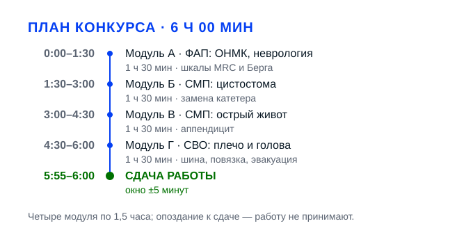
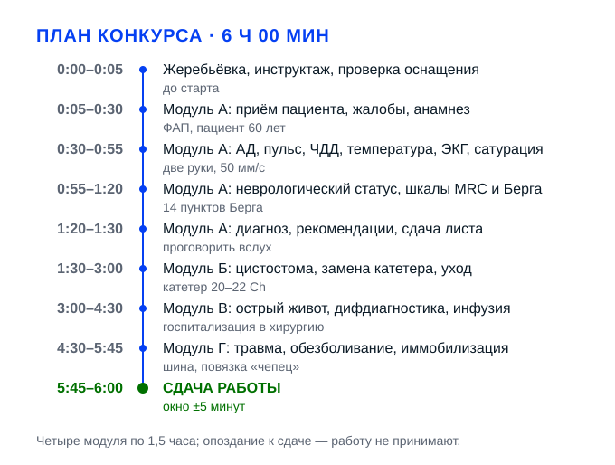
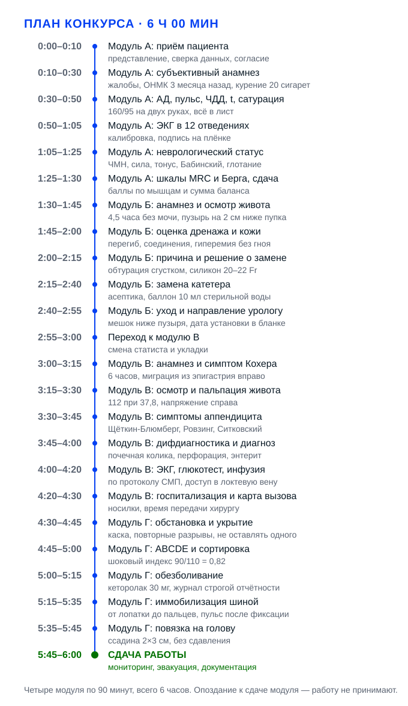

Фельдшер (Р,О)
Задания ниже — официальные файлы «Абилимпикс» (источник: abilympics-russia.ru), разложенные по категориям. Решения написаны по тексту задания, регламенту и критериям оценки; в них указано, что именно проверяет эксперт.
Школьник
14–16 лет, базовый уровень заданияВыдержка из официального конкурсного задания: страницы, относящиеся к категории «Школьник» (стр. 8–12 источника).
Пошаговое решение
Школьники проходят четыре модуля по полтора часа — всего шесть часов, и в каждом своя клиническая ситуация: мужчина 60 лет через три месяца после ишемического инсульта на приёме в ФАПе, мужчина 78 лет с нефункционирующей цистостомой, мужчина 24 лет с мигрирующей болью в животе и мужчина 30 лет с переломом плеча после обстрела. Каркас у всех один: приём и защита себя, субъективное обследование, измерения, оценка по шкалам, решение с обоснованием, манипуляция по алгоритму, рекомендации и документация. Баллы чаще уходят не на технике, а на связках: цифры измерены, но не названы вслух; катетер заменён, а решение не обосновано; шина наложена, а пульс после неё не проверен. Действие проговаривается, цифра записывается с единицами и временем, манипуляция заканчивается проверкой результата.

Задача 1. Принять пациента и собрать субъективное обследованиеМодуль А · 1 ч 30 мин · приём и расспрос
Модуль А начинается с самой простой по движениям и самой сложной по последствиям части: в ФАП отдалённого населённого пункта пришёл мужчина 60 лет, три месяца назад перенёсший ишемическое ОНМК в бассейне левой средней мозговой артерии. В задании первые два пункта — приём пациента и субъективное обследование, и они дают вам весь материал для дальнейшего: сторону пареза, давность, факторы риска. Здесь же набираются баллы за коммуникацию и за соблюдение санитарных требований, а потерянные на этом этапе сведения потом нечем восполнить — переспросить пациента в конце модуля уже не дадут времени.
Действие 1.1. Встретить пациента и защитить себя
Шаг 1.1.1
Гигиеническую обработку рук делаем до контакта с пациентом: намыливаем до запястий, трём ладони, тыльные поверхности, межпальцевые промежутки и большие пальцы тридцать секунд, смываем проточной водой и вытираем одноразовым полотенцем. Затем наносим кожный антисептик и ждём, пока он высохнет: мокрые от спирта руки нельзя брать в перчатки, кожа к концу модуля будет раздражена. Маску надеваем сразу на нос и подбородок, перчатки берём своего размера и натягиваем так, чтобы манжета закрывала запястье: осмотр предполагает пальпацию и измерение давления.
Санитарно-эпидемиологические требования входят в перечень того, что оценивают в каждом модуле, и проверяются они в первые же минуты — до того, как вы подойдёте к пациенту. Логика не формальная: у мужчины 60 лет после ОНМК и гипертонической болезни III стадии любая инфекция переносится тяжелее, а ваши руки — главный путь её передачи.
Проверьте три признака: руки сухие и без запаха спирта, перчатки сидят по размеру и не собраны складками у пальцев, маска закрывает нос. Манжета должна доходить до запястья и не подворачиваться при сгибании кисти — иначе она сползёт в самый неудобный момент, когда вы держите фонендоскоп.
Самая частая ошибка — надеть перчатки на влажные после антисептика руки: перчатка скользит, рвётся у большого пальца, и защита превращается в формальность, которую эксперт фиксирует как нарушение. Вторая — маска на подбородке или на одном ухе: внешне участник «в средствах защиты», а по факту дышит в открытую зону.
Эксперт смотрит руки и средства защиты при входе в бокс, до расспроса, и дальше отмечает, меняются ли перчатки. Часы и кольца он проверяет отдельно.
Шаг 1.1.2
Пациента приглашаем сесть так, чтобы спина имела опору, ноги стояли на полу, а свет падал на лицо: при правостороннем гемипарезе устойчивая посадка — это ещё и профилактика падения. Перед началом работы называем себя, уточняем два идентификатора — фамилию, имя, отчество и возраст, сверяем их с направлением или амбулаторной картой, и коротко объясняем, что будем делать и сколько это займёт. Спрашиваем разрешение на осмотр и измерения и ждём ответа, а не начинаем молча накладывать манжету.
Информированное согласие и умение объяснить свои действия — часть оценки коммуникации, которая идёт через весь модуль. Идентификация по двум признакам — не бюрократия: в ФАПе на приёме несколько человек, и перепутать карты проще, чем кажется. Кроме того, спокойное объяснение снижает тревогу пациента с дизартрией, которому трудно говорить, и он охотнее отвечает на вопросы, от которых зависит диагноз.
Пациент назвал себя сам, кивнул в ответ на объяснение, сидит устойчиво, руки лежат на коленях или на столе. Проверьте, что вы стоите не над ним, а сбоку на расстоянии вытянутой руки: так слышно речь и видно лицо, но нет давления сверху.
Начинать измерения без единого слова — типичная ошибка: пациент напрягается, показатели давления оказываются выше реальных, а балл за коммуникацию уже потерян. Вторая ошибка — посадить на табурет без спинки или на кушетку с опущенными ногами: при гемипарезе это прямая дорога к падению в боксе.
Эксперт слушает первые фразы: как участник представился, назвал ли возраст, попросил ли разрешение и объяснил ли смысл осмотра. В конце он спросит пациента, всё ли понятно.
Шаг 1.1.3
Первичную оценку сознания делаем тремя вопросами — как вас зовут, где вы находитесь, какое сегодня число, — и одной простой просьбой, например поднять левую руку. Одновременно оцениваем речь: при дизартрии она внятная, но замедленная, с нечёткой артикуляцией, и важно понять, понимает ли пациент обращённую речь, а не только произносит слова. Смотрим лицо в покое: сглаженность правой носогубной складки, симметрию при оскаливании зубов, положение языка.
В конкурсном задании сознание описано как ясное, речь внятная и медленная, понимание сохранено — значит, ваша задача подтвердить это и заметить, если что-то изменилось. Свежая слабость, внезапно появившаяся асимметрия лица или ухудшение речи переводят плановый осмотр в неотложную ситуацию, и тактика меняется полностью: это уже не оценка последствий трёхмесячной давности, а подозрение на повторное ОНМК.
Пациент ответил на все три вопроса, выполнил просьбу, речь понятна вам с первого раза. Зафиксируйте в карте формулировку «сознание ясное, ориентирован, контактен, речь внятная, замедленная» — именно в таком виде она потом пойдёт в диагноз.
Принять замедленную речь за алкогольное опьянение или за «он всегда так говорит» — грубая ошибка: дизартрия входит в описание статуса, её нужно назвать и объяснить. Вторая — не проверить понимание обращённой речи и удивляться, что пациент не выполняет команды, хотя просто не понял их.
Эксперт сверяет ваши слова с заданием: названа ли дизартрия, отмечена ли ориентированность, проверено ли понимание речи. Запись «в сознании» без описания речи он считает неполной.
Действие 1.2. Расспросить о жалобах, анамнезе заболевания и жизни
Шаг 1.2.1
Начинаем с открытого вопроса: «Что вас беспокоит больше всего?» — и даём пациенту договорить до конца, не перебивая. Дальше уточняем каждую жалобу по четырём направлениям: где именно слабость и снижение чувствительности, в какой руке и ноге, когда появились, что усиливает и что облегчает. Отдельно расспрашиваем про головные боли — характер, время появления, связаны ли с подъёмом давления, — и про утомляемость: после какой нагрузки наступает, сколько держится.
Жалобы — единственный источник, из которого складывается список нарушенных потребностей, а он в свою очередь определяет план ухода и рекомендации. В задании перечислены четыре группы жалоб, и в оценочном листе субъективное обследование стоит отдельным пунктом: если участник ограничился фразой «беспокоит слабость», он сам лишил себя материала для следующих задач модуля.
Проверьте себя по списку: названы слабость в правой руке и ноге, снижение чувствительности там же, головные боли, повышенная утомляемость. Пациент подтвердил каждую формулировку, и в карте они записаны его словами, а не заменены на «жалобы общего характера».
Закрытые вопросы «болит?» — «нет, не очень» дают пустые ответы: пациент с дизартрией экономит силы и соглашается с любой подсказкой. Вторая ошибка — не уточнить сторону: без «правой» или «левой» вся дальнейшая оценка по шкалам теряет смысл, потому что сравнивать будет не с чем.
Эксперт слушает, сколько времени ушло на расспрос и были ли уточняющие вопросы: одна жалоба, разобранная подробно, ценится выше четырёх, названных списком. Это видно по паузам в разговоре.
Шаг 1.2.2
Расспрашиваем про перенесённое ОНМК по хронологии: когда именно случилось, как проявилось, в каком стационаре лечился, сколько пробыл, с чем выписали. В задании указано, что три месяца назад было ишемическое ОНМК в бассейне левой средней мозговой артерии, пациент выписан с умеренным правосторонним гемипарезом и дизартрией, рекомендована реабилитация. Обязательно уточняем, проходил ли он реабилитацию после выписки, занимался ли с логопедом и инструктором ЛФК, когда последний раз был у невролога и какие препараты ему назначены.
Давность и сторона поражения — это то, из чего вырастает вся неврологическая часть модуля. Три месяца — поздний восстановительный период, когда движения восстанавливаются медленнее, чем в первые недели, и от этого зависит формулировка рекомендаций. Связь «левая средняя мозговая артерия — правая сторона тела» нужно не просто знать, а произнести, потому что эксперт проверяет именно понимание, а не заученную фразу.
В карте появились дата события, бассейн поражения, сторона пареза и наличие дизартрии. Вы можете назвать, что было рекомендовано при выписке и выполнено ли это хотя бы частично, — а это уже готовый аргумент для разговора о приверженности лечению.
Записать «состояние после инсульта» без даты и стороны — самая распространённая ошибка: формулировка звучит солидно, но из неё нельзя вывести ни оценку по MRC, ни рекомендации. Вторая — не спросить, проходил ли пациент реабилитацию: тогда рекомендация «продолжить реабилитацию» повисает в воздухе.
Эксперт проверяет, прозвучали ли дата, бассейн и сторона, и спрашивает: «Почему парез справа, если поражение слева?» Ответ он ждёт своими словами, а не цитатой.
Шаг 1.2.3
Анамнез жизни собираем по факторам риска: гипертоническая болезнь III стадии и то, как пациент принимает гипотензивные — в задании сказано «нерегулярно, эпизодически», и это нужно уточнить: только при высоких цифрах или курсами. Спрашиваем про курение — около 20 сигарет в день, и обязательно про стаж, потому что 20 сигарет в день при стаже двадцать лет и при стаже сорок лет — разные риски. Дальше — алкоголь, наследственность по сердечно-сосудистым заболеваниям, сахарный диабет, перенесённые операции, аллергоанамнез и непереносимость лекарств.
Определение факторов риска — отдельный пункт задания, и он прямо влияет на последнюю задачу модуля: рекомендации по образу жизни. Нерегулярный приём гипотензивных препаратов и курение относятся к управляемым факторам, то есть к тем, на которые можно повлиять разговором и назначением, — именно их и надо назвать, а не перечислять всё подряд. Аллергоанамнез нужен ещё и потому, что при подъёме давления может потребоваться препарат, и вводить его вслепую нельзя.
Названы три фактора: артериальная гипертензия с нерегулярным приёмом препаратов, курение 20 сигарет в день, перенесённое ОНМК. Аллергоанамнез уточнён отдельным вопросом, и ответ записан. Если пациент не помнит названия таблеток — фиксируйте хотя бы группу и кратность приёма.
Не спросить про аллергию и принимаемые препараты — ошибка, которая в модуле Б и Г может стоить дорого: там речь идёт о введении лекарств. Вторая — принять ответ «пью таблетки от давления» за приверженность лечению, хотя в задании прямо сказано, что приём эпизодический.
Эксперт ждёт, что участник сам разделит факторы на управляемые и неуправляемые и назовёт два-три. Курение он спрашивает отдельно: 20 сигарет в день — цифра из задания.
Задача 2. Провести объективное обследование и снять ЭКГМодуль А · 1 ч 30 мин · измерения и ЭКГ
Третий пункт задания перечисляет исследования, которые нужно выполнить до разговора о диагнозе: ЭКГ, пульсоксиметрия, термометрия, измерение артериального давления, частоты дыхания и пульса. В задании уже даны ориентиры — 160/95 мм рт. ст., 82 удара в минуту, 18 дыханий в минуту, 36,8 °C, — и ваша задача не угадать эти цифры, а получить их корректно и назвать вслух. Именно здесь теряется больше всего баллов из-за техники: манжета через рукав, пульс за пятнадцать секунд, градусник под мышкой две минуты.
Действие 2.1. Измерить давление, пульс, дыхание, температуру и сатурацию
Шаг 2.1.1
Артериальное давление измеряем на обеих руках. Пациент сидит не менее пяти минут, рука лежит на столе на уровне сердца, ладонью вверх, плечо освобождено от рукава. Манжету накладываем так, чтобы нижний край был на два-три сантиметра выше локтевой ямки, а трубки выходили наружу; затягиваем так, чтобы под неё проходил один палец. Находим пульс на плечевой артерии, ставим фонендоскоп, накачиваем на тридцать миллиметров выше исчезновения пульсации и спускаем по два-три миллиметра в секунду. Первый тон Короткова — систолическое, последний — диастолическое. Через одну-две минуты повторяем на другой руке.
Измерение на двух руках — не избыточность: разница более десяти миллиметров говорит о стенозе подключичной артерии или о высоком сосудистом риске, а у пациента с гипертонической болезнью III стадии и перенесённым ОНМК это принципиально. Критерий «оценка основных параметров функционального состояния» оценивается по технике, а не по красивой цифре.
Получены два значения, разница между руками посчитана и названа. Манжета подобрана по обхвату плеча, рука не висит и не напряжена, цифры записаны с указанием руки и времени. Если первое измерение резко отличается от ожидаемого, повторите его через две минуты, не меняя положения пациента.
Измерять через рукав или поверх тонкой ткани, держать руку на весу, спускать воздух быстро — всё это даёт завышенные или заниженные цифры, а эксперт видит технику целиком. Вторая ошибка — одно измерение на одной руке: разницу между сторонами вы просто не узнаете и не сможете её обсудить.
Эксперт смотрит положение руки и манжеты, скорость спуска и то, назвал ли участник оба значения и разницу между ними. При одном измерении он просит повторить на другой руке.
Шаг 2.1.2
Пульс считаем на лучевой артерии: два-три пальца у основания большого пальца, с умеренным нажатием, сначала на одной руке, потом на другой. Считаем не пятнадцать секунд с умножением, а полные тридцать или шестьдесят, если ритм неровный, и оцениваем не только частоту, но и ритмичность, наполнение, напряжение, а также одинаковость на обеих руках. Частоту дыхания считаем, не сообщая пациенту о том, что считаем: руку кладём на грудную клетку или на живот и смотрим на экскурсию в течение полной минуты, оценивая глубину и ритм.
В задании пульс 82 удара в минуту и дыхание 18 в минуту — цифры в пределах нормы, но именно поэтому их легко «пропустить» и не описать. Между тем при гипертонической болезни важно, ритмичен ли пульс: нерегулярность заставит искать фибрилляцию предсердий, а это другой риск повторного ОНМК. Дыхание, о котором пациент знает, что его считают, сразу становится глубже и реже — и вы получите неверную цифру.
Пульс 82, ритмичный, удовлетворительного наполнения и напряжения, одинаковый на обеих руках; дыхание 18 в минуту, ритмичное, везикулярное, хрипов нет. Проверьте, что секундомер или часы перед вами, а не в кармане: счёт «про себя» на конкурсе почти всегда сбивается.
Считать пульс пятнадцать секунд и умножать на четыре — ошибка, которая при аритмии даёт неверную цифру, а при нормальном ритме выглядит как формальность. Вторая — объявить вслух «сейчас посчитаю ваше дыхание»: пациент начинает дышать по-другому, и цифра теряет смысл.
Эксперт отмечает, названы ли характеристики пульса, а не только число, и считалось ли дыхание незаметно. Он подходит в момент счёта и смотрит, где лежит рука.
Шаг 2.1.3
Термометрию проводим в подмышечной впадине: кожу вытираем насухо, потому что влага занижает результат, вкладываем термометр так, чтобы резервуар полностью соприкасался с кожей, прижимаем плечо к туловищу и держим пять минут при ртутном термометре или до звукового сигнала при электронном. Пульсоксиметр надеваем на палец без лака и без искусственных ногтей, рука должна быть тёплой и лежать спокойно; ждём тридцать-шестьдесят секунд, пока плетизмограмма не станет ровной, и только потом читаем значение. Оба результата записываем с единицами измерения и временем.
Температура 36,8 °C в задании — это норма, и её значение в том, чтобы исключить инфекцию: при повышенной температуре пришлось бы думать о другом происхождении слабости. Сатурация показывает, достаточно ли кислорода в крови: у пациента после ОНМК снижение ниже 95% требует объяснения и кислородотерапии. Пульсоксиметрия и термометрия прямо перечислены в третьем пункте задания, и обе входят в перечень обязательных измерений модуля.
Термометр показал 36,8 °C, пульсоксиметр — значение не ниже 95% при ровной кривой. Проверьте, что палец не сдавлен, не холодный и без лака: при плохом сигнале прибор выдаёт цифру, но ей нельзя верить, а повторное измерение занимает полминуты.
Держать градусник две минуты и записывать «примерно 37» — ошибка, которую видно по времени. Вторая — надеть датчик на холодный палец с маникюром и записать первое мелькнувшее число: при плохой перфузии ошибка достигает нескольких процентов.
Эксперт проверяет, записаны ли единицы и время, и спрашивает, что означают цифры для этого пациента. Ответ про норму температуры и сатурацию выше 95% он ждёт одной фразой.
Действие 2.2. Снять и прочитать ЭКГ в двенадцати отведениях
Шаг 2.2.1
Объясняем пациенту, что исследование безболезненное и займёт несколько минут, укладываем его на кушетку на спину, освобождаем грудную клетку, область запястий и голеней. Кожу протираем спиртом, чтобы обезжирить и улучшить контакт, наносим гель. Электроды на конечности ставим по стандарту: красный — правое предплечье, жёлтый — левое, зелёный — левая голень, чёрный — правая голень. Грудные отведения: V1 в четвёртое межреберье справа от грудины, V2 — в четвёртое слева, V3 — между V2 и V4, V4 — в пятое межреберье по среднеключичной линии, V5 — по передней подмышечной на уровне V4, V6 — по средней подмышечной.
Правильное положение электродов — условие читаемой плёнки: перепутанные руки дают отрицательный зубец P в первом отведении и «зеркальные» изменения, а V1 и V2, поставленные на два межреберья выше, имитируют инфаркт. При гипертонической болезни III стадии и перенесённом ОНМК ЭКГ нужна, чтобы увидеть гипертрофию левого желудочка, признаки ишемии и рубцовые изменения — без корректных точек этого не сделать.
Все шесть грудных электродов стоят на своих точках, наклейки не на кости и не на волосяном покрове, кривая на экране без «плавания» базовой линии и без сетевых помех. Проверьте симметрию: V1 и V2 на одном уровне, V4, V5, V6 — по одной горизонтали.
Перепутать красный и жёлтый электроды — самая частая техническая ошибка, и она даёт ложную картину, на которую потом можно опереться в рассуждении. Вторая — поставить V1 и V2 на второе межреберье: плёнка выглядит «с инфарктными изменениями», хотя их нет.
Эксперт обходит кушетку и смотрит точки наложения, а не только бумагу. Отдельно он проверяет, обезжирена ли кожа: на жирной коже гель не даёт контакта. Порядок наложения стоит проговаривать вслух.
Шаг 2.2.2
Записываем плёнку на скорости 50 мм/с и усилении 10 мм/мВ, по три-четыре комплекса в каждом отведении, попросив пациента задержать дыхание на время записи грудных отведений. Подписываем плёнку: фамилия и инициалы, возраст, дата и время, кто снимал. Дальше читаем по порядку: ритм и наличие зубца P перед каждым комплексом, частота сердечных сокращений, положение электрической оси, высота зубцов R в V5–V6 и глубина S в V1–V2, состояние сегмента ST и зубца T, наличие патологических Q.
Задержка дыхания убирает наложение дыхательной волны, иначе базовая линия «плывёт» и оценить ST невозможно. Читать плёнку нужно при пациенте, потому что в задании есть пункт «озвучьте предварительный диагноз»: изменения на ЭКГ — один из его аргументов. При давлении 160/95 высокие зубцы R в левых грудных отведениях и депрессия ST будут ожидаемы, и их надо назвать, а не пролистать.
Ритм синусовый, частота около 82 в минуту и совпадает с пульсом на лучевой артерии, свежих подъёмов ST нет, плёнка подписана и лежит рядом с картой. Если видите изменения, которые не можете объяснить, назовите их как факт: «высокие R в V5, депрессия ST до 1 мм» — это уже наблюдение, а не догадка.
Записать плёнку без подписи — ошибка, из-за которой результат нельзя приложить к документации, а это отдельный пункт задания. Вторая — снимать при разговоре и дрожи пациента: помехи закрывают сегмент ST, и вы теряете главное, что искали.
Эксперт подходит к концу записи и спрашивает, что участник увидел: ценится не диагноз по ЭКГ, а описание ритма и зубцов. Подписанная плёнка для него — доказательство работы.
Задача 3. Оценить неврологический статус по шкалам, назвать диагноз и рекомендацииМодуль А · 1 ч 30 мин · неврология и шкалы
Четвёртый, пятый, шестой и седьмой пункты задания — сердцевина модуля А: физикальное обследование нервной системы, оценка двигательных функций по шкале MRC и шкале Берга, предварительный диагноз и рекомендации по реабилитации. Здесь проверяют не ловкость рук, а клиническое мышление: нужно связать сторону пареза с бассейном поражения, превратить осмотр в баллы по двум шкалам и объяснить пациенту, что делать дальше. Формулировки шкал спрашивают дословно, поэтому их стоит проговорить до конкурса.
Действие 3.1. Провести физикальное обследование нервной системы
Шаг 3.1.1
Начинаем с черепных нервов и речи. Просим повторить фразу из нескольких слов, назвать предметы вокруг, показать язык, оскалить зубы, зажмурить глаза, проследить взглядом за молоточком в стороны. Смотрим на лицо: при центральном поражении сглажена правая носогубная складка, при оскаливании правая половина отстаёт, язык отклоняется в сторону пареза. Речь оцениваем на слух — замедленная, с нечёткой артикуляцией, но понятная: это и есть дизартрия, которая указана в задании.
Дизартрия и парез мимической мускулатуры при поражении левой средней мозговой артерии ожидаемы, и их описание подтверждает, что вы понимаете локализацию. Физикальное обследование нервной системы — отдельный пункт задания, и оценивают его по полноте: если осмотрены только сила и тонус, картина неврологического статуса остаётся неполной, а рекомендации по логопеду будут выглядеть немотивированными.
Речь понятна с первого раза, но замедлена; правая носогубная складка сглажена; язык по средней линии или с лёгким отклонением; понимание обращённой речи сохранено — пациент выполняет двух- и трёхступенчатые просьбы. Все находки названы вслух и записаны.
Ограничиться фразой «речь сохранена» и не заметить дизартрию — потеря прямого пункта задания. Вторая ошибка — проверять черепные нервы на ходу, не дав пациенту времени выполнить просьбу: при замедленном темпе он просто не успевает, и вы получаете ложное впечатление о нарушении.
Эксперт слушает, как участник формулирует находки: «дизартрия, сглаженность правой носогубной складки» звучит иначе, чем «лицо нормальное». Он смотрит и на то, даёт ли тот договорить.
Шаг 3.1.2
Оцениваем тонус и силу. Сначала смотрим позу: правая рука приведена и согнута, кисть в положении сгибания — типичная поза Вернике — Манна при спастическом гемипарезе. Затем выполняем пассивные движения в правом локте, кисти, колене и стопе, оценивая сопротивление: при спастичности оно повышается по пирамидному типу, то есть сильнее в сгибателях рук и разгибателях ног. После этого просим активные движения и пробу Барре: пациент вытягивает обе руки вперёд, закрывает глаза, и вы держите их десять секунд — паретичная рука опускается.
Проба Барре занимает десять секунд и даёт объективный признак, который трудно переоценить: пациент может старательно держать руку, но она всё равно опускается. Сопоставление тонуса и силы нужно для шкалы MRC в следующем шаге: без понимания, где спастичность, а где истинная слабость, балл ставится наугад. Для пациента с трёхмесячной давностью ОНМК повышение тонуса — ожидаемая находка, и её надо не исправлять, а описать.
Правая рука опускается в пробе Барре в течение десяти секунд, тонус в правых конечностях повышен, активные движения возможны, но ослаблены и замедлены. Сравните обе стороны по одному движению: попросите согнуть руки в локтях одновременно — разница видна сразу.
Резко тянуть паретичную руку или разгибать её через сопротивление — риск боли и повреждения плечевого сустава, который при гемипарезе легко вывихивается. Вторая ошибка — оценивать только руку: в задании гемипарез, то есть страдает и нога, а про ногу забывают чаще всего.
Эксперт смотрит на бережность и симметрию: сравниваются ли стороны, проверена ли нога, названа ли проба Барре. Он фиксирует момент, когда участник отпускает паретичную руку.
Шаг 3.1.3
Проверяем чувствительность, рефлексы, координацию и менингеальные симптомы. Чувствительность — ваткой и одноразовой иглой, симметрично, начиная со здоровой стороны: кисти, предплечья, стопы, голени, туловище. Сухожильные рефлексы вызываем неврологическим молоточком: сгибательно-локтевой с бицепса, разгибательно-локтевой с трицепса, коленный и ахиллов. Координацию — пальценосовая и пяточно-коленная пробы, поза Ромберга. Менингеальные симптомы — ригидность затылочных мышц и симптом Кернига — проверяем, чтобы исключить острую патологию.
Снижение чувствительности в правой руке и ноге прямо указано в жалобах, и осмотр должен его подтвердить или уточнить зону. Асимметрия рефлексов — объективное подтверждение центрального пареза: на стороне поражения рефлексы оживляются. Менингеальные симптомы нужны не для полноты, а для безопасности: их отсутствие позволяет спокойно продолжать плановое обследование, а не менять тактику на неотложную.
Выявлена гипестезия справа, рефлексы справа живые, выше, чем слева, координация удовлетворительная, менингеальных симптомов нет. Проверьте, что игла одноразовая и кожа не повреждена: сильное раздражение даёт ложное ощущение и смазывает картину.
Колоть иглой сильно и часто в одно место — ошибка, которая не добавляет информации, но причиняет боль. Вторая — проверять чувствительность через одежду: тактильные ощущения искажаются, и зона гипестезии определяется неверно.
Эксперт ждёт, что результаты названы по зонам и сторонам, а не сведены к «чувство сохранено». Отсутствие менингеальных симптомов он тоже считает результатом.
Действие 3.2. Оценить двигательные функции по шкалам MRC и Берга
Шаг 3.2.1
Шкала MRC оценивает мышечную силу от 0 до 5 баллов, и применять её нужно по группам мышц. Проверяем сгибание и разгибание плеча и предплечья, сгибание кисти, сгибание и разгибание бедра, сгибание голени и тыльное сгибание стопы. Сначала просим активное движение и смотрим, выполняется ли оно против силы тяжести, затем добавляем сопротивление рукой. Расшифровка: 0 — сокращения нет, 1 — сокращение без движения, 2 — движение при снятой силе тяжести, 3 — против силы тяжести, но не против сопротивления, 4 — против сопротивления, но ослабленное, 5 — норма. Результат записываем по каждой группе отдельно.
Пятый пункт задания требует именно шкалы MRC и Берга, и балл MRC — это тот язык, на котором потом формулируется тяжесть пареза: умеренный парез соответствует 3–4 баллам. Оценка «по группам» нужна потому, что при гемипарезе проксимальные и дистальные отделы восстанавливаются по-разному, и от этого зависит, что именно тренировать в реабилитации. Заученная фраза «сила снижена» балла не даёт: эксперту нужны цифры.
В таблице заполнены все проверенные группы, у каждой стоит балл от 0 до 5, слева — 5 как точка сравнения. Назовите итог вслух: например, проксимально 4 балла, дистально 3–4. Если сомневаетесь между 3 и 4, проверьте ещё раз с сопротивлением по нарастающей.
Поставить всем группам «4» без реального сопротивления — ошибка, которую эксперт замечает сразу: он видит, насколько сильно участник давит на конечность. Вторая — оценивать силу одной кистью и распространять вывод на всю конечность.
Эксперт смотрит, создаётся ли сопротивление и как формулируется балл: «снижение до 4 баллов проксимально» — ответ, «рука слабее» — нет. Одну группу он может попросить повторить.
Шаг 3.2.2
Шкала Берга оценивает баланс и риск падений: четырнадцать заданий, каждое от 0 до 4 баллов, максимум 56. В конкурсных условиях выполнимы самые показательные: вставание со стула и переход в положение стоя, стояние без опоры две минуты, стояние с закрытыми глазами, поворот на 360 градусов, поднимание предмета с пола, перенос ноги на ступеньку, сесть и встать. Каждое задание оцениваем по критериям: самостоятельно, с помощью, с опорой, с минимальным или значительным отклонением. Баллы считаем вслух и суммируем. Интерпретация: 41–56 — низкий риск падений, 21–40 — средний, 20 и меньше — высокий.
Шкала Берга прямо названа в задании, и её результат определяет практические рекомендации: при среднем риске нужна трость или ходунки и занятия с инструктором ЛФК, при высоком — ходьба только с поддержкой. Без суммы баллов рекомендация «ходить осторожно» звучит как отписка.
Сумма посчитана и названа с интерпретацией: например, 38 баллов — средний риск. Проверьте, что пациент выполнял задания сам, а вы только страховали: если вы придерживали его за локоть, балл нужно снижать, а не записывать как самостоятельное выполнение.
Считать «на глаз» и написать «около 50» — ошибка, потому что шкала дискретная и требует подсчёта по заданиям. Вторая — подстраховывать пациента руками и при этом ставить полный балл: сумма завышается, и рекомендации становятся неверными.
Эксперт смотрит на страховку и арифметику: пересчитывает сумму, если она кажется завышенной. Ему важно услышать «средний риск падений», а не только число.
Действие 3.3. Сформулировать диагноз, дать рекомендации и заполнить документацию
Шаг 3.3.1
Предварительный диагноз формулируем в три слоя. Первый — основное заболевание: последствие ишемического ОНМК в бассейне левой средней мозговой артерии трёхмесячной давности. Второй — синдромы: правосторонний умеренный гемипарез, дизартрия, снижение чувствительности справа. Третий — фон и факторы риска: гипертоническая болезнь III стадии, нерегулярный приём гипотензивных, артериальное давление 160/95 мм рт. ст., курение 20 сигарет в день. Проговариваем диагноз вслух, называя за каждым словом конкретную цифру или находку.
Шестой пункт задания звучит как «озвучьте предварительный диагноз», и оценивают именно озвучивание: диагноз должен быть слышен, а не только записан. Трёхслойная структура удобна тем, что не даёт забыть ни основное заболевание, ни синдром, ни фон, — а именно фон объясняет, почему давление 160/95 и что с этим делать. Умеренный парез — это формулировка из задания, и она должна совпасть с вашими баллами MRC.
В формулировке есть давность, бассейн, сторона пареза, наличие дизартрии, стадия гипертонической болезни и цифры давления. Проверьте согласованность: если по MRC получилось 4 балла, парез не может называться грубым.
Сказать «состояние после инсульта» и остановиться — половина ответа: нет стороны, давности и фона. Вторая ошибка — назвать парез грубым, не сверившись со шкалой: расхождение между диагнозом и баллами MRC эксперт замечает первым.
Эксперт слушает формулировку целиком и спрашивает, почему давление 160/95 важно для диагноза. Названную тяжесть пареза он сверяет с баллами MRC.
Шаг 3.3.2
Рекомендации делим на четыре части. Первая — приверженность лечению: гипотензивные препараты ежедневно, а не «когда давление поднимется», дневник давления с измерением дважды в день, целевое давление ниже 140/90 мм рт. ст. Вторая — образ жизни: полный отказ от курения, соль не более 5 граммов в сутки, регулярная ходьба. Третья — реабилитация: лечебная физкультура по 30–40 минут, занятия с логопедом при дизартрии, при среднем риске падений трость и помощь близких. Четвёртая — наблюдение: осмотр невролога, антиагреганты и статины по назначению, а при внезапной слабости, асимметрии лица или нарушении речи — вызов скорой.
Седьмой пункт задания — рекомендации по реабилитации и образу жизни, и именно они превращают осмотр в пользу для пациента. Нерегулярный приём гипотензивных при давлении 160/95 и гипертонической болезни III стадии — главная управляемая причина повторного ОНМК, поэтому разговор об этом обязателен. Курение 20 сигарет в день — второй по значимости фактор, и рекомендация должна быть конкретной: не «бросайте», а «обсудите с врачом способы отказа и назначьте дату».
Пациент может повторить своими словами три главных пункта: таблетки каждый день, отказ от курения, занятия реабилитацией. В карте записаны цифры — целевое давление, соль до 5 граммов, длительность занятий, — а не общие слова.
Сказать «соблюдайте диету и режим» — рекомендация, которую невозможно выполнить, потому что в ней нет ни одного измеримого параметра. Вторая ошибка — не назвать признаки повторного ОНМК: пациент с гемипарезом может принять новую слабость за обычную и не вызвать скорую.
Эксперт слушает разговор с пациентом и оценивает, понял ли тот, что делать завтра утром. Он ждёт, что прозвучат признаки повторного инсульта и порядок действий.
Шаг 3.3.3
Заполняем документацию по модулю: в карту вносим дату и время приёма, жалобы, анамнез заболевания и жизни, объективные данные с единицами измерения — 160/95 мм рт. ст. на обеих руках, 82 удара в минуту, 18 дыханий в минуту, 36,8 °C, сатурацию, — результаты неврологического осмотра, баллы MRC и Берга с интерпретацией, описание ЭКГ, предварительный диагноз и рекомендации. Записываем разборчиво, без сокращений, которые поймёт только автор, ставим подпись и время окончания приёма.
Заполнение медицинской документации — отдельный пункт и в общем описании компетенции, и в задании модуля. Проверяют её по факту: если цифры измерены, но не записаны, считается, что исследования не выполнены. Разборчивость — не эстетика: запись читает другой фельдшер или врач, и нечитаемая цифра давления превращается в ноль информации.
Пройдите по карте глазами проверяющего: есть ли все пять измерений с единицами, есть ли баллы обеих шкал, есть ли диагноз и рекомендации, стоит ли подпись. Если чего-то не хватает, допишите сразу — после сдачи модуля это сделать не дадут.
Записать «АД повышено» вместо цифры — потеря измеримого результата. Вторая ошибка — оставить документацию на последние минуты и заполнить её частично: эксперту достаточно увидеть пустые строки, чтобы снять баллы за весь блок.
Эксперт читает карту после модуля, не спрашивая участника: незаписанное считается невыполненным. Он ищет пять цифр измерений, два балла по шкалам и формулировку диагноза.
Задача 4. Обследовать пациента с нефункционирующей цистостомойМодуль Б · 1 ч 30 мин · анамнез и осмотр
Модуль Б — вызов скорой помощи к мужчине 78 лет, у которого четыре месяца стоит надлобковая цистостома, а моча не отходит уже 4,5 часа. Задание начинается с анамнеза и физикального обследования мочевыделительной системы: нужно понять, есть ли моча в пузыре, и отделить проблему дренажа от проблемы почек. Именно от этого зависит всё дальнейшее — менять катетер или везти в стационар. Ошибка на этом этапе стоит дорого, потому что перерастянутый пузырь у пожилого человека с ишемической болезнью сердца — это ещё и риск рефлекторных нарушений ритма.
Действие 4.1. Собрать анамнез заболевания и жизни
Шаг 4.1.1
Начинаем с того, что беспокоит сейчас: когда последний раз моча отходила по трубке и сколько её было, какого цвета, не было ли осадка, хлопьев или песка. Дальше восстанавливаем историю: год назад появились затруднения при мочеиспускании и частые ночные позывы, шесть месяцев назад симптомы усилились, четыре месяца назад развилась полная задержка мочи и потребовалась экстренная надлобковая цистостома, сейчас пациент ждёт операции по поводу доброкачественной гиперплазии предстательной железы. Отдельно уточняем, меняли ли катетер за эти четыре месяца и когда это было в последний раз.
Срок стояния катетера и характер отделяемого — ключ к причине. При стоянии четыре месяца трубка почти неизбежно покрывается солевой и слизистой плёнкой, просвет сужается, и в какой-то момент отток прекращается полностью. Если катетер меняли месяц назад и он снова не работает, причина может быть в другом — например, в сгустке или в смещении. В задании пункт про анамнез стоит первым, и оценивают его по конкретности: «болеет давно» здесь не принимается.
Вы можете назвать четыре даты — начало симптомов, ухудшение, установку цистостомы и последнюю замену катетера — и описать, как выглядела моча в последние сутки. Пациент подтвердил, что боли внизу живота распирающие, а не режущие: это признак растяжения, а не воспаления.
Записать «цистостома не работает» без срока и без описания отделяемого — половина анамнеза потеряна, и обосновать замену будет нечем. Вторая ошибка — не спросить, когда катетер меняли: без этого невозможно отличить инкрустацию от случайного перегиба.
Эксперт слушает, спрашивает ли участник про срок и характер мочи, и связаны ли эти данные с решением. Если не прозвучало «четыре месяца», анамнез собран формально.
Шаг 4.1.2
Уточняем сопутствующие заболевания и лекарства: тамсулозин 0,4 мг утром и изосорбида динитрат 20 мг два раза в день по поводу ишемической болезни сердца со стенокардией напряжения второго функционального класса. Спрашиваем про аллергоанамнез, в том числе на латекс, антисептики и антибиотики, про перенесённые операции, про объём выпитой жидкости за сутки и про температуру дома. Отдельно — как пациент переносит горизонтальное положение: при стенокардии это важно для укладки перед манипуляцией.
Тамсулозин расслабляет гладкую мускулатуру простаты и шейки пузыря, но на механическую обтурацию катетера он не влияет — значит, надеяться на таблетку бессмысленно. Изосорбида динитрат расширяет сосуды, и при укладке с приподнятым ножным концом давление может упасть. Аллергия на латекс определяет выбор катетера: при ней нужен силиконовый, иначе манипуляция закончится реакцией, а не оттоком мочи.
Названы оба препарата с дозами и кратностью, аллергоанамнез уточнён прямым вопросом, объём выпитой жидкости за сутки известен. Если пациент говорит, что «пьёт мало, чтобы не мучиться», это отдельный фактор риска инкрустации, и его стоит запомнить.
Не спросить про аллергию перед введением катетера — ошибка, которая может обернуться анафилаксией у 78-летнего пациента с ишемической болезнью сердца. Вторая — не поинтересоваться объёмом питья: обезвоживание ускоряет образование солей на трубке, и рекомендации без этого будут неполными.
Эксперт проверяет, прозвучали ли дозы и аллергоанамнез, и связывает ли участник лекарства с тактикой. Вопрос «а тамсулозин поможет?» задаётся специально.
Действие 4.2. Осмотреть живот, мочевой пузырь и цистостому
Шаг 4.2.1
Пациента укладываем на спину, ноги сгибаем в коленях, чтобы расслабить переднюю брюшную стенку, живот обнажаем полностью — от мечевидного отростка до лобка. Сначала осмотр: форма живота, вздутие, участие в дыхании, послеоперационный рубец над лобком, состояние кожи. Затем аускультация перистальтики, и только после неё — пальпация: поверхностная, от левой подвздошной области по кругу, заканчивая надлобковой зоной. Высоту стояния дна пузыря определяем перкуссией и пальпацией: в задании он пальпируется на два сантиметра ниже пупка.
Последовательность «осмотр — аускультация — пальпация» не формальность: грубая пальпация до аускультации меняет перистальтику, и вы теряете информацию о снижении моторики, которое в задании указано. Положение дна пузыря на два сантиметра ниже пупка означает, что в нём скопилось несколько сотен миллилитров: почки мочу вырабатывают, значит, проблема не в них, а в дренаже. Это главный вывод всего осмотра.
Живот умеренно вздут, перистальтика снижена, над лобком определяется болезненность, перкуторно — тупость, дно пузыря на два сантиметра ниже пупка. Проверьте, что вы измерили высоту в сантиметрах от пупка, а не «примерно на глаз»: эта цифра пойдёт в обоснование замены катетера.
Давить на надлобковую область «до упора», чтобы убедиться в наличии пузыря, — опасная ошибка: перерастянутая стенка при грубой пальпации может надорваться. Вторая — начинать пальпацию с болезненной зоны: пациент напрягает живот, и дальше осмотр неинформативен.
Эксперт смотрит порядок методов и бережность: при перерастянутом пузыре пальпация должна быть поверхностной. Он проверяет, названа ли высота дна в сантиметрах.
Шаг 4.2.2
Снимаем повязку вокруг стомы и осматриваем место входа дренажа: цвет кожи, наличие гиперемии, мацерации, гнойного отделения, запах. Проверяем фиксацию трубки — не подтянута ли она, на месте ли метка, нет ли перегиба под одеждой, зажима на трубке, давления телом. Смотрим мочеприёмник: он должен быть ниже уровня пузыря, не переполнен и не подвешен на пояс. Проходимость проверяем аспирацией шприцем Жане через порты: если содержимое не поступает, просвет закрыт.
В задании кожа вокруг дренажа умеренно гиперемирована, но гнойного отделения нет, а температура 36,2 °C — значит, признаков инфекции нет, и гиперемия объясняется механическим раздражением. Это важно: назначение антибиотиков без признаков инфекции было бы ошибкой, а вот оценить дренаж нужно целиком. Аспирация отделяет обтурацию от перегиба: если при свободной трубке содержимое не идёт, дело в просвете.
Гиперемия умеренная, без гноя и без мацерации, трубка зафиксирована, метка на месте, перегибов нет, мочеприёмник ниже пузыря. При аспирации содержимое не получено — катетер непроходим. Все три факта названы вслух и записаны.
Промывать катетер «под давлением», чтобы пробить пробку, — риск разрыва пузыря и заноса инфекции. Вторая ошибка — оценить только кожу и не проверить трубку на перегиб и зажим: тогда замена катетера делается там, где достаточно было расправить трубку.
Эксперт наблюдает за асептикой при снятии повязки и за тем, осмотрены ли трубка, мешок и кожа как система. Он специально смотрит на метку катетера.
Задача 5. Назвать причину, заменить катетер и дать рекомендацииМодуль Б · 1 ч 30 мин · причина, замена, рекомендации
Самая весомая часть модуля Б: сначала нужно объяснить, почему моча не отходит, потом обосновать необходимость замены, затем выполнить её по алгоритму с соблюдением асептики и подобрать катетер по размеру и материалу, а в конце — рассказать пациенту, как жить с цистостомой, и выписать направление к урологу. Задание требует именно обоснования решения, а не самого действия: эксперту важно услышать логику, по которой участник пришёл к замене.
Действие 5.1. Определить причину и обосновать замену
Шаг 5.1.1
Называем вероятную причину вслух и по порядку исключаем остальные. Первое — обтурация просвета солями и слизью: катетер стоит четыре месяца, это классический срок инкрустации. Второе — механическое препятствие: перегиб, зажим, сдавление, смещение или подтягивание трубки. Третье — выпадение катетера из полости пузыря, при котором моча идёт в подкожную клетчатку, а не в мешок. Почечную причину исключаем по осмотру: пузырь полный, дно на два сантиметра ниже пупка, значит, моча образуется. Обезвоживание уточняем по объёму выпитой жидкости.
Пятый пункт задания требует обосновать решение о замене, и обоснование начинается с причины. Если участник называет «инфекцию», ему нечего ответить на вопрос, почему температура 36,2 °C и нет гнойного отделения. Если называет «почечную недостаточность», он противоречит собственному осмотру, в котором пузырь переполнен. Логика здесь простая и проверяемая: есть моча в пузыре, нет оттока по трубке — проблема в трубке.
Причина названа одной фразой с опорой на три факта: срок стояния четыре месяца, полный пузырь, отсутствие поступления содержимого при аспирации. Механические причины проверены и исключены, признаки инфекции отсутствуют.
Сразу объявить «инфекция мочевыводящих путей» — ошибка, потому что температура нормальная, а гиперемия вокруг стомы умеренная и без гноя. Вторая — не проверить механику и начать с инвазивной манипуляции там, где достаточно было снять зажим.
Эксперт спрашивает: «А почему не почечная недостаточность?» — и ждёт ответа про переполненный пузырь. Второй вопрос — про инфекцию при температуре 36,2 °C.
Шаг 5.1.2
Формулируем решение: замена катетера показана. Обоснование состоит из четырёх пунктов — оттока нет 4,5 часа, пузырь перерастянут, дно на два сантиметра ниже пупка, катетер стоит четыре месяца при рекомендованном сроке замены каждые четыре-шесть недель, аспирация содержимого не даёт, механические причины исключены. Проговариваем это пациенту простыми словами, объясняем, что процедура займёт несколько минут, получаем согласие и предупреждаем о возможных ощущениях.
Пункт пятый задания звучит как «принять решение о необходимости замены и обосновать его», то есть оценивают именно аргументацию, произнесённую вслух. Кроме того, срок стояния четыре месяца сам по себе является показанием к плановой замене — даже если бы отток сохранялся. Согласие пациента обязательно: манипуляция инвазивная, и без разговора её начинать нельзя.
Обоснование из четырёх пунктов произнесено, согласие получено, пациент понимает, что будет происходить. Проверьте, что вы не сказали «надо поменять» без причины: эксперт фиксирует именно аргументы.
Молча приступить к замене — потеря баллов за обоснование, даже если техника идеальна. Обратная ошибка — отказаться от замены со словами «пусть уролог решает»: помощь нужна сейчас, а направление к урологу — отдельный пункт задания, оно не отменяет манипуляцию.
Эксперт считает, сколько аргументов прозвучало: два и больше — уверенный ответ, один — половина. Он также проверяет, получено ли согласие до манипуляции.
Действие 5.2. Заменить урологический катетер по алгоритму
Шаг 5.2.1
Готовим всё до начала манипуляции: гигиеническая обработка рук, стерильные перчатки, стерильная пелёнка и лоток, кожный антисептик, стерильные салфетки и пинцеты, стерильный лубрикант, шприц 10 мл со стерильной водой для баллона, шприц Жане 50–100 мл с физиологическим раствором, новый катетер Фолея 20–22 Ch, мочеприёмник, мешок для отходов класса Б. Катетер выбираем силиконовый, двухходовой, с баллоном 10 мл. Объясняем пациенту этапы, укладываем на спину, подкладываем пелёнку, обрабатываем кожу вокруг стомы антисептиком от центра к периферии и высушиваем.
Размер и материал — прямое требование задания, и они не случайны: 20–22 Ch обеспечивает отток густой мочи с хлопьями, а силикон меньше инкрустируется солями, чем латекс, и реже вызывает реакцию. В баллон набирают именно стерильную воду: физиологический раствор в баллоне кристаллизуется, и в следующий раз баллон не спустится — катетер придётся удалять урологу. Всё должно лежать на лотке заранее, потому что искать шприц с испачканными перчатками уже нельзя.
На лотке есть все позиции, упаковки вскрыты непосредственно перед манипуляцией, в шприце для баллона — стерильная вода, катетер нужного размера и материала. Кожа вокруг стомы обработана и сухая: на влажной коже фиксация хуже, а антисептик с остатками мочи раздражает.
Набрать в баллон физиологический раствор — ошибка, которую на конкурсе проверяют отдельно, потому что последствие отложенное и опасное. Вторая — взять катетер 14–16 Ch «чтобы легче входил»: узкий просвет забьётся снова в течение месяца, и пациент вернётся с той же проблемой.
Эксперт пересчитывает комплектацию до начала работы и проверяет, что в шприце для баллона. Вопрос «почему силикон, а не латекс» задают почти всегда.
Шаг 5.2.2
Спускаем баллон старого катетера: набираем 10 мл воздуха или воды в шприц, присоединяем к порту баллона, отсасываем содержимое и только после этого извлекаем трубку плавно, без рывка. Если катетер не идёт, не тянем — проверяем, полностью ли спущен баллон. Дальше берём новый катетер, смазываем вводимый конец стерильным лубрикантом и вводим в стому на 4–6 см до поступления мочи, затем ещё на 1–2 см. Раздуваем баллон 10 мл стерильной воды, слегка подтягиваем катетер до упора, чтобы баллон встал у стенки пузыря, подключаем мочеприёмник и проверяем отток.
Плавное извлечение нужно потому, что раздутый баллон при рывке травмирует шейку пузыря и стому. Введение «до появления мочи плюс один-два сантиметра» гарантирует, что боковые отверстия окажутся в полости, а баллон не упрётся в стенку. Подтягивание до упора — единственный способ убедиться, что катетер не введён слишком глубоко: иначе баллон давит на дно пузыря и вызывает боль.
Моча пошла в мочеприёмник, баллон раздут, трубка не смещается при лёгком потягивании, пациент отмечает уменьшение распирания внизу живота. Кожа вокруг стомы сухая, повязка наложена, дата замены записана на самом мешке или в карте.
Ввести катетер слишком глубоко и не подтянуть — баллон упирается в стенку, отток затруднён, появляется боль. Вторая ошибка — не раздуть баллон: катетер выпадает при первом же движении, и стома закрывается в течение часа.
Эксперт смотрит технику введения, момент раздувания баллона и обязательно проверяет, пошла ли моча. Он фиксирует, подтянут ли катетер до упора.
Действие 5.3. Дать рекомендации по уходу и оформить направление
Шаг 5.3.1
Объясняем уход по пунктам и просим пациента повторить главное. Гигиена стомы — два раза в день: тёплая вода с мылом, промокнуть насухо, не тереть, спиртом и зелёнкой не обрабатывать. Мочеприёмник держим ниже уровня пузыря, опорожняем каждые три-четыре часа и перед сном, ножку мешка не подвешиваем на пояс. Питьевой режим — 1,5–2 литра в сутки, если уролог не ограничил из-за сердечной недостаточности. При мутной моче, хлопьях, температуре выше 37,5 °C, боли или гное вокруг стомы — в поликлинику в тот же день. Плановую замену катетера делают каждые четыре-шесть недель.
Седьмой пункт задания — рекомендации по уходу за цистостомой, и их ценность в конкретности: без указания кратности, объёма и признаков осложнений пациент не сможет ничего выполнить. Инкрустация, из-за которой он и вызвал скорую, напрямую связана с недостаточным питьём и редкой заменой катетера, поэтому эти два пункта нужно проговорить особенно настойчиво. Запрет на спирт и зелёнку — не мелочь: они сушат слизистую и усиливают раздражение.
Пациент повторил своими словами три правила: мешок ниже пузыря, гигиена дважды в день, замена каждые четыре-шесть недель. Он знает, при каких признаках звонить в поликлинику и почему нельзя ограничивать питьё без назначения врача.
Сказать «соблюдайте гигиену и приходите на замену» — рекомендация без единой цифры. Вторая ошибка — рекомендовать обрабатывать стому спиртовым раствором «для дезинфекции»: кожа вокруг стомы высыхает и трескается, а входные ворота для инфекции расширяются.
Эксперт оценивает разговор: спрашивает ли участник, что тот запомнил, и отвечает ли на встречные вопросы. Ему важно услышать про питьевой режим и срок замены.
Шаг 5.3.2
Выписываем направление на консультацию уролога: фамилия, имя, отчество и возраст пациента, адрес, диагноз с указанием доброкачественной гиперплазии предстательной железы и наличия цистостомы, цель направления — решение вопроса о сроках оперативного лечения, результаты сегодняшнего осмотра и замены катетера, дата, подпись и печать учреждения. Параллельно заполняем карту вызова: время, жалобы, анамнез, объективные данные, состояние стомы, названную причину, выполненную манипуляцию с размером и материалом катетера, результат и рекомендации.
Восьмой пункт задания — направление к урологу для решения вопроса о дальнейшей тактике, и без цели в направлении документ теряет смысл: уролог должен видеть, что пациента направляют не «на консультацию вообще», а по поводу сроков операции. Запись о замене катетера в карте нужна для преемственности: следующий фельдшер должен знать дату, размер и материал, иначе он не сможет спланировать следующую замену.
В направлении нет пустых строк, цель указана, дата и подпись стоят. В карте отражены причина, манипуляция и результат — по записи посторонний человек может восстановить, что произошло на вызове.
Написать «направлен к урологу» без цели и без описания выполненной манипуляции — формальная отписка, за которую баллы не дают. Вторая ошибка — оставить в карте только жалобы: тогда замена катетера документально не существует, и при осложнении разбираться будет не с чем.
Эксперт читает оба документа и проверяет, совпадают ли они по датам, диагнозу и действиям. Отсутствие цели направления — такой же недочёт, как пустая строка.
Задача 6. Обследовать пациента с острой болью в животеМодуль В · 1 ч 30 мин · анамнез и живот
Модуль В — вызов к мужчине 24 лет с болью в животе, которая началась шесть часов назад в эпигастрии, а затем сместилась в правую подвздошную область. Задание начинается с анамнеза и физикального обследования живота: именно последовательность расспроса и осмотра даёт ту картину, из которой потом вырастает диагноз. Здесь важно не спешить к симптомам — сначала жалобы и хронология, потом живот, и только затем специальные приёмы.
Действие 6.1. Собрать анамнез заболевания и жизни
Шаг 6.1.1
Спрашиваем про боль по хронологии: где началась, куда сместилась, через сколько часов, как менялся характер — от разлитой и слабой к нарастающей и локальной. Уточняем иррадиацию, связь с приёмом пищи, тошноту и рвоту, был ли стул и отходили ли газы, как мочится. В задании: боль появилась около шести часов назад, сначала была слабой и разлитой, затем усилилась и сместилась в правую подвздошную область, тошнота, однократная рвота, аппетит отсутствует.
Перемещение боли из эпигастрия в правую подвздошную — кардинальный признак острого аппендицита, и он держится на хронологии, а не на одной точке. Если участник спросит только «где болит сейчас», он получит ответ «справа внизу» и потеряет главное. Пункт про анамнез в задании стоит первым, и оценивают его по полноте временной картины.
Вы можете назвать последовательность: эпигастрий — шесть часов назад — смещение в правую подвздошную — усиление. Пациент подтвердил тошноту и однократную рвоту, отсутствие аппетита и то, что стул был, а газы отходят.
Записать «болит справа внизу шесть часов» и не спросить, где начиналось, — потеря ведущего симптома. Вторая ошибка — не уточнить стул и газы: без этого нельзя отличить аппендицит от кишечной колики.
Эксперт слушает, задан ли вопрос «а где боль началась?», и считает элементы хронологии. Если участник сразу перешёл к животу, он возвращает его к расспросу.
Шаг 6.1.2
Дальше — анамнез жизни и то, что пациент уже принимал: в задании указано, что он выпил две таблетки но-шпы и боль почти не уменьшилась. Спрашиваем про аллергоанамнез, перенесённые заболевания и операции, хронические болезни, последний приём пищи и эпидемиологический анамнез — не было ли похожих случаев у близких, не ел ли он вне дома. Уточняем, не принимал ли антибиотики, слабительное или обезболивающие в последние сутки.
Приём анальгетиков и спазмолитиков стирает картину: боль может стихнуть, и осмотр даст ложно благополучный результат — поэтому факт и время приёма нужно зафиксировать. Пищевой и эпидемиологический анамнез нужны для дифференциальной диагностики с гастроэнтеритом и пищевой токсикоинфекцией, где боль разлитая, а на первый план выходит диарея.
Названы два приёма но-шпы с примерным временем, аллергоанамнез не отягощён, хронических болезней нет, последний приём пищи известен. Эпидемиологический анамнез уточнён одним вопросом и записан.
Не спросить про самостоятельно принятые препараты — типичная ошибка: пациент считает это неважным, а участник лишается объяснения, почему боль стала менее типичной. Вторая — не уточнить пищевой анамнез и потом не суметь исключить токсикоинфекцию.
Эксперт проверяет, прозвучали ли препараты и время приёма: это влияет на достоверность осмотра. Про пищевой анамнез он спросит сам, если участник пропустил.
Действие 6.2. Провести физикальное обследование живота
Шаг 6.2.1
Укладываем пациента на спину, ноги сгибаем в коленях, руки вытянуты вдоль тела, просим дышать ртом. Осматриваем живот: вздут ли, участвует ли в дыхании, не отстаёт ли правая подвздошная область, есть ли рубцы и видимая перистальтика. Затем аускультация — до пальпации. Поверхностную пальпацию ведём мягко, всей ладонью, начиная с левой подвздошной области и обходя живот по кругу; правую подвздошную трогаем последней. Оцениваем напряжение мышц и зону наибольшей болезненности, сравнивая стороны.
Отставание правой подвздошной области при дыхании и локальное напряжение — признаки раздражения брюшины, и они видны до всякой пальпации. Порядок «от здорового к больному» не случаен: начав с места боли, вы вызываете защитное напряжение по всему животу и дальше не сможете локализовать процесс. Аускультация до пальпации сохраняет информацию о перистальтике, которая при перитоните угасает.
Живот умеренно вздут, правая подвздошная область отстаёт при дыхании, там же определяется напряжение мышц и болезненность при поверхностной пальпации. Перистальтика выслушивается, ослаблена. Руки у вас тёплые: холодные вызывают напряжение и искажают результат.
Начинать с правой подвздошной области — ошибка, после которой живот становится «доскообразным» и обследование теряет смысл. Вторая — пальпировать одной рукой кончиками пальцев и глубоко: на этом этапе нужна именно поверхностная пальпация всей ладонью.
Эксперт следит за последовательностью зон и сравнением сторон. Он смотрит и на руки: холодные пальцы вызывают защитное напряжение, и живот становится доскообразным.
Шаг 6.2.2
Переходим к глубокой скользящей пальпации по Образцову — Стражеско и к перкуссии. Точку МакБурнея находим на границе наружной и средней трети линии, соединяющей пупок с передней верхней остью подвздошной кости, и проверяем болезненность именно там. Перкутируем живот для выявления локальной болезненности — симптом Раздольского. Проверяем печёночную тупость: её сохранение говорит против пневмоперитонеума. Заканчиваем поколачиванием по поясничной области с двух сторон, чтобы исключить почечную колику.
Глубокая пальпация уточняет, где именно сосредоточен процесс, а перкуторная болезненность в правой подвздошной области добавляет объективный признак, не зависящий от силы нажатия. Сохранённая печёночная тупость — важный отрицательный результат: при прободной язве воздух выходит в брюшную полость, и тупость исчезает. Отрицательное поколачивание по пояснице позволяет отодвинуть версию почечной колики.
Болезненность определяется в точке МакБурнея, перкуторно там же — локальная болезненность, печёночная тупость сохранена, поколачивание по пояснице безболезненно с обеих сторон. Все четыре результата названы вслух.
Давить «до глубины» через напряжённые мышцы — риск усиления боли и разрыва ограниченного процесса. Вторая ошибка — не проверить печёночную тупость: пропуск прободной язвы на конкурсе стоит дороже, чем любая техника пальпации.
Эксперт смотрит, верно ли найдена точка МакБурнея, и слушает отрицательные результаты. Про сохранённую печёночную тупость он спросит сам: это вопрос по прободной язве. Формулировки он записывает за участником.
Задача 7. Проверить симптомы, назвать диагноз и организовать госпитализациюМодуль В · 1 ч 30 мин · симптомы, помощь, госпитализация
Вторая половина модуля В — специальные приёмы, диагноз, дифференциальная диагностика, помощь по протоколу скорой и экстренная госпитализация. Задание требует назвать симптомы по именам, обосновать предварительный диагноз, предупредить пациента о вероятной операции и задокументировать всё сделанное. Именно здесь видно, умеет ли участник рассуждать: аппендицит — диагноз, который ставится по совокупности, а не по одному симптому.
Действие 7.1. Проверить симптомы острого аппендицита
Шаг 7.1.1
Проверяем четыре основных симптома. Щёткина — Блюмберга: медленно надавливаем на переднюю брюшную стенку в правой подвздошной области и резко отпускаем — усиление боли при отпускании считается положительным результатом. Ровзинга: толчкообразно надавливаем на левую подвздошную область и одновременно прижимаем сигмовидную кишку — при положительном симптоме боль возникает справа. Ситковского: пациент поворачивается на левый бок, и боль в правой подвздошной области усиливается. Бартомье — Михельсона: в положении на левом боку пальпируем правую подвздошную область — болезненность усиливается.
Третий пункт задания прямо требует проверить пациента по симптомам острого аппендицита, и оценивают именно знание приёмов и их названий. По отдельности каждый симптом малоинформативен, но два-три положительных при типичной хронологии делают диагноз убедительным. Симптом Щёткина — Блюмберга при этом единственный, который говорит о вовлечении брюшины, поэтому его проверяют обязательно.
Каждый симптом назван и оценён отдельно: положительный или отрицательный, с указанием, где именно возникла боль. Записывайте результат сразу — через пять минут после проверки четырёх приёмов вы не вспомните, какой был положительным.
Проверять Щёткина — Блюмберга резко и с силой — грубая ошибка: пациент запоминает боль и напрягает живот, а остальные приёмы становятся неинформативными. Вторая — перечислять симптомы, не называя результатов: «проверил» без ответа балла не даёт.
Эксперт смотрит технику: надавливание медленное, отпускание быстрое, иначе симптом теряет смысл. Каждый симптом он просит называть по имени, а не показывать молча.
Шаг 7.1.2
Добавляем приёмы, которые проверяют дополнительно. Симптом Образцова: пациент поднимает правую ногу, вы слегка надавливаете на бедро, создавая сопротивление, — боль в правой подвздошной области усиливается. Симптом Воскресенского, или «рубашки»: левой рукой натягиваем рубашку за нижний край, а правой проводим скользящим движением от мечевидного отростка к правой подвздошной области — в конце скольжения боль резко усиливается. Затем оцениваем, есть ли симптомы раздражения брюшины за пределами правой подвздошной области: если живот болезненен во всех отделах и напряжён, это уже картина распространённого перитонита.
Дополнительные приёмы повышают чувствительность обследования и показывают, что участник владеет не одним заученным симптомом. Оценка распространённости перитонеальных симптомов меняет тактику: при локальном процессе госпитализация плановая по срочности, при распространённом — счёт идёт на минуты, и обезболивание до осмотра хирурга становится спорным.
Результаты дополнительных симптомов названы, распространённых перитонеальных признаков нет: живот мягкий вне правой подвздошной области, симптом Щёткина — Блюмберга положителен только локально. Это записано отдельной строкой.
Не проверить живот целиком на перитонит — опасный пропуск: участник увлекается симптомами в одной точке и не замечает, что процесс вышел за её пределы. Вторая ошибка — тянуть рубашку слишком сильно и причинять боль: приём должен быть скользящим, а не рывковым.
Эксперт отмечает, проверены ли приёмы за пределами правой подвздошной области: это признак клинической зрелости. Он смотрит и на то, не причиняет ли участник лишнюю боль.
Действие 7.2. Сформулировать диагноз и провести дифференциальную диагностику
Шаг 7.2.1
Предварительный диагноз формулируем так: «Острый аппендицит?» — со знаком вопроса, потому что окончательный диагноз ставит хирург, а на догоспитальном этапе корректно говорить о подозрении. Обосновываем четырьмя группами признаков: хронология с миграцией боли из эпигастрия в правую подвздошную за шесть часов, тошнота и однократная рвота с потерей аппетита, температура 37,8 °C и пульс 112 при давлении 100/60, локальное напряжение и болезненность в правой подвздошной области с положительными симптомами. Проговариваем диагноз вслух, не торопясь.
Четвёртый пункт задания — предположить предварительный диагноз, и здесь оценивают не только формулировку, но и её обоснование. Тахикардия 112 при давлении 100/60 — признак интоксикации и начинающейся дегидратации, он усиливает подозрение и требует инфузионной подготовки. Знак вопроса в диагнозе — не осторожность ради осторожности: он отражает реальную степень определённости на догоспитальном этапе.
Формулировка содержит «острый аппендицит» и знак вопроса, обоснование включает хронологию, диспепсию, температуру, тахикардию и локальные симптомы. Если хотя бы одна группа не названа, диагноз выглядит голословным.
Поставить «острый гастрит» из-за того, что боль начиналась в эпигастрии, — ошибка, которая задерживает госпитализацию. Вторая — назвать «острый живот» без уточнения: формулировка слишком общая и не даёт хирургу ориентира.
Эксперт слушает обоснование и проверяет, названа ли тахикардия как признак тяжести, а не как цифра. Если диагноз без знака вопроса, он спрашивает, кто его подтвердит.
Шаг 7.2.2
Называем минимум три альтернативы и признаки, которые их исключают. Острый гастроэнтерит: боль разлитая, на первый план выходит диарея, есть эпидемиологический анамнез — у нашего пациента стул был, диареи нет, боль локальная. Почечная колика: боль иррадиирует в пах и поясницу, поколачивание по пояснице болезненно — у нас оно отрицательное. Прободная язва: боль кинжальная, живот доскообразный, печёночная тупость исчезает — у нас тупость сохранена. Острый панкреатит: опоясывающая боль и многократная рвота, а здесь рвота однократная.
Пятый пункт задания — дифференциальная диагностика, и он проверяет клиническое мышление: важно не перечислить болезни, а показать, каким признаком каждая отбрасывается. Такой разбор защищает от главной догоспитальной ошибки — успокоиться на первой версии. Кроме того, он объясняет хирургу, с чем именно вы сравнивали.
Названы три-четыре альтернативы, и для каждой указан конкретный признак, который её исключает. Формулировки короткие: «почечная колика — поколачивание отрицательное, дизурии нет».
Ограничиться фразой «аппендицит, потому что болит справа» — половина задания. Вторая ошибка — перечислять десять болезней без признаков исключения: это выглядит как зачитывание списка, а не как рассуждение.
Эксперт спрашивает: «А почему не почечная колика?» — и ждёт ответа с конкретным признаком. Он проверяет, названы ли прободная язва и панкреатит.
Действие 7.3. Оказать помощь, предупредить о госпитализации и оформить документы
Шаг 7.3.1
Выполняем то, что предусмотрено протоколом скорой помощи: снимаем ЭКГ в двенадцати отведениях, чтобы исключить кардиальную причину боли, измеряем глюкозу крови глюкометром, повторно фиксируем давление, пульс, дыхание и сатурацию. Ставим периферический венозный катетер 18–20 G, берём кровь на исследование, если это предусмотрено, и начинаем инфузию кристаллоидов — натрия хлорида 0,9% или раствора Рингера — со скоростью, адекватной тахикардии 112 и давлению 100/60. Объём и скорость записываем. Пациента не поим и не кормим, грелку не прикладываем, клизму и слабительное не используем.
Седьмой пункт задания перечисляет ровно эти действия, и выполняются они по протоколу, а не по желанию. Инфузия нужна не «для объёма», а потому что тахикардия при нормальном давлении — ранний признак гиповолемии, и подготовка к операции начинается на догоспитальном этапе. Грелка и слабительное при неясной картине острого живота могут привести к перфорации, поэтому запрет на них — часть ответа.
ЭКГ снята и подписана, глюкоза записана, катетер промыт и зафиксирован, инфузия идёт с посчитанной скоростью, объём отмечен в карте. Показатели после начала инфузии перепроверены: давление не снижается, пульс не нарастает.
Пропустить ЭКГ «потому что пациент молодой» — формально понятная, но неверная экономия: пункт задания требует её выполнения. Вторая ошибка — начать инфузию и не записать объём и скорость: в карте не останется следа помощи.
Эксперт проверяет наличие плёнки ЭКГ, записи о глюкозе и обоснование скорости инфузии. Вопрос «почему не обезболили?» задаётся намеренно: он ждёт ответа про хирурга.
Шаг 7.3.2
Говорим с пациентом прямо и спокойно: картина соответствует острому аппендициту, нужна экстренная госпитализация в хирургическое отделение, вероятно — операция; отказываться опасно, потому что промедление грозит перитонитом. Получаем согласие на госпитализацию и вмешательство, спрашиваем, кому сообщить, и не пугаем лишними подробностями. Затем организуем транспортировку на носилках, положение на спине с согнутыми в коленях ногами, и передаём пациента дежурному хирургу под запись. В карту вносим время вызова и прибытия, жалобы, анамнез, объективные данные с цифрами, результаты симптомов, диагноз, помощь, эффект и время передачи.
Шестой пункт задания — предупредить о необходимости оперативного вмешательства, и это не формальность: от разговора зависит, согласится ли пациент сразу. Девятый пункт — задокументировать все действия, результаты осмотра и помощь; карта вызова остаётся единственным документом, по которому хирург восстановит динамику. Передача под запись закрывает ответственность и обеспечивает непрерывность помощи.
Пациент подтвердил, что понял необходимость госпитализации и возможной операции, согласие получено. В карте есть все цифры — 37,8 °C, пульс 112, давление 100/60, дыхание 18, — названы симптомы, помощь и время передачи хирургу.
Молча везти пациента, не объяснив, что происходит, — потеря баллов за коммуникацию и риск отказа от госпитализации на полпути. Вторая ошибка — заполнить карту наполовину: если в ней нет цифр и результатов осмотра, считается, что осмотр не проводился.
Эксперт слушает разговор с пациентом и потом читает карту: расхождений быть не должно. Отдельно он смотрит на время передачи хирургу: оно должно быть указано.
Задача 8. Оценить обстановку, состояние пострадавшего и обезболитьМодуль Г · 1 ч 30 мин · безопасность и обезболивание
Модуль Г — вызов в населённый пункт, приграничный к зоне СВО: мужчина 30 лет получил травму при падении в укрытие после артиллерийского обстрела. Задание начинается не с осмотра, а с безопасности и сортировки: сначала оценить обстановку, переместить пострадавшего в укрытие, потом по схеме проверить дыхание, кровообращение и сознание и только затем перейти к обезболиванию. Порядок здесь важнее скорости: помощь под огнём заканчивается двумя пострадавшими вместо одного.
Действие 8.1. Обеспечить безопасность и провести сортировку
Шаг 8.1.1
Перед подходом оцениваем обстановку: нет ли повторного обстрела, неразорвавшихся боеприпасов, обрушения конструкций, огня. Надеваем перчатки, подходим со стороны, где меньше риска, и говорим с пострадавшим, чтобы он не двигался сам. Перемещаем в укрытие вдоль стены, короткими перебежками, поддерживая голову и правую руку: тянем за одежду на здоровой стороне или используем подручные средства как волокушу, но никогда не тянем за повреждённую руку. Если переместить невозможно, укрываем на месте и работаем там.
Второй пункт задания — обеспечить безопасность и переместить пострадавшего в укрытие, и делается это до всякой помощи. У пострадавшего уже ослаблена пульсация на лучевой артерии, то есть рядом с переломом идёт плечевая артерия: рывок за больную руку сместит отломки и может превратить закрытый перелом в повреждение сосуда с кровотечением. Работать под обстрелом — значит рисковать и фельдшером, и пострадавшим одновременно.
Укрытие достигнуто, пострадавший в безопасности, рука поддерживается, голова прикрыта. Вы сами не находитесь на открытом участке, перчатки на руках, и вы можете назвать, какие угрозы проверили перед подходом.
Схватить за повреждённую руку и потянуть — самая опасная ошибка модуля: она усиливает боль, смещает отломки и может повредить сосудисто-нервный пучок. Вторая — броситься к пострадавшему, не осмотрев место: повторный обстрел в той же точке — типичная тактика, и помощь заканчивается трагедией.
Эксперт смотрит порядок действий и то, за какую часть тела участник берётся при перемещении. Попытка взять повреждённую руку — грубая ошибка модуля.
Шаг 8.1.2
В укрытии оцениваем по схеме ABCDE, не пропуская этапов. Сознание — по шкале Глазго: открывание глаз, речевой ответ, двигательная реакция; в задании сознание ясное, но пострадавший возбуждён. Дыхательные пути — проходимы, говорим и слышим ответ. Дыхание — 18 в минуту, поверхностное. Кровообращение — пульс 90, слабый, нитевидный, давление 110/60, кожные покровы бледные и влажные. Дальше — зрачки, равные и реагирующие на свет, и поиск скрытых кровотечений. По результатам формулируем приоритет: состояние компенсированное, можно стабилизировать на месте, немедленная эвакуация требуется при ухудшении.
Первый пункт задания — оценить состояние и определить приоритет: нужна ли немедленная эвакуация или допустима стабилизация на месте. Нитевидный пульс при нормальном давлении — признак скрытой кровопотери и начинающегося шока, поэтому решение «стабилизировать» принимается с оговоркой о постоянном контроле. Схема ABCDE гарантирует, что дыхание и кровообращение проверены раньше, чем повязка на голове.
Показатели записаны: сознание ясное, возбуждён, дыхание 18 поверхностное, пульс 90 нитевидный, давление 110/60, зрачки равные. Приоритет назван вслух: стабилизация на месте с готовностью к немедленной эвакуации при падении давления.
Начать с повязки на голову, не проверив дыхание и пульс, — ошибка порядка: ссадина 2×3 см не угрожает жизни, а нитевидный пульс угрожает. Вторая — оценить только видимые повреждения и не искать скрытое кровотечение под одеждой.
Эксперт фиксирует, соблюдена ли последовательность ABCDE, и слушает формулировку приоритета. Вопрос «а если давление упадёт до 90?» проверяет готовность изменить решение.
Действие 8.2. Осмотреть повреждения и провести обезболивание
Шаг 8.2.1
Осматриваем голову: в лобной области ссадина примерно 2×3 см с умеренной кровоточивостью и загрязнением, костных дефектов и вдавлений не определяем, следов ликвореи из носа и ушей нет. Затем правую руку: видимая деформация в средней трети плеча, выраженный отёк, болезненность при пальпации, крепитация отломков, активные движения невозможны из-за боли. Проверяем пульс на лучевой артерии, цвет и температуру пальцев, чувствительность и способность шевелить пальцами. Считаем индекс Альговера — частоту пульса делим на систолическое давление: 90/110 примерно 0,8.
Осмотр повреждений нужен, чтобы не пропустить повреждение сосуда: пульсация на лучевой артерии ослаблена, и это надо зафиксировать до иммобилизации, иначе после наложения шины невозможно понять, от чего ухудшилось кровоснабжение. Индекс Альговера ниже единицы соответствует кровопотере до 20% и подтверждает, что состояние компенсировано, но на границе. Крепитацию проверяют однократно и осторожно: повторное сведение отломков ничего не добавляет, но причиняет боль.
Описаны ссадина 2×3 см, деформация средней трети плеча, отёк, крепитация, ослабленный пульс на лучевой, тёплые пальцы и сохранённая чувствительность. Индекс Альговера посчитан и назван. Всё записано до манипуляций.
Пытаться вправить перелом или «проверить» крепитацию несколько раз — ошибка, которая смещает отломки и усиливает боль. Вторая — не проверить пульс и чувствительность до иммобилизации: тогда любое ухудшение после шины спишут на шину, а не на травму.
Эксперт смотрит бережность пальпации и то, зафиксированы ли исходные показатели кровоснабжения. Расчёт индекса он проверяет арифметически: 90/110 — это 0,8.
Шаг 8.2.2
Обезболиваем до иммобилизации, потому что наложение шины на неснятую боль — дополнительная травма. Выбираем препарат по наличию и состоянию: при выраженной боли и стабильной гемодинамике — наркотический анальгетик, например морфин 1% — 1 мл или тримеперидин 2% — 1 мл внутримышечно; при возможности — ненаркотический анальгетик в сочетании с ним. Проверяем аллергоанамнез, вводим и сразу оформляем строгую отчётность: наименование, доза, время, кто ввёл, остаток сдаётся по акту. Через 5–10 минут оцениваем боль по шкале от 0 до 10, а также дыхание, давление, пульс и сознание.
Третий пункт задания требует срочного обезболивания с учётом строгой отчётности, и оба требования равнозначны: невыполненный учёт — это нарушение, которое рассматривается отдельно от медицинской части. Обезболивание до шины снижает риск шока и позволяет наложить иммобилизацию спокойно, без борьбы с пострадавшим. Контроль дыхания обязателен: наркотические анальгетики угнетают дыхательный центр, а у пострадавшего дыхание уже поверхностное.
Боль снизилась с 8–9 до 3–4 баллов, дыхание не реже 12 в минуту, давление не ниже 100/60, сознание ясное. В карте и в журнале учёта стоят одинаковые наименование, доза и время, остаток препарата учтён.
Ввести препарат и не записать — нарушение учёта наркотических средств, за которое отвечают строже, чем за техническую ошибку. Вторая — ввести наркотический анальгетик и не контролировать дыхание: поверхностное дыхание 18 в минуту после введения может стать критическим.
Эксперт проверяет документы учёта и спрашивает, какие показатели контролировались после введения. Ему важно услышать про частоту дыхания: она страдает первой.
Задача 9. Иммобилизировать руку, наложить повязку и организовать эвакуациюМодуль Г · 1 ч 30 мин · шина, повязка, эвакуация
Финальная часть модуля Г: иммобилизация правой руки подручными средствами, повязка на рану головы, постоянный мониторинг и эвакуация. Задание прямо разрешает использовать доски, палки, бинты, косынки и жгуты как шину — то есть проверяют не наличие фабричной шины, а умение сделать иммобилизацию из того, что есть. Здесь же чаще всего теряют баллы на проверке кровоснабжения после наложения шины: пульс до манипуляции был ослаблен, и его нужно сравнить.
Действие 9.1. Наложить шину и проверить кровоснабжение
Шаг 9.1.1
Берём две доски или палки длиной от плечевого сустава до основания пальцев — это обязательное условие, иначе кисть останется подвижной. Обёртываем их мягким: бинтом, тканью, ватой, чтобы не давить на кожу и костные выступы. Сгибаем руку в локте под углом около 90 градусов, кисть в среднем положении, в подмышечную впадину вкладываем валик. Накладываем доски по наружной и внутренней поверхности плеча, фиксируем бинтами в трёх-четырёх местах — выше и ниже перелома, но не поверх него, — и подвешиваем руку на косынке. Отломки не вправляем и не сдавливаем.
Четвёртый пункт задания — иммобилизация доступными средствами, и оценивают её по трём признакам: длина шины, наличие мягких прокладок и фиксация вне зоны перелома. Шина «до локтя» бесполезна: плечо остаётся подвижным, отломки смещаются при каждом движении, а ослабленный пульс на лучевой артерии говорит о том, что сосуду рядом с переломом и без того непросто. Косынка нужна, чтобы снять вес руки с места перелома.
Шина держит: движения в плечевом суставе отсутствуют, кисть и пальцы неподвижны, бинты не смещаются при попытке движения. Пальцы тёплые, пульс на лучевой артерии определяется не хуже, чем до наложения, боль уменьшилась.
Зафиксировать прямо через место перелома — усилить боль и смещение. Вторая ошибка — наложить доски без прокладок: через двадцать минут в подмышке и на локте появятся болевые точки от давления, а на конкурсе это видно сразу.
Эксперт измеряет длину шины и смотрит, лежат ли прокладки под досками и обходят ли бинты зону перелома. Он проверяет, подвешена ли рука на косынке.
Шаг 9.1.2
Проверяем результат иммобилизации по четырём признакам: пульс на лучевой артерии, цвет и температура пальцев, чувствительность и возможность шевелить пальцами. Сравниваем с тем, что было до наложения: пульс был ослаблен, значит, допустимо, что он остаётся ослабленным, но он не должен исчезнуть. Если пальцы бледные, холодные или немеют, бинт ослабляем и проверяем снова. Отдельно проверяем, не давит ли край шины в подмышечной впадине и у локтя, и не перетянута ли косынка на шее.
Контроль после иммобилизации — отдельный навык, и именно на нём теряют баллы: шина наложена красиво, а пульс не проверен. При переломе плеча рядом проходят плечевая артерия, лучевой и срединный нервы, и слишком тугая фиксация превращает закрытый перелом в ишемию конечности. Повторная проверка занимает меньше минуты и даёт объективный результат, который можно записать.
Пульс тот же, что до иммобилизации, пальцы тёплые и розовые, чувствительность сохранена, пациент может шевелить пальцами. Косынка не давит на шею, край шины не упирается в подмышку. Результат записан с указанием, что сравнивалось.
Не проверить пульс после наложения — пропуск обязательного контроля, и ухудшение обнаружится только по жалобам, когда конечность уже пострадала. Вторая ошибка — ослабить бинт «на всякий случай» и потерять фиксацию: ослабляют только при признаках сдавления.
Эксперт наблюдает за проверкой и спрашивает, с чем участник сравнивает результат. Если исходный пульс не записан, сравнивать не с чем и шаг считается невыполненным.
Действие 9.2. Обработать рану и наложить повязку на голову
Шаг 9.2.1
Обрабатываем ссадину в лобной области: надеваем чистые перчатки, промываем рану раствором антисептика или физиологическим раствором, удаляя видимую грязь и пыль, осушаем стерильной салфеткой. Кожу вокруг обрабатываем антисептиком от краёв раны кнаружи, не заливая сам дефект спиртовым раствором. Накладываем стерильную салфетку, сверху — бинт: при ране на лбу удобна повязка типа «шапочка» или циркулярная с фиксацией через затылок, чтобы салфетка не сползала. Бинт ведём с умеренным натяжением, не сдавливая голову.
Пятый пункт задания — наложение повязки на рану на голове, и рана здесь загрязнённая: при падении в укрытие в неё попали пыль и земля, поэтому промывание важнее самой повязки. Салфетка должна закрывать рану целиком и выходить за края на два-три сантиметра. Умеренное натяжение — потому что слишком тугой бинт на голове даёт головную боль и усиливает возбуждение, а слабый не держится.
Рану промыли, грязи не видно, салфетка закрывает ссадину с запасом, повязка не сползает при движении головы и не давит. Кровоточивость остановилась, повязка сухая. Пальцы при проверке не запачканы кровью — перчатки менялись после обработки.
Залить рану спиртом или зелёнкой — ошибка: спирт на открытой ране вызывает боль и ожог тканей, а в условиях загрязнения ещё и фиксирует грязь. Вторая — наложить бинт так туго, что пострадавший жалуется на давление: при возбуждении он будет срывать повязку.
Эксперт смотрит, промыта ли рана до салфетки, и держится ли повязка при повороте головы. Он отмечает, не касался ли участник раны грязными перчатками.
Действие 9.3. Провести мониторинг, эвакуировать и оформить документы
Шаг 9.3.1
Мониторинг ведём постоянно, а не один раз: сознание по шкале Глазго, частота дыхания, пульс, давление и сатурация — каждые 5–10 минут, а при ухудшении непрерывно. Записываем каждое измерение с временем, чтобы была видна динамика. Параллельно готовим эвакуацию: носилки, фиксация головы, положение на спине с приподнятым головным концом при сохранённом сознании, укрытие от холода. При падении давления ниже 100/60 или учащении пульса свыше 110 — противошоковые мероприятия и немедленная эвакуация. Передаём пострадавшего в приёмном отделении с картой, где указаны травма, обезболивание, иммобилизация и динамика показателей.
Шестой и седьмой пункты задания — постоянный мониторинг сознания, дыхания, пульса и давления и организация эвакуации. Нитевидный пульс 90 при давлении 110/60 — та граница, за которой начинается декомпенсация, и только динамика покажет, куда идёт пострадавший. Записи с временем нужны не для отчёта: по ним принимают решение о темпах эвакуации и о дополнительной инфузии.
В карте есть не менее трёх последовательных измерений с временем, и по ним видно, стабильны ли показатели. Пострадавший укрыт, зафиксирован на носилках, голова стабилизирована, передача оформлена под запись.
Измерить показатели один раз и увезти без контроля — ошибка, из-за которой ухудшение в дороге становится неожиданностью. Вторая — везти без фиксации головы при травме головы и без укрытия от холода: и то и другое ухудшает состояние по дороге.
Эксперт смотрит записи мониторинга и спрашивает, при каких цифрах участник изменил бы тактику. Три измерения с временем — доказательство, что мониторинг был.
Студент
учащиеся колледжей и техникумовВыдержка из официального конкурсного задания: страницы, относящиеся к категории «Студент» (стр. 8–9, 12–15 источника).
Пошаговое решение
Студенческая категория компетенции «Фельдшер» — шесть часов и четыре модуля по девяносто минут, в каждом свой пациент. В модуле А в ФАП приходит мужчина 60 лет через три месяца после ишемического инсульта: правосторонний гемипарез, дизартрия, давление 160/95. В модуле Б — вызов к мужчине 78 лет, у которого перестала отходить моча по надлобковой цистостоме. В модуле В — молодой человек 24 лет с болью, переместившейся из эпигастрия в правую подвздошную область. В модуле Г — раненый 30 лет с переломом плеча и ссадиной на голове. Логика везде одна: сначала расспрос и обязательные измерения, потом целенаправленный осмотр, потом решение и работа руками. Оценивают каждый элемент отдельно — технику измерения давления, наложение электродов, трактовку шкал, асептику, обоснование решения вслух. Ниже разобрано по шагам: что брать в руки, в какой последовательности, какие цифры должны получиться и где чаще всего теряются баллы.

Задача 1. Модуль А: принять пациента после инсульта, обследовать и оценить двигательный дефицитМодуль А · 1,5 часа · приём, осмотр, шкалы
Модуль А — приём в ФАП. Пациент Иван А., 60 лет, пришёл сам, три месяца назад перенёс ишемический инсульт в бассейне левой средней мозговой артерии, выписан с умеренным правосторонним гемипарезом и дизартрией. По заданию нужно пройти весь путь от приветствия до рекомендаций: собрать анамнез, измерить давление, пульс, дыхание, температуру, снять ЭКГ и сатурацию, описать неврологический статус, оценить парез по шкале MRC и равновесие по шкале Берга, озвучить диагноз и дать советы. Каждый пункт задания — отдельная строка оценочного листа, и пропуск любого виден сразу.
Действие 1.1. Принять пациента и собрать субъективный анамнез
Шаг 1.1.1
Встречаем пациента у входа в кабинет, называем себя — фельдшер такого-то ФАПа — и просим полное имя и дату рождения, чтобы сверить с направлением. Усаживаем на стул у стола так, чтобы свет падал на лицо, а рука для измерения давления лежала на столешнице. Трость ставим рядом, в зоне видимости: человек с гемипарезом должен дотянуться до неё, не вставая. Дверь закрываем, но не запираем — разговор без посторонних, а выход пациент видит.
Приём — первый пункт задания и первое, что фиксирует эксперт: с него начинается оценка коммуникации. Сверка имени не формальность: в сценарии пациент назван «Иван А.», и обращение по имени сразу показывает, что вы работаете с конкретным человеком, а не с шаблоном. Посадка важна и для измерений: рука на столе на уровне сердца даёт корректные цифры, а спинка стула снимает нагрузку с паретичной стороны.
Пациент сидит с опорой на спинку, рука обнажена и лежит на столе, трость в пределах досягаемости. Имя и дата рождения сверены вслух, вы понимаете, что парез правосторонний, и усадили человека так, что больная рука не свисает вниз.
Начать сразу с вопроса «на что жалуетесь», не представившись: пациент не понимает, кто перед ним, а эксперт отмечает нарушение этапа приёма. Вторая ошибка — усадить на кушетку без спинки и оставить паретичную руку свисать: через пять минут она немеет, жалобы смещаются, и исходную картину уже не восстановить.
Эксперт слушает первые тридцать секунд: представились ли вы, назвали ли пациента по имени, создали ли тишину. Баллы здесь ещё не начисляются, но впечатление переносится на оценку коммуникации в конце модуля.
Шаг 1.1.2
Просим рассказать своими словами, что беспокоит, и первые полминуты не перебиваем. Дальше уточняем каждую жалобу по отдельности: слабость в правой руке и ноге — постоянная или к вечеру, мешает ли одеваться и держать ложку; снижение чувствительности — где именно, «как вата» или «онемело», есть ли покалывание; головные боли — в какой области, с чем связаны, чем снимает; утомляемость — после какой нагрузки. Каждую жалобу записываем дословно и рядом ставим своё уточнение.
Субъективное обследование — отдельный пункт задания, и оценивают не сам факт расспроса, а полноту: жалобы должны быть разложены по локализации, характеру и давности. Из этой детализации вырастают и нарушенные потребности, и обоснование реабилитации в конце модуля. Общие слова «слабость и онемение» баллов не дают: по ним нельзя ни определить степень пареза, ни спланировать занятия.
В листе осмотра по каждой из четырёх жалоб есть локализация, характер, давность и связь с нагрузкой. Проверьте себя: отличите ли вы по своим записям нарастание пареза от обычной усталости — если нет, вопрос не дозакрыт.
Записать «жалобы на слабость в конечностях» и сразу перейти к тонометру: половина баллов за расспрос уходит, потому что не уточнены сторона и давность. Вторая ошибка — наводящие вопросы вроде «рука ведь хуже работает?»: пациент соглашается, и картина искажается.
Эксперт стоит рядом и слушает формулировки, отдельно отмечает, уточняли ли вы сторону, давность и влияние на быт, и не подсказывали ли ответ наводящим вопросом. В оценочном листе это строка «полнота субъективного обследования», и заполняется она сразу, по ходу разговора, а не после.
Шаг 1.1.3
Восстанавливаем хронологию: когда случился инсульт (в задании — около трёх месяцев назад), в каком стационаре лежал, что показали обследования, чем лечили и с каким дефицитом выписали. Уточняем, что было после выписки: занимался ли с инструктором ЛФК, принимает ли антиагреганты и гипотензивные, приходит ли на приём. Отдельно спрашиваем про речь — дизартрия была с самого начала или появилась позже, стало ли лучше за эти месяцы.
Анамнез заболевания — основа предварительного диагноза и плана реабилитации: от давности и бассейна поражения зависит и прогноз, и объём занятий. Кроме того, именно здесь выявляется главная проблема — отсутствие регулярной вторичной профилактики, а это прямой фактор риска повторного инсульта, о котором придётся говорить в рекомендациях.
В записи есть дата события, бассейн поражения, объём лечения и то, что делалось после выписки. Вы можете одним предложением объяснить, почему парез держится три месяца, — значит, анамнез собран. Проверьте, есть ли в записи фраза о приёме препаратов: без неё разговор о профилактике в конце модуля не будет опираться на факты.
Ограничиться фразой «перенёс инсульт три месяца назад»: тогда в рекомендациях нечего обосновывать, а вопрос вторичной профилактики остаётся открытым. Частая ошибка — не спросить про препараты: пациент «иногда пьёт», и эта деталь всплывает только при прямом вопросе.
Эксперт слушает, задаёте ли вы вопросы про лечение и реабилитацию после выписки, а не только про сам инсульт, и фиксирует, прозвучали ли дата события и объём лечения. Отдельно отмечается, спросили ли вы, почему препараты принимаются нерегулярно: без ответа рекомендации в конце модуля повисают.
Шаг 1.1.4
Спрашиваем про гипертоническую болезнь: как давно, какое давление считает рабочим, какие препараты назначены и как часто их принимает. Считаем стаж и интенсивность курения — около 20 сигарет в день, то есть пачка; при стаже в десятки лет индекс курильщика превышает 10 пачек-лет, а это высокий риск. Уточняем наследственность, сахарный диабет, нарушения липидного обмена, физическую активность до болезни и после.
Факторы риска — обязательная часть задания: без них нельзя ни объяснить, почему случился инсульт, ни построить рекомендации по образу жизни. Нерегулярный приём гипотензивных при давлении 160/95 — управляемая причина, и советы направлены именно на неё; эксперт ждёт, что вы назовёте её прямо, а не обойдётесь словами про здоровый образ жизни.
Перечислены минимум четыре фактора: гипертоническая болезнь с нерегулярным лечением, курение около пачки в день, перенесённый инсульт и низкая физическая активность. По каждому сказано, управляемый он или нет.
Спросить только «вредные привычки есть?» и получить ответ «курю»: без количества и стажа фактор не оценивается. Вторая ошибка — не связать нерегулярный приём препаратов с цифрами 160/95, хотя это самая очевидная причина декомпенсации.
Эксперт отмечает, названы ли факторы риска количественно — пачка в день, стаж, давление — и связаны ли они с текущим состоянием. Формулировка «курит и имеет гипертонию» в зачёт не идёт: в листе есть отдельная строка про выявление и оценку факторов риска, и заполняют её по конкретным цифрам.
Действие 1.2. Измерить параметры и снять ЭКГ
Шаг 1.2.1
Укладываем руку на стол ладонью вверх, манжету накладываем на плечо так, чтобы нижний край был на 2–3 см выше локтевой ямки, а трубка выходила к внутренней стороне. Перед первым измерением даём посидеть спокойно пять минут и не разговаривать. Измеряем на правой руке, затем на левой, с интервалом в одну-две минуты, записываем оба результата. Пульс считаем на лучевой артерии за 30 секунд с умножением на два, оценивая наполнение и напряжение.
Измерение давления — базовая манипуляция модуля и самая частая точка потери баллов: оценивают положение манжеты, паузу перед измерением и запись двух значений. Разница между руками больше 10 мм рт. ст. говорит о стенозирующем поражении подключичной артерии, а после инсульта это важно: при асимметрии ориентируются на руку с большими цифрами.
Получены цифры, близкие к 160/95: систолическое 155–170, диастолическое 90–100, пульс около 82 и ритмичный. Записаны оба измерения и разница между руками — она не больше 10 мм рт. ст. Если разница вышла больше, повторите на обеих руках и назовите её вслух: это находка, а не помеха.
Наложить манжету на рукав рубашки или на 5 см выше локтя: цифры завышаются на 10–15 мм рт. ст., и вы получаете ложный гипертонический криз. Вторая ошибка — измерить один раз сразу после разговора и не повторить: эксперт видит, что контрольного измерения не было.
Смотрит на технику: положение руки, край манжеты, пауза перед измерением, повтор через минуту. Цифры называет участник, эксперт сверяет их с эталоном.
Шаг 1.2.2
Частоту дыхания считаем незаметно, пока пациент сидит и молчит: 30 секунд, затем умножаем на два, смотрим глубину и участие вспомогательных мышц. Термометр ставим в подмышечную впадину, протерев кожу насухо, и держим до сигнала или десять минут. Пульсоксиметр надеваем на второй или третий палец свободной руки, ноготь без лака, рука лежит неподвижно; ждём 20–30 секунд, пока кривая не стабилизируется.
Дыхание, температура и сатурация входят в перечень обязательных исследований по заданию — без них картина неполная, а при инсульте сатурация нужна, чтобы исключить гипоксию, которая ухудшает восстановление. Термометрия важна и для дифференциации: при 36,8 °C и ясном сознании нет оснований искать инфекцию, а значит, и тактика будет другой.
Дыхание 16–20 в минуту, температура 36,5–37,0 °C, сатурация 95 % и выше. Все три цифры записаны, датчик стоял на пальце без лака, рука не двигалась. Если сатурация вышла ниже 94 %, проверьте палец и положение руки, а потом назовите результат — при инсульте гипоксия меняет тактику.
Считать дыхание, задавая вопросы: пациент начинает говорить, дышит чаще, выходит 22–24 и ложное подозрение на одышку. Вторая ошибка — надеть пульсоксиметр на палец с тёмным лаком или на холодную руку: прибор выдаёт 88–90 % и «тревогу» на пустом месте.
Эксперт фиксирует, считали ли вы дыхание незаметно, не задавая вопросов, и дождались ли стабильной кривой на пульсоксиметре. Обе манипуляции короткие, но именно на них чаще всего экономят время, и в листе это две отдельные строки — техника подсчёта дыхания и пульсоксиметрия.
Шаг 1.2.3
Раскладываем электроды по схеме: красный на правую руку, жёлтый на левую, зелёный на левую ногу, чёрный на правую. Грудные: V1 в четвёртом межреберье справа от грудины, V2 симметрично слева, V4 в пятом межреберье по среднеключичной линии, V3 между ними, V5 и V6 по передней и средней подмышечным линиям на уровне V4. Кожу протираем спиртом, наносим гель, снимаем плёнку со скоростью 50 мм/с и усилением 10 мм/мВ, просим не разговаривать и дышать ровно. После записи расшифровываем ритм, ЧСС, ось, признаки гипертрофии и очаговые изменения.
ЭКГ при инсульте обязательна: ишемия миокарда и фибрилляция предсердий — частая причина кардиоэмболического инсульта, и от находки зависит вторичная профилактика. В оценочном листе отдельно стоит правильность наложения отведений: перепутанные V1–V2 дают «инфаркт» на здоровом сердце.
На плёнке двенадцать отведений, изолиния ровная, наводок нет, амплитуда достаточная. Ритм синусовый с ЧСС около 80, ось не отклонена, острых очаговых изменений нет — и вы можете сказать, что острой коронарной патологии не видно.
Перепутать красный и жёлтый электрод: первое отведение перевёрнуто, и картина читается как патология. Вторая ошибка — записать ЭКГ на 25 мм/с, хотя в задании указано 50: интервалы считаются неверно, а эксперт сверяет именно скорость.
Эксперт подходит к столу во время наложения электродов и сверяет схему, затем проверяет, назвал ли участник ритм и ЧСС по плёнке, а не «примерно». Отдельно оценивается, снята ли плёнка на 50 мм/с: это указано в задании, и подмена скорости видна по внешнему виду записи.
Действие 1.3. Провести физикальное обследование нервной системы
Шаг 1.3.1
Оцениваем сознание по реакции на обращение и задаём три вопроса подряд: какое сегодня число, где находится, как зовут. Слушаем речь: при дизартрии она смазанная и замедленная, но понимание сохранено; просим повторить «сыворотка из-под простокваши» и назвать предметы вокруг. Проверяем черепные нервы по порядку: зрачки и реакцию на свет, движения глазных яблок, симметрию лица при оскале, слух и глотание — просим сделать глоток воды.
Неврологический осмотр по заданию идёт отдельным пунктом, и его результат определяет, можно ли продолжать амбулаторно: при угнетении сознания или нарушении глотания тактика меняется на экстренную. Дизартрия при сохранном понимании — ключевая деталь сценария: она объясняет, почему пациент говорит медленно, но понимает всё, и почему с ним нужно говорить спокойно, не перебивая и не повышая голос.
Сознание ясное, ориентировка полная, речь внятная, но замедленная, понимание сохранено, лицо симметрично, зрачки равные и реагируют на свет, глотание не нарушено. Эти шесть признаков записаны отдельными строками.
Оценить речь одной фразой «речь сохранена» и не проверить глотание: при дисфагии кормление и приём таблеток стали бы опасны. Вторая ошибка — проверять симметрию лица, только глядя на пациента: без проб «оскальте зубы» и «надуйте щёки» лёгкая асимметрия не видна.
Эксперт смотрит, проверены ли черепные нервы по пунктам и описана ли речь как дизартрия с сохранным пониманием. Момент оценки — первые минуты осмотра; если участник ограничился фразой «в сознании, контактен», строка неврологического статуса останется незаполненной.
Шаг 1.3.2
Просим поднять обе руки и держать десять секунд с закрытыми глазами — при парезе правая опускается быстрее, это проба Барре. Проверяем объём активных движений в плече, локте, кисти, затем в бедре, голени и стопе, сравнивая стороны. Тонус оцениваем пассивными движениями: сгибаем и разгибаем конечность, отмечая сопротивление, при спастике оно нарастает по типу «складного ножа». Рефлексы вызываем молоточком с двух сторон и сравниваем — при центральном парезе они оживлены, появляется симптом Бабинского.
Именно двигательный осмотр даёт материал для шкалы MRC, без него оценка превращается в угадывание. Сравнение сторон и проба Барре нужны, чтобы зафиксировать умеренный парез: при лёгком дефиците пациент компенсирует движение, на глаз всё выглядит нормально, а через десять секунд удержания рука «плывёт» вниз.
Правая рука и нога отстают: объём движений в руке снижен умеренно, в ноге тоже, проба Барре положительна справа, тонус справа чуть повышен, рефлексы справа оживлены, симптом Бабинского справа слабоположительный.
Проверить только «поднимите руки» без удержания: лёгкий парез не выявляется, и в шкале MRC вы поставите 5 там, где на самом деле 4. Вторая ошибка — оценивать тонус, не расслабив пациента: при напряжении любая конечность кажется спастичной.
Эксперт смотрит на пробу Барре и на то, сравнивает ли участник стороны, а не описывает только правую конечность. Оценивается и техника вызова рефлексов: молоточек берут правильно, удары наносят по сухожилию, а не по мышце, и сравнивают симметричные зоны.
Шаг 1.3.3
Проверяем болевую и тактильную чувствительность ваткой и одноразовой иглой от периферии к центру, симметрично на руках и ногах, и просим говорить, одинаково ли он чувствует. Координацию смотрим пальценосовой и пяточно-коленной пробами с открытыми и закрытыми глазами. Проверяем менингеальные симптомы — ригидность затылочных мышц и симптом Кернига, — затем просим встать и пройти несколько шагов, придерживая за плечо.
Снижение чувствительности — вторая жалоба пациента, и её нужно объективизировать, иначе она останется словами. Координация и походка нужны для шкалы Берга: часть её пунктов — это стойка, повороты и шаги, и без предварительной оценки ходьбы вы не поймёте, какой пункт выполним, а какой опасен.
Чувствительность снижена справа по гемитипу, координация справа хуже, но пробы выполняет; менингеальных симптомов нет; ходит самостоятельно, прихрамывая на правую ногу, без поддержки проходит несколько метров.
Пропустить менингеальные симптомы: при головной боли и перенесённом инсульте их отсутствие — важный аргумент против повторного кровоизлияния. Вторая ошибка — заставить идти без страховки: при риске падений это опасно, и эксперт снимет балл за безопасность.
Эксперт следит, проверена ли чувствительность с двух сторон и страховал ли участник пациента при ходьбе. Отдельно отмечается проверка менингеальных симптомов: при головной боли после инсульта это обязательный элемент, и его пропуск виден в листе как незакрытая строка.
Действие 1.4. Оценить дефицит по шкалам, озвучить диагноз и дать рекомендации
Шаг 1.4.1
Оцениваем силу в шести группах: отведение плеча, сгибание предплечья, разгибание кисти, сгибание бедра, разгибание голени и тыльное сгибание стопы — по 0–5 баллов. Сначала просим выполнить движение без сопротивления, затем даём сопротивление своей рукой и просим удержать. Движение только в горизонтальной плоскости — 2 балла, против силы тяжести — 3, против сопротивления, но слабее нормы — 4. Записываем по каждой группе отдельно, потом сумму.
Шкала MRC — прямое требование задания, и оценивают не только итоговую цифру, но и технику: давали ли вы сопротивление и различали ли 3 и 4 балла. При умеренном гемипарезе ожидаются 4 балла в руке и 4 в ноге; занижение до 3 или завышение до 5 ломает весь план реабилитации.
Сумма по шести группам около 24 из 30: в паретичных конечностях по 4 балла, в здоровых по 5. Вы можете показать, на каком именно движении получили 4: пациент выполняет его против сопротивления, но уступает при усилении.
Ставить 4 балла «на глаз», не давая сопротивления: разница между 4 и 5 без нагрузки не видна, и эксперт сразу спросит, чем вы измеряли. Вторая ошибка — оценивать силу только в кисти, хотя задание требует и проксимальные группы.
Эксперт стоит рядом во время тестирования и смотрит, даётся ли сопротивление и как участник формулирует критерий четырёх баллов. Оценивается и запись: сила расписана по группам мышц, а не одной цифрой, иначе проверить расчёт невозможно.
Шаг 1.4.2
Проходим шкалу Берга по четырнадцати пунктам, каждый от 0 до 4 баллов: вставание со стула, стояние без поддержки, стояние с закрытыми глазами, поворот на 360 градусов, перенос предмета, доставание до пола, шаги и стойка на одной ноге. Для каждого пункта задаём условие из шкалы — например, постоять две минуты без опоры или поднять предмет с пола. Считаем сумму из 56 возможных и сразу относим к группе риска падений.
Шкала Берга оценивает не силу, а равновесие и перенос веса, то есть бытовую безопасность. После инсульта с гемипарезом сумма обычно попадает в средний диапазон, и именно от неё зависит, можно ли разрешать самостоятельную ходьбу и нужна ли трость; в оценочном листе это отдельный пункт с конкретными баллами.
Сумма посчитана по всем 14 пунктам, есть разбивка по каждому. При результате 41–56 риск падений низкий, 21–40 средний, 0–20 высокий; у нашего пациента ожидается нижняя граница среднего диапазона, около 35–40 баллов.
Поставить баллы по памяти, не выполняя пункты: сумма не сходится с тем, что пациент реально может, и рекомендации по ходьбе оказываются необоснованными. Вторая ошибка — не страховать при повороте на 360 градусов, где падения случаются чаще всего.
Эксперт проверяет, выполнены ли пункты физически, и сверяет сумму с таблицей интерпретации. Ключевой момент — поворот на 360 градусов и стойка на одной ноге: их пропускают чаще всего, а именно они дают представление о реальном риске падений.
Шаг 1.4.3
Формулируем вслух и записываем: «Последствия острого нарушения мозгового кровообращения по ишемическому типу в бассейне левой средней мозговой артерии, три месяца назад. Умеренный правосторонний гемипарез. Дизартрия. Гипертоническая болезнь II стадии, нерегулярная терапия, АД 160/95». Добавляем факторы риска и функциональную оценку — сумму MRC и балл Берга. Проговариваем, почему это последствия, а не острый эпизод: давность три месяца, дефицит не нарастает, сознание ясное.
Предварительный диагноз — отдельный пункт задания, и оценивают его структуру: основное заболевание, последствия, сопутствующее, факторы риска. Если назвать только «инсульт», эксперт не увидит ни понимания этапа, ни связи с давлением; кроме того, от формулировки зависит маршрутизация — плановая реабилитация или экстренная помощь.
В формулировке есть давность, бассейн, характер дефицита, степень пареза по MRC и уровень давления. Вы можете объяснить, почему не ставите острый инсульт: нет нарастания симптомов и общемозговой симптоматики.
Написать «острое нарушение мозгового кровообращения» без давности: это меняет тактику на экстренную и уводит от реабилитационного плана. Вторая ошибка — не упомянуть гипертоническую болезнь, хотя давление 160/95 — активная проблема, которую надо решать сегодня.
Эксперт слушает формулировку целиком и оценивает полноту: основное заболевание, последствия, сопутствующее и степень тяжести. Отдельно отмечается, прозвучала ли давность: без неё диагноз читается как острый, и вся дальнейшая тактика в глазах проверяющего меняется.
Шаг 1.4.4
Даём рекомендации по четырём блокам. Лекарства: вернуться к регулярному приёму гипотензивных, цель ниже 140/90, антиагрегант по назначению врача. Реабилитация: занятия ЛФК с инструктором два-три раза в неделю, а если такой возможности нет — самостоятельные упражнения ежедневно по 20–30 минут, логопедические занятия при дизартрии, тренировка мелкой моторики. Образ жизни: отказ от курения, контроль веса, ходьба. Наблюдение: давление дважды в день с дневником, явка к терапевту и неврологу, плановая госпитализация в реабилитационное отделение.
Рекомендации — финальный пункт модуля, и оценивают их конкретность: «ведите здоровый образ жизни» баллов не даёт, а «измеряйте давление утром и вечером, записывайте в дневник, приходите через две недели» даёт. Здесь же проверяется понимание вторичной профилактики: при нерегулярном приёме препаратов именно она снижает риск повторного инсульта.
Названы все четыре блока, есть цель по давлению и частота занятий, пациент повторил хотя бы две рекомендации своими словами. Дневник давления предложен, дата следующей явки названа. Проверьте, прозвучало ли ограничение по соли и весу: без цифр эти советы не выполняются.
Выдать общий список «больше двигайтесь, меньше соли»: эксперт отметит отсутствие конкретики и не увидит проверки понимания. Вторая ошибка — не обсудить курение, хотя это единственный фактор, который пациент может убрать полностью и сразу.
Эксперт слушает рекомендации и отмечает, проверено ли понимание: попросили ли пациента повторить, назвали ли дату следующей явки. Оценивается конкретность — цель по давлению, частота занятий, объём дневника, — а не общие слова про здоровый образ жизни.
Задача 2. Модуль Б: оценить нефункционирующую цистостому и заменить катетерМодуль Б · 1,5 часа · цистостома
Модуль Б — вызов на дом к Николаю Петровичу, 78 лет. Доброкачественная гиперплазия предстательной железы подтверждена УЗИ полгода назад, четыре месяца назад из-за полной задержки мочи наложена надлобковая цистостома, операция пока в очереди. Пациент принимает тамсулозин 0,4 мг утром, имеет ИБС со стенокардией напряжения II функционального класса и изосорбида динитрат 20 мг дважды в день. Моча не отходит 4,5 часа, живот распирает, пузырь пальпируется на 2 см ниже пупка. Задание — от анамнеза до направления к урологу: понять причину, обосновать замену, выполнить её по алгоритму и научить пациента уходу.
Действие 2.1. Собрать анамнез и обследовать мочевыделительную систему
Шаг 2.1.1
Начинаем с жалоб: когда перестала отходить моча (в задании — 4,5 часа назад), есть ли позывы, распирание, тошнота, озноб, подъём температуры. Уточняем, что было перед этим: не подтягивал ли трубку, не промывал ли её, не было ли примеси крови, слизи, хлопьев, не падал ли. Собираем анамнез: ДГПЖ подтверждена УЗИ шесть месяцев назад, тамсулозин 0,4 мг утром, четыре месяца назад полная задержка и цистостома, ИБС со стенокардией напряжения II ФК, изосорбида динитрат 20 мг дважды в день, операция планируется.
Анамнез — первый пункт задания и единственный способ отличить механическую блокаду от того, что моча просто не образовалась из-за обезвоживания. Данные о препаратах нужны, чтобы оценить вклад нитратов в давление 130/80, а сведения об ИБС — чтобы понимать риск при любой манипуляции и волнении.
В записи есть время прекращения оттока, характер болей, наличие озноба и температуры, все препараты с дозами, срок стояния цистостомы и дата планируемой операции. Вы можете ответить, была ли попытка промывания и чем она закончилась.
Спросить только «давно не ходит моча?» и перейти к осмотру: теряется ключевая деталь — 4,5 часа при обычном питье и без лихорадки, что говорит в пользу механической причины. Вторая ошибка — не уточнить лекарства: без этого не объяснить ни давление, ни риск.
Эксперт слушает вопросы и отмечает, уточнены ли время прекращения оттока, характер отделяемого и лекарственный анамнез. Важный момент — вопрос про попытки промывания до вашего приезда: от ответа зависит, с чего начинать проверку проходимости.
Шаг 2.1.2
Осматриваем живот: форма, участие в дыхании, вздутие, рубец над лоном. Пальпируем мягко, начиная с левой подвздошной области и уходя от болезненной зоны, затем над лоном — там определяется округлое эластичное образование, выступающее на 2 см ниже пупка. Перкутируем: над лоном притупление с верхней границей на уровне этого образования. Проверяем симптом поколачивания по пояснице с двух сторон, выслушиваем перистальтику, пальпируем пульс на бедренных артериях.
Физикальное обследование мочевыделительной системы — отдельный пункт задания, и пальпируемый на 2 см ниже пупка пузырь прямо доказывает, что моча накапливается и не отходит. Ослабленная перистальтика в сценарии дана не случайно: переполненный пузырь рефлекторно тормозит кишечник, и это ещё один аргумент за быструю разгрузку.
Живот мягкий, болезненный только над лоном, там же округлое образование с чёткой верхней границей, перкуторно притупление. Симптом поколачивания отрицательный, перистальтика выслушивается, пульс на бедренных артериях сохранён.
Начать пальпацию с болезненной надлобковой области: пациент напрягает живот, и дальше вы ничего не разберёте. Вторая ошибка — принять переполненный пузырь за опухоль или гематому и не связать находку с неработающим дренажом.
Эксперт смотрит на последовательность пальпации и на то, описана ли верхняя граница пузыря в сантиметрах. Отдельно отмечается, проверен ли симптом поколачивания: он нужен, чтобы исключить почечную причину задержки, и его пропуск виден в оценочном листе.
Шаг 2.1.3
Оцениваем общее состояние и витальные функции: сознание, кожные покровы, пульс 78, давление 130/80, дыхание 16, температура 36,2. Считаем, сколько жидкости пациент выпил за сутки и сколько выделил, уточняем, когда был стул и отходили ли газы. Ищем признаки инфекции и уремии: озноб, мутную мочу, запах, тошноту, сухость во рту. Отдельно спрашиваем про боли в пояснице и подъём температуры за последние дни.
Состояние в задании удовлетворительное, и это принципиально: при лихорадке, ознобе или признаках уросепсиса замена катетера на дому стала бы опасной, пациента пришлось бы госпитализировать. Оценка диуреза и витальных функций входит в обязательный минимум, который эксперт проверяет при любом вызове.
Состояние удовлетворительное, кожа обычной окраски и умеренно влажная, температура 36,2, признаков интоксикации нет. Вы можете сказать, что данных за гнойное воспаление вокруг стомы и за уросепсис нет, а задержка носит механический характер.
Пропустить термометрию и вопрос про озноб: без этого решение о манипуляции на дому необоснованно. Вторая ошибка — не оценить, пьёт ли пациент: при обезвоживании мочи мало, и блокада дренажа может быть не единственной причиной.
Эксперт отмечает, измерены ли все витальные показатели и прозвучало ли обоснование, почему помощь оказывается на месте. Строка «оценка общего состояния» заполняется по конкретным цифрам: пульс 78, давление 130/80, дыхание 16, температура 36,2.
Действие 2.2. Оценить цистостому и установить причину блокады
Шаг 2.2.1
Раскрываем повязку и осматриваем место входа трубки: кожа вокруг умеренно гиперемирована, но без отёка, флюктуации и гнойного отделяемого. Проверяем сам катетер: не перегнут ли, нет ли перекрута, не подтянут ли наружу, на какой глубине стоит метка, не наклеен ли он с натяжением. Смотрим трубку по всей длине и мочеприёмник: есть ли моча, слизь, хлопья, солевой осадок, кровь; нет ли перегиба у соединения с адаптером.
Оценка состояния дренажа и прилежащих тканей — отдельный пункт задания, и именно она даёт ответ о причине. Умеренная гиперемия без гноя говорит о раздражении, а не об инфекции, и это меняет тактику: не антибиотики, а уход и смена трубки. Перегиб или натяжение — самая частая и самая легко устранимая причина блокады.
Трубка не перегнута, метка на прежнем уровне, повязка сухая, кожа умеренно гиперемирована без гноя, в мочеприёмнике мочи нет. Вы называете конкретную находку, а не «дренаж не работает». Отдельно проверьте, нет ли зажима на трубке: он иногда остаётся после предыдущей манипуляции.
Осмотреть только мочеприёмник и не проверить трубку по всей длине: перегиб под простынёй или зажим остаётся незамеченным, и вы меняете катетер без показаний. Вторая ошибка — не посмотреть на метку глубины: подтянутая трубка вышла из пузыря, и промывание только усилит боль.
Эксперт смотрит, осмотрены ли кожа, трубка по всей длине и мочеприёмник, и названы ли находки словами. Ключевой момент — сравнение с описанием в задании: умеренная гиперемия без гноя должна быть названа именно так, а не «признаки инфекции».
Шаг 2.2.2
Проверяем проходимость по порядку: снимаем возможный перегиб и зажим, опускаем мочеприёмник ниже уровня пузыря, затем промываем катетер стерильным шприцем Жане с 0,9 % раствором натрия хлорида по 20–40 мл, вводя мягко и без усилия. Если раствор не вводится и не возвращается, а пациент чувствует распирание — просвет обтурирован. Отмечаем, что вернулось: слизь, солевые хлопья, сгустки, песок. Проверяем, не стоит ли катетер слишком поверхностно.
Причина блокады — центральный вопрос задания, и промывание даёт прямой ответ: при обтурации слизью или солями отток частично восстанавливается, при полной закупорке или выпадении трубки не даёт ничего. От характера отделяемого зависит решение: при солевой пробке замена нужна почти всегда, потому что просвет не восстановить полностью.
Вы знаете, вводится ли раствор, что вернулось и стало ли легче пациенту. При обтурации раствор идёт с сопротивлением, возвращается мутная взвесь; при выпадении катетер стоит поверхностно, и промывание идёт впустую.
Промывать с усилием и большим объёмом: при закупорке это разрыв баллона или травма слизистой, при выпадении — затекание раствора в паравезикальную клетчатку. Вторая ошибка — промыть, получить отток и успокоиться, не устранив причину: через час всё повторится.
Эксперт наблюдает за техникой: натяжение поршня, объём раствора, оценка возврата и реакция пациента. Отдельно фиксируется, прекратили ли участник промывание при сопротивлении: продавливание под давлением считается грубой ошибкой.
Шаг 2.2.3
Формулируем решение вслух: катетер подлежит замене, потому что отток не восстановлен, промывание неэффективно, пузырь переполнен и пальпируется на 2 см ниже пупка, при этом признаков гнойного воспаления вокруг стомы нет и состояние удовлетворительное, значит замену можно выполнить на дому. Называем и альтернативу — госпитализацию при лихорадке, макрогематурии или невозможности установить катетер. Обоснование проговариваем полностью.
Задание прямо требует обосновать решение о замене, и оценивают логику: находки, их трактовку и вывод. Замена без обоснования читается как действие по шаблону, а отказ от замены при переполненном пузыре — как непонимание риска разрыва и восходящей инфекции.
В обосновании три элемента: неработающий дренаж с переполненным пузырём, неэффективность промывания, отсутствие противопоказаний к манипуляции на дому. Вы можете назвать, при каких находках отказались бы от замены и вызвали бригаду.
Сказать «заменю, потому что не работает»: балл за обоснование не начисляется. Вторая ошибка — менять катетер, не проверив проходимость и не исключив перегиб: процедура без показаний, а причина остаётся.
Эксперт слушает обоснование целиком и оценивает, названы ли показания, противопоказания и альтернатива. Момент оценки — до того, как разложен стерильный стол: решение должно прозвучать раньше действий, иначе оно читается как подгонка под уже начатую процедуру.
Действие 2.3. Заменить урологический катетер по алгоритму
Шаг 2.3.1
Объясняем пациенту, что будем делать, и получаем согласие. Раскладываем на чистой пелёнке стерильные перчатки, антисептик, стерильные салфетки, шприц 10 мл с 0,9 % раствором натрия хлорида для баллона, шприц Жане, новый катетер Фолея 20–22 Ch из силикона или латекса с гидрофильным покрытием, стерильный гель, пелёнку с отверстием, пинцеты, лоток, контейнер для отходов класса Б, пластырь и бирку с датой. Пациента укладываем на спину с приподнятым головным концом, обнажаем только область стомы.
Асептика и антисептика — отдельный критерий, и подготовка оценивается до того, как вы прикоснулись к пациенту: разложенный инструмент, обработанные руки, надетые перчатки. Размер и материал важны: силикон меньше раздражает слизистую и реже обтурируется солями, а 20–22 Ch соответствует сформированному свищу и не травмирует его.
Всё необходимое в пределах досягаемости, упаковки вскрыты до надевания перчаток, раствор для баллона набран, бирка подписана. Пациент лежит удобно, область стомы открыта, лишние предметы убраны. Проверьте, что шприц для баллона — на 10 мл, а не на 20: объём заполнения дозируется точно.
Начать и обнаружить, что нет катетера нужного размера или шприца: приходится выходить из стерильности, и процедура идёт заново. Вторая ошибка — взять 16 Ch «чтобы легче входил»: оттока он не обеспечит, а свищ начнёт подтекать.
Эксперт проверяет комплектацию стола и размер катетера до начала манипуляции, а также обработанные руки и надетые перчатки. Строка «асептика и антисептика» заполняется по этим деталям: разложенный инструмент, вскрытые упаковки, отсутствие лишних предметов на пелёнке.
Шаг 2.3.2
Обрабатываем руки, надеваем стерильные перчатки, трижды обрабатываем кожу вокруг стомы антисептиком и осушаем салфеткой. Выпускаем раствор из баллона старого катетера шприцем, плавно извлекаем трубку на себя без рывка; при сопротивлении не тянем силой, а проверяем, полностью ли опорожнён баллон. Новый катетер смазываем стерильным гелем, вводим в свищ на 3–4 см до появления мочи и ещё на 1–2 см, заполняем баллон 5–10 мл раствора, подтягиваем до упора баллона о стенку пузыря.
Техника замены — ядро модуля: оценивают опорожнение баллона, глубину введения и объём заполнения. Слишком глубоко введённый катетер упирается в стенку и не даёт оттока, слишком поверхностный оставляет баллон в свище и выпадает. Недозаполненный баллон ведёт к миграции, перезаполненный — к боли и ишемии стенки.
По катетеру пошла моча, пациент отмечает уменьшение распирания, катетер держится при лёгком подтягивании, баллон не смещается. Кожа вокруг сухая, кровотечения нет. Если моча не пошла, не подтягивайте катетер силой: проверьте глубину и положение баллона.
Извлекать катетер с заполненным баллоном: травма свища и уретры, кровотечение и резкая боль, а на конкурсе — грубое нарушение техники. Вторая ошибка — заполнить баллон на 15–20 мл: пациент получает боль, а стенка пузыря ишемию.
Эксперт стоит вплотную и смотрит на глубину введения, объём баллона и плавность извлечения. Момент оценки — вся манипуляция целиком: попытка поправить катетер после заполнения баллона видна и трактуется как нарушение алгоритма.
Шаг 2.3.3
Подключаем катетер к мочеприёмнику, первые минуты следим за оттоком, оцениваем цвет и объём мочи. Фиксируем трубку к коже без натяжения, наклеиваем бирку с датой установки, размером и фамилией участника, укладываем петлю трубки, чтобы она не тянула. Использованный катетер, перчатки и салфетки помещаем в контейнер для отходов класса Б. Убираем рабочее место, снимаем перчатки, обрабатываем руки.
Фиксация и маркировка не формальность: без даты на бирке невозможно планировать следующую замену, а натянутая трубка даёт пролежень свища, боль и кровотечение. Утилизация по классу Б входит в оценку безопасности, и её отсутствие на конкурсе замечают сразу, даже если сама замена прошла гладко.
Моча отходит, мочеприёмник ниже уровня пузыря, трубка зафиксирована без натяжения, бирка подписана. Отходы в контейнере, стол чистый, руки обработаны. Проверьте петлю трубки: она должна лежать свободно, иначе при повороте пациента катетер потянет свищ.
Оставить трубку натянутой и без бирки: через несколько дней это пролежень и кровотечение из свища. Вторая ошибка — выбросить использованный катетер в обычный мусор: нарушение эпидемиологического режима фиксируется отдельно.
Эксперт проверяет бирку, характер фиксации и порядок на столе после процедуры, а также то, куда ушли отходы. Эти три детали входят в критерий безопасности, и каждая оценивается отдельно, даже если сама замена выполнена безупречно.
Действие 2.4. Дать рекомендации по уходу и оформить направление к урологу
Шаг 2.4.1
Объясняем пациенту и, если есть, родственникам: дважды в день обмывать кожу вокруг стомы тёплой водой с мылом, затем обрабатывать антисептиком и высушивать; повязку менять ежедневно и при загрязнении; мочеприёмник опорожнять каждые 3–4 часа и не держать выше уровня пузыря. Учим следить за цветом и прозрачностью мочи, за хлопьями, кровью, запахом, болью и температурой. Обсуждаем питьевой режим: не менее 1,5 литра в сутки, если кардиолог не ограничил.
Рекомендации по уходу — отдельный пункт, и оценивают их конкретность и проверку понимания. У пациента с ИБС питьевой режим обсуждается отдельно: избыток жидкости при сердечной недостаточности опасен, а недостаток сгущает мочу и провоцирует обтурацию солями.
Пациент повторил своими словами частоту обработки, правила положения мочеприёмника и признаки, при которых нужно вызывать помощь. Дата следующей плановой замены катетера названа. Проверьте, понял ли он, что делать при отсутствии мочи в течение четырёх-пяти часов.
Сказать «соблюдайте гигиену и пейте больше»: баллы не начисляются, пациент ничего не запомнил. Вторая ошибка — не назвать тревожные признаки: при первых симптомах инфекции он не обратится, и дело закончится госпитализацией.
Эксперт слушает диалог с пациентом и отмечает, задавал ли участник проверочные вопросы и назвал ли тревожные признаки. Отдельно оценивается обсуждение питьевого режима с поправкой на ИБС: шаблонное «пейте больше» при сердечной недостаточности считается ошибкой.
Шаг 2.4.2
Заполняем направление к урологу: фамилия, имя, отчество, возраст, адрес, диагноз — ДГПЖ, состояние после установки надлобковой цистостомы, дата последней замены и размер катетера, результаты осмотра и выполненной манипуляции, рекомендация решить вопрос об оперативном лечении. Отмечаем, что пациент в очереди на операцию. Заполняем карту вызова: время, жалобы, объективные данные, диагноз, помощь, рекомендации, подпись.
Направление и документация — последние пункты модуля, и они дают прямые баллы за полноту полей и точность формулировок. Без направления пациент остаётся без плановой урологической помощи, а без записи в карте невозможно ни подтвердить факт вызова, ни отследить динамику.
В направлении все обязательные поля, диагноз сформулирован, указаны дата и размер катетера. В карте вызова записаны витальные показатели, находки, манипуляция и рекомендации, подпись стоит. Сверьте, совпадает ли размер катетера в направлении и на бирке.
Написать «консультация уролога» без данных осмотра: уролог не сможет принять решение, и пациента отправят обратно. Вторая ошибка — не указать дату и размер установленного катетера: следующая замена будет выполняться вслепую.
Эксперт читает документы после сдачи и сверяет с чек-листом обязательных полей: диагноз, дата и размер катетера, рекомендации. Момент оценки — финал модуля, но замечания делаются сразу, чтобы участник мог исправить формулировку.
Задача 3. Модуль В: распознать острый аппендицит и организовать экстренную помощьМодуль В · 1,5 часа · острый живот
Модуль В — вызов к Алексею, 24 года. Шесть часов назад заболел живот: сначала разлитая боль в эпигастрии, потом она сместилась в правую подвздошную область и усилилась. Дважды принял но-шпу, эффекта нет, была однократная рвота, аппетита нет. Температура 37,8, пульс 112, давление 100/60, язык суховат и обложен, живот умеренно вздут, в правой подвздошной области напряжение мышц и болезненность. Задание — от анамнеза до передачи в стационар: собрать картину, проверить симптомы, поставить диагноз, провести дифференциальную диагностику, оказать помощь по протоколу и всё задокументировать.
Действие 3.1. Собрать анамнез и обследовать живот
Шаг 3.1.1
Начинаем с главного вопроса: где болит сейчас и где болело вначале. Записываем миграцию боли — эпигастрий, затем правая подвздошная область, — и время: около шести часов назад. Уточняем характер: сначала слабая разлитая, потом нарастающая и локальная; что принимал (две таблетки но-шпы, без эффекта), была ли рвота (однократная), есть ли аппетит (нет), когда последний раз был стул и отходили ли газы. Спрашиваем про аллергии и перенесённые заболевания — в сценарии анамнез без особенностей.
Миграция боли из эпигастрия в правую подвздошную область — классический признак аппендицита и один из пунктов шкалы Альварадо. Отсутствие эффекта от спазмолитика говорит против почечной колики и простого спазма, а однократная рвота без поноса — против гастроэнтерита. Эти три детали в сумме уже задают направление диагностики.
В записи есть время начала, траектория боли, характер, принятые препараты, наличие рвоты и аппетита, характер стула. Вы можете объяснить, почему версия «просто спазм» отпадает. Проверьте, прозвучало ли, что боль усиливается при ходьбе и кашле: это ещё один аргумент за хирургическую причину.
Записать «болит справа внизу» без истории: тогда миграция не выявлена, и половина диагностической ценности анамнеза потеряна. Вторая ошибка — не спросить про но-шпу: её неэффективность прямо влияет на оценку боли.
Эксперт слушает, уточнена ли последовательность появления боли и реакция на принятые препараты. Ключевая деталь — миграция из эпигастрия в правую подвздошную область: если она не прозвучала, строка анамнеза в листе остаётся незакрытой.
Шаг 3.1.2
Осматриваем живот: форма, вздутие, участие в дыхании, видимая перистальтика, послеоперационные рубцы. Пальпируем сначала поверхностно, начиная с левой подвздошной области, затем по ходу толстой кишки и только в конце — правая подвздошная область; отмечаем напряжение мышц и локализацию максимальной болезненности. Перкутируем на наличие свободной жидкости и тимпанита, выслушиваем перистальтику, осматриваем язык и кожные покровы.
Физикальное обследование живота — отдельный пункт задания, и порядок пальпации здесь принципиален: начав с болезненной зоны, вы получите защитное напряжение по всему животу и потеряете возможность оценить остальные отделы. Напряжение мышц в правой подвздошной области — главный объективный признак, который эксперт ждёт услышать.
Живот умеренно вздут, участвует в дыхании ограниченно, при поверхностной пальпации напряжение и болезненность в правой подвздошной области, остальные отделы мягкие. Перистальтика выслушивается, свободной жидкости нет, язык суховат, обложен белым налётом.
Пальпировать сразу правую подвздошную область: пациент напрягает живот, и вы описываете «живот напряжён во всех отделах», что уводит от локального диагноза. Вторая ошибка — не осмотреть язык и кожу: сухость языка и бледность говорят о дегидратации и интоксикации.
Эксперт смотрит на последовательность пальпации и на то, описан ли живот по отделам, а не одной фразой. Отдельно отмечается осмотр языка и кожи: сухость языка и бледность входят в оценку тяжести и в обоснование инфузии.
Шаг 3.1.3
Измеряем витальные функции: пульс 112, давление 100/60, дыхание 18, температура 37,8. Считаем шоковый индекс — отношение пульса к систолическому давлению: 112 разделить на 100 даёт 1,12 при норме 0,5–0,6, то есть резерв кровообращения напряжён. Оцениваем степень дегидратации по языку, кожной складке, диурезу и жажде. Проверяем, нет ли признаков перитонита — доскообразного живота, симптома Щёткина-Блюмберга по всем отделам.
Витальные показатели при остром животе важнее температуры: тахикардия 112 при давлении 100/60 говорит о том, что процесс вышел за пределы органа и требует срочной госпитализации. Шоковый индекс входит в оценку тяжести, и его расчёт эксперт слышит как признак того, что участник думает не только о диагнозе, но и о состоянии пациента.
Пульс 110–115, давление около 100/60, температура 37,5–38,0, шоковый индекс больше единицы. Кожа бледная и влажная, язык сухой — признаки дегидратации и интоксикации налицо, а перитонита по всем отделам нет.
Ограничиться термометрией: 37,8 выглядит «почти нормально», и без пульса 112 тяжесть недооценивается. Вторая ошибка — не посчитать шоковый индекс и не оценить дегидратацию, из-за чего инфузия на этапе помощи окажется недостаточной.
Эксперт отмечает, посчитан ли шоковый индекс и оценена ли степень дегидратации. Момент оценки — сразу после измерения пульса и давления: расчёт 112 на 100 произносится вслух, и именно он показывает, что участник видит тяжесть, а не только цифры.
Действие 3.2. Проверить симптомы аппендицита и провести дифференциальную диагностику
Шаг 3.2.1
Проверяем симптомы по порядку. Щёткина-Блюмберга: надавливаем в правой подвздошной области и резко отпускаем — усиление боли при отпускании считается положительным. Ровзинга: толчкообразно надавливаем в левой подвздошной области — боль смещается вправо. Ситковского: в положении на левом боку появляется боль в правой подвздошной области. Бартомье-Михельсона: усиление боли при пальпации правой подвздошной области в положении на левом боку. Воскресенского: через рубашку проводим скользящий удар от эпигастрия вниз — боль возникает в правой подвздошной области.
Проверка симптомов — отдельный пункт задания, и оценивают не количество, а технику и трактовку: симптом Щёткина-Блюмберга проверяется коротким отпусканием, а не продавливанием, иначе вы получите ложноположительный результат. В сценарии положительны минимум три симптома, и этого достаточно, чтобы говорить о локальном воспалении в правой подвздошной области.
Положительны Щёткин-Блюмберг, Ровзинг и Бартомье-Михельсон, Ситковский сомнительный. Вы можете назвать, какие именно симптомы проверили и что считаете положительным, а не ограничиваться словом «положительные».
Проверять Щёткина-Блюмберга медленным отпусканием руки: пациент не успевает отметить момент усиления боли, и симптом читается как отрицательный. Вторая ошибка — давить через одежду и не фиксировать, где именно возникает боль.
Эксперт смотрит на технику каждого симптома и на то, сравнивает ли участник стороны. Симптом Щёткина-Блюмберга проверяется коротким отпусканием руки, и медленное отпускание сразу видно: в листе это идёт как ошибка техники.
Шаг 3.2.2
Формулируем предварительный диагноз: «Острый аппендицит, вероятно флегмонозный, с локальным перитонитом в правой подвздошной области». Обосновываем по шкале Альварадо: миграция боли — 1 балл, отсутствие аппетита — 1, тошнота и рвота — 1, болезненность в правой подвздошной области — 2, симптом раздражения брюшины — 1, температура выше 37,3 — 1, итого 7 баллов без лабораторных данных, что соответствует вероятному аппендициту и требует хирургического осмотра.
Диагноз — отдельный пункт, и оценка идёт за структуру и обоснование: нозология, локализация, осложнение. Шкала Альварадо показывает, что участник не угадывает, а считает: 7 баллов — это уже показание к госпитализации в хирургическое отделение, а не к наблюдению на дому.
В формулировке есть нозология, предполагаемая форма, локализация и осложнение, а балл по Альварадо назван вслух с разбивкой. Вы можете объяснить, почему не ставите «острый живот неясной этиологии». Проверьте, звучит ли локализация: аппендицит без неё не показывает, где именно идёт процесс.
Написать только «острый живот»: это не диагноз, а синдром, и балл за пункт снимается. Вторая ошибка — назвать аппендицит без указания локализации и признаков раздражения брюшины: тогда непонятно, откуда взялась тяжесть.
Эксперт слушает формулировку и отмечает, названы ли баллы и на чём они основаны. Момент оценки — устный доклад: диагноз должен звучать до того, как заполнена карта, иначе расхождение между словами и записью трактуется не в пользу участника.
Шаг 3.2.3
Проводим дифференциальную диагностику по трём-четырём версиям. Почечная колика: боль приступообразная, отдаёт в поясницу и пах, пациент мечется, симптом поколачивания положителен, моча с кровью — у нас боль постоянная, пациент лежит неподвижно. Прободная язва: внезапная «кинжальная» боль, доскообразный живот, свободный газ — у нас начало постепенное. Острый холецистит: боль в правом подреберье с иррадиацией в плечо, симптомы Ортнера и Мерфи. Правосторонняя нижнедолевая пневмония и диабетический кетоацидоз — исключаем по дыханию и глюкозе.
Дифференциальная диагностика — отдельный пункт с прямыми баллами, и оценивают не список болезней, а аргументы «за» и «против» по каждой. Именно здесь видно, понимает ли участник, почему постоянная боль и вынужденное положение говорят против колики, а постепенное начало — против прободения.
По каждой версии назван хотя бы один признак, которого у пациента нет. Вы можете сказать, чем именно ваша картина отличается от почечной колики и от прободной язвы, и почему оставлены под наблюдением только хирургические причины.
Перечислить пять болезней без сравнения: балл не начисляется, потому что нет аргументации. Вторая ошибка — исключить почечную колику только по отсутствию крови в моче, не проверив симптом поколачивания и характер боли.
Эксперт отмечает, названы ли конкурирующие версии и признаки, которые их отвергают. Достаточно трёх версий с аргументами: список из десяти болезней без сравнения баллов не даёт, а одна версия без альтернатив читается как отсутствие клинического мышления.
Действие 3.3. Оказать первую медицинскую помощь по протоколу
Шаг 3.3.1
Снимаем ЭКГ в двенадцати отведениях, чтобы исключить кардиальную причину боли и оценить переносимость инфузии: при тахикардии 112 важно увидеть ритм. Берём глюкозу крови глюкометром — норма 3,9–5,5 ммоль/л; при диабетическом кетоацидозе боль в животе имитирует хирургическую картину. Измеряем сатурацию и повторно давление после того, как пациент полежит пять минут.
ЭКГ и глюкотест прямо названы в задании, и это не формальность: у молодого человека с тахикардией и болью нужно исключить и аритмию, и декомпенсацию диабета, прежде чем везти его в хирургическое отделение. Оценивают и сам факт выполнения, и трактовку результата вслух.
ЭКГ — синусовая тахикардия около 110 без очаговых изменений, глюкоза в пределах 4–6 ммоль/л, сатурация выше 95 %. Вы можете сказать, что кардиальная и диабетическая причины исключены. Проверьте, названы ли цифры вслух: «сахар нормальный» без числа не считается.
Пропустить глюкотест, потому что пациент молодой и «не диабетик»: кетоацидоз иногда дебютирует именно болью в животе. Вторая ошибка — снять ЭКГ и не посмотреть на неё: плёнка лежит, а вывод не сформулирован.
Эксперт смотрит, выполнены ли оба исследования и озвучена ли их трактовка. Момент оценки — сразу после записи: плёнка должна быть прочитана вслух, а результат глюкометра назван цифрой, иначе строка «инструментальные исследования» остаётся пустой.
Шаг 3.3.2
Ставим периферический венозный катетер 18–20 G в локтевую вену, фиксируем и промываем физиологическим раствором. Начинаем инфузию 0,9 % раствора натрия хлорида со скоростью около 500 мл за первые 20–30 минут под контролем давления и пульса, при сохранённой гемодинамике продолжаем капельно. Пациента не кормим и не поим: при предстоящей операции нужен пустой желудок. Обезболивание до осмотра хирурга не проводим, чтобы не смазать картину.
Инфузионная терапия по протоколу СМП нужна для коррекции дегидратации и подготовки к анестезии: при шоковом индексе 1,12 и сухом языке пациент теряет объём, а на операционном столе это даёт гипотонию. Запрет еды и питья и отказ от анальгетиков до хирурга — классические требования, которые эксперт проверяет отдельно.
Катетер стоит надёжно, инфузия идёт, давление не падает ниже 100/60, пульс не нарастает. Пациент понимает, что пить и есть нельзя; анальгетики не вводились, и это зафиксировано. Проверьте, не идёт ли раствор слишком быстро: при 500 мл за 20–30 минут следите за дыханием.
Ввести спазмолитик или наркотический анальгетик «чтобы человек не мучился»: картина сглаживается, хирург видит «спокойный живот», и диагноз ставится позже. Вторая ошибка — поставить катетер 22 G: при быстрой инфузии он не обеспечит нужную скорость.
Эксперт проверяет наличие венозного доступа, скорость инфузии и то, сказано ли пациенту про голод. Отдельно отмечается, что анальгетики не вводились: это фиксируется как осознанное решение, а не как забывчивость.
Шаг 3.3.3
Предупреждаем пациента о необходимости операции: объясняем, что картина соответствует острому аппендициту, что лечение только хирургическое и что промедление грозит перитонитом. Говорим коротко и без запугивания, но честно, и получаем согласие на госпитализацию. Укладываем на носилки с приподнятым головным концом, расстёгиваем тугой пояс, при необходимости кладём холод на правую подвздошную область. Ставим в известность родственников, если они есть.
Информирование о операции — отдельный пункт задания, и оценивают его содержание: названо предполагаемое заболевание, объяснена необходимость операции и риск промедления, получено согласие. Формальное «поедем в больницу, там разберутся» баллов не даёт, а запугивание считается нарушением коммуникации.
Пациент может своими словами сказать, что у него подозрение на аппендицит и что нужна операция; согласие на госпитализацию получено и зафиксировано. Положение на носилках безопасное, ремень живота не давит.
Обещать «сначала обследуют, может, и не операция»: пациент отказывается от госпитализации, и вы теряете время. Вторая ошибка — везти сидя: при боли и тахикардии это увеличивает нагрузку и риск обморока.
Эксперт слушает разговор с пациентом и оценивает, названы ли диагноз, необходимость операции и риск промедления. Проверяется и обратная связь: пациент должен суметь пересказать услышанное, иначе информирование считается формальным.
Действие 3.4. Организовать госпитализацию и оформить документы
Шаг 3.4.1
Организуем экстренную госпитализацию в хирургическое отделение: вызываем бригаду или используем свою машину, но пациент транспортируется на носилках, лежа. По телефону предупреждаем приёмное отделение: молодой пациент с клиникой острого аппендицита, болеет шесть часов, пульс 112, давление 100/60, инфузия начата. В пути каждые 10–15 минут контролируем пульс, давление и сознание, при ухудшении — повторяем осмотр живота и докладываем.
Госпитализация — отдельный пункт, и оценивают не только факт вызова, но и правильность маршрута: именно хирургическое отделение, а не терапевтическое и не приёмный покой поликлиники. Передача информации по телефону экономит время в приёмном отделении, а мониторинг в пути нужен потому, что при прогрессирующем перитоните состояние меняется быстро.
Пациент доставлен в хирургическое отделение, в приёмном отделении знают о нём заранее, в сопроводительных документах есть динамика показателей. В пути давление не падало ниже 90/60, сознание оставалось ясным.
Отвезти в терапевтическое отделение или в поликлинику «пусть посмотрят»: время теряется, а аппендицит за это время может перфорироваться. Вторая ошибка — не контролировать показатели в пути и не заметить нарастания тахикардии.
Эксперт смотрит, названо ли отделение и есть ли запись о контроле показателей в пути. Момент оценки — доклад по связи: в нём должны прозвучать возраст, характер боли, пульс, давление и начатая инфузия.
Шаг 3.4.2
Заполняем карту вызова: время приёма и передачи, жалобы с миграцией боли, анамнез, объективные данные (пульс 112, давление 100/60, температура 37,8, живот), проверенные симптомы, предварительный диагноз и его обоснование, выполненные исследования, инфузию, отказ от анальгетиков, рекомендации и согласие на госпитализацию. Оформляем сопроводительный лист с теми же данными для стационара, указываем время начала инфузии и её объём.
Документация — последний пункт задания, и она даёт прямые баллы за полноту: оценивают, восстановит ли хирург по вашей записи картину, не переспрашивая. Отсутствие записи об отказе от анальгетиков или о времени начала инфузии — типичная потеря баллов, потому что именно эти детали влияют на тактику в стационаре.
В карте есть все разделы, диагноз совпадает с тем, что вы озвучили, время и объём инфузии указаны, подпись стоит. Сопроводительный лист заполнен и передаётся вместе с пациентом. Проверьте, отмечен ли отказ от анальгетиков: эта строка чаще всего остаётся пустой.
Заполнить только жалобы и давление, оставив пустыми поля исследований и помощи: запись нечитаема для стационара, и баллы снимаются. Вторая ошибка — писать диагноз, который не совпадает с озвученным вслух, — расхождение эксперт замечает сразу.
Эксперт читает документы после сдачи и сверяет с чек-листом и с устным докладом. Расхождение между озвученным диагнозом и записанным — отдельное замечание: оно показывает, что участник не владеет собственной формулировкой.
Задача 4. Модуль Г: помочь раненому с переломом плеча в прифронтовой зонеМодуль Г · 1,5 часа · травма, иммобилизация, эвакуация
Модуль Г — вызов в населённый пункт, приграничный к зоне СВО. Пётр, 30 лет, после артиллерийского обстрела упал в укрытие: острая боль в правой руке, головокружение, тошнота. Сознание ясное, но возбуждён, кожа бледная и потная, во лбу ссадина 2 на 3 сантиметра с умеренной кровоточивостью и загрязнением, в средней трети правого плеча деформация, отёк и крепитация, пульсация на лучевой артерии ослаблена. Пульс 90, нитевидный, давление 110/60, дыхание 18, поверхностное. Задание — от сортировки до эвакуации: оценить, обеспечить безопасность, обезболить, иммобилизовать, наложить повязку, вести мониторинг и организовать вывоз.
Действие 4.1. Оценить обстановку, состояние раненого и провести сортировку
Шаг 4.1.1
Не входим в зону поражения с ходу: сначала останавливаемся на границе укрытия, слушаем и смотрим, нет ли повторного обстрела, свиста, дыма, движения техники. Надеваем каску и бронежилет, если они есть в оснащении, и только после этого приближаемся. Определяем, где укрытие и как из него выходить, где стоит машина и куда её можно подогнать. Подходим к раненому со стороны головы, чтобы он видел, кто перед ним.
Обеспечение безопасности — отдельный пункт задания, и в этом модуле он стоит первым по смыслу: фельдшер, выведенный из строя повторным обстрелом, не поможет никому. Оценивают и осмотр обстановки, и использование средств защиты, и то, что подход к раненому выбран безопасно, а не через открытое пространство.
Вы остановились, осмотрелись, надели защиту и подошли со стороны головы; выход из укрытия и путь к машине определены. Раненый видит вас и не пытается встать от неожиданности. Проверьте, назван ли маршрут эвакуации вслух: это часть оценки организации помощи.
Бежать к раненому сразу, как только его увидели: под обстрелом это самая частая причина второго пострадавшего. Вторая ошибка — подойти со стороны повреждённой руки: при неосторожном движении вы заденете плечо, и боль усилит возбуждение.
Эксперт смотрит первые секунды: остановился ли участник, осмотрелся ли, надел ли защиту. В этом модуле строка «безопасность» стоит первой, и её оценивают до любой манипуляции — даже правильно наложенная шина не компенсирует вход в зону без каски.
Шаг 4.1.2
Оцениваем состояние по схеме ABCDE, укладывая её в минуту-полторы. Сознание: ясное, возбуждён, ориентирован в месте и времени, но может путаться в ситуации. Дыхание: 18, поверхностное, обе половины грудной клетки участвуют, хрипов нет. Кровообращение: пульс 90, слабый, нитевидный, давление 110/60, кожа бледная и влажная. Оцениваем зрачки — равные, реагируют на свет. Затем осматриваем голову, шею, грудь, живот, таз и обе конечности.
Сортировка — отдельный пункт: нужно решить, требуется ли немедленная эвакуация или состояние можно стабилизировать на месте. Пульс 90 нитевидного наполнения при давлении 110/60 и бледной коже говорит о компенсированной кровопотере: эвакуировать нужно, но сначала обезболить и иммобилизовать, иначе боль и подвижные отломки ухудшат состояние в пути.
Определены приоритеты: дыхание и кровообращение стабильны, но есть признаки кровопотери и болевого шока; эвакуация показана после обезболивания и иммобилизации, а не сиюминутно. Осмотрены голова, шея, грудь, живот, таз и обе руки, скрытых повреждений не найдено.
Пропустить осмотр живота и таза, сосредоточившись на руке: при падении в укрытие возможны повреждения внутренних органов, и они остаются незамеченными. Вторая ошибка — считать давление 110/60 нормальным и не заметить нитевидный пульс.
Эксперт слушает, названы ли все пять блоков и сделан ли вывод о приоритете помощи. Ключевой момент — вывод вслух: гемодинамика компенсирована, эвакуация после обезболивания и иммобилизации, а не просто перечисление цифр.
Шаг 4.1.3
Перемещаем раненого в более защищённое место: берём под руки, поддерживая голову, и тянем короткими шагами, а если он может идти — ведём, придерживая за здоровую руку и страхуя повреждённую. Перемещение делаем за один приём, без остановок на открытом участке. Укладываем на ровную поверхность, под голову и плечи — валик из одежды или сумки, повреждённую руку придерживаем и укладываем на грудь или на живот.
Безопасность и перемещение — часть пункта сортировки: помощь под обстрелом оказывается только в укрытии. Поддерживать голову нужно потому, что при падении в укрытие нельзя исключить повреждение шейного отдела, а неудачное движение головой даёт дополнительную травму, которая в оценочном листе идёт как грубая ошибка.
Раненый в укрытии, лежит на ровной поверхности, голова и плечи на валике, рука придержана. Вы не тянули его за повреждённую руку и не сажали резко. Проверьте, не остался ли он на открытом участке: половина укрытия укрытием не считается.
Тянуть раненого за больную руку: перелом становится открытым, а боль — причина дополнительного шока. Вторая ошибка — остановиться на полпути: половина пути под обстрелом опаснее, чем весь маршрут, пройденный за один приём.
Эксперт наблюдает за способом перемещения и за тем, как участник фиксирует голову. Отдельно оценивается, не тянули ли раненого за повреждённую руку: это фиксируется как грубая ошибка, независимо от качества последующей помощи.
Действие 4.2. Обезболить раненого
Шаг 4.2.1
Выбираем препарат по состоянию и по оснащению: при выраженной боли и стабильном давлении 110/60 показан наркотический анальгетик — 2 % раствор промедола 1 мл внутримышечно или 1 % раствор морфина 1 мл. Перед введением уточняем аллергоанамнез и проверяем, не вводил ли анальгетик кто-то до нас. Наркотический анальгетик подлежит предметно-количественному учёту: записываем препарат, дозу и время в журнал, пустую ампулу не выбрасываем, а сдаём вместе с остатком.
Обезболивание — отдельный пункт задания, и в нём две составляющие: правильный выбор препарата и соблюдение правил строгой отчётности, которые прямо упомянуты в задании. Боль при переломе плеча усиливает спазм сосудов и усугубляет шок, поэтому обезболивание здесь не «по желанию», а часть противошоковой терапии.
Препарат выбран обоснованно, доза названа, аллергоанамнез уточнён, запись в журнале сделана до введения, ампула сохранена. Вы можете объяснить, почему при давлении ниже 90 стали бы выбирать другой препарат и другую тактику.
Ввести анальгетик и не сделать запись: нарушение учёта наркотических средств фиксируется отдельно и обсуждается с главным экспертом. Вторая ошибка — ввести промедол при давлении 80/50, не начав инфузию: препарат снижает давление ещё больше.
Эксперт смотрит на выбор препарата, проверку аллергоанамнеза и заполнение журнала учёта. Момент оценки — до введения: запись о препарате и дозе делается раньше, и нарушение этого порядка в листе идёт отдельной строкой.
Шаг 4.2.2
Вводим препарат внутримышечно в наружный верхний квадрант ягодицы или в передненаружную поверхность бедра, соблюдая асептику: обрабатываем кожу антисептиком, меняем иглу после набора, вводим медленно. Через 10–15 минут оцениваем эффект: снизилась ли боль по шкале от нуля до десяти, уменьшилось ли возбуждение, как изменились пульс и давление. Если боль остаётся выше шести баллов, докладываем и решаем вопрос о дополнительном обезболивании по протоколу.
Оценка эффекта — то, что отличает помощь от формального укола: эксперт ждёт, что участник переспросит пациента о боли и повторит показатели. Снижение боли на три и более балла считается достаточным; если эффекта нет, значит, доза или путь введения выбраны неверно, и это нужно заметить до эвакуации.
Через 10–15 минут боль снизилась с 8–9 до 3–4 баллов, пациент спокойнее, пульс 85–90, давление не ниже 105/65. Дыхание не угнетено, частота не ниже 14 в минуту. Если эффекта нет, доложите и решите вопрос о дополнительном обезболивании по протоколу.
Ввести препарат и уйти к шине, не оценив эффект: при недостаточном обезболивании иммобилизация будет болезненной, и все манипуляции пойдут с сопротивлением. Вторая ошибка — не следить за дыханием после наркотического анальгетика.
Эксперт слушает, переспросил ли участник про боль и сравнил ли показатели до и после. Оценивается и контроль дыхания после наркотического анальгетика: его угнетение — осложнение, которое на конкурсе проверяют намеренно.
Действие 4.3. Иммобилизовать руку и наложить повязку на голову
Шаг 4.3.1
Готовим средства иммобилизации: лестничную шину Крамера длиной 120 см, а если её нет — доски, палки, ветки, плотный картон, косынку и бинты. Шину обкладываем ватой или мягкой тканью в местах контакта с костными выступами — надплечье, локоть, кисть. Моделируем шину по здоровой руке: от надплечья до основания пальцев, с углом в локте около 90 градусов и небольшим отведением плеча. Примеряем до наложения, чтобы не подгонять на повреждённой руке.
Иммобилизация — отдельный пункт задания, и в нём прямо сказано использовать доступные средства. Моделирование по здоровой стороне — золотое правило: подгонять шину по больной руке значит причинять боль и смещать отломки. Прокладки нужны потому, что металлическая шина без мягкой подкладки даёт пролежни за час-два.
Шина смоделирована, мягкие прокладки на месте, длина закрывает плечо, предплечье и кисть до основания пальцев. Пальцы остаются открытыми для контроля кровотока. Проверьте, выдерживает ли шина вес руки: при примерке она не должна прогибаться в средней трети.
Наложить прямую шину без моделирования: она не повторит изгиб локтя, и рука будет фиксирована в неудобном положении, а отломки останутся подвижными. Вторая ошибка — закрыть шиной пальцы: вы теряете возможность следить за цветом и температурой кисти.
Эксперт смотрит, моделируется ли шина по здоровой руке и оставлены ли пальцы открытыми. Момент оценки — подготовка: примерка на здоровой стороне должна быть видна до того, как шина коснётся повреждённой руки.
Шаг 4.3.2
Накладываем шину: подкладываем её от надплечья повреждённой стороны по задненаружной поверхности плеча и предплечья до основания пальцев, руку сгибаем в локте до 90 градусов и укладываем на шину. Фиксируем бинтами шириной 10–14 см в трёх-четырёх точках — надплечье, средняя треть плеча, предплечье, кисть, — каждый тур с натяжением, но без сдавления. Дополнительно подвешиваем руку на косынке через шею, узел на здоровой стороне.
Транспортная иммобилизация должна захватывать два соседних сустава: плечевой и локтевой, иначе отломки смещаются при каждом движении. Фиксация в трёх-четырёх точках распределяет нагрузку, а косынка снимает вес руки с шины. Всё это оценивают по чек-листу, и каждая пропущенная точка фиксации — потерянный балл.
Шина держится, рука не смещается, при попытке приподнять её ощущение опоры, а не подвижности. Пульсация на лучевой артерии определяется, кисть тёплая, ногти розовые, онемения в пальцах нет. Сравните цвет кистей: разница в оттенке — признак сдавления.
Затянуть бинты так, что исчезает пульс на лучевой артерии: кисть холодная и синюшная, через несколько часов это некроз. Вторая ошибка — зафиксировать только плечо, оставив предплечье свободным: рука «складывается» в локте, и отломки двигаются.
Эксперт проверяет пульс и цвет кисти после наложения — это ключевой момент оценки. Отдельно считается число точек фиксации: три-четыре, с обязательным захватом надплечья и кисти, иначе иммобилизация считается неполной.
Шаг 4.3.3
Обрабатываем ссадину на голове: надеваем перчатки, промываем рану 0,9 % раствором натрия хлорида или обрабатываем края антисептиком, просушиваем и накладываем стерильную салфетку размером больше раны. Фиксируем повязкой «чепец»: бинт 10 см, два тура вокруг головы, затем перекрёстные туры через затылок и лоб, концы закрепляем у подбородка или сбоку. Повязка не должна давить на уши и глаза, а салфетка — смещаться.
Повязка на рану головы — отдельный пункт, и оценивают не только аккуратность, но и последовательность: сначала обработка и салфетка, потом фиксация. Загрязнённая ссадина 2 на 3 сантиметра требует обработки, потому что при ранении в поле риск инфекции выше, а «просто заклеить» без очистки — типичная ошибка.
Салфетка закрывает рану с запасом, повязка держится при повороте головы, не сползает на глаза, уши свободны. Кровотечение остановилось, отделяемого на салфетке нет. Проверьте, не давит ли бинт на лоб и затылок: при отёке повязку придётся ослабить.
Наложить бинт прямо на загрязнённую рану без салфетки и обработки: грязь остаётся в ране, а бинт к ней прилипает. Вторая ошибка — затянуть «чепец» как жгут: отёк лица и головная боль, а при ранении головы это опасно.
Эксперт смотрит на обработку раны и на то, не сдавливает ли повязка. Момент оценки — фиксация: «чепец» должен держаться при повороте головы, а уши и глаза остаются свободными, иначе повязка считается наложенной неверно.
Действие 4.4. Вести мониторинг и организовать эвакуацию
Шаг 4.4.1
Мониторинг ведём непрерывно: сознание по шкале Глазго (у нас 15), реакция зрачков, дыхание и его глубину, пульс и его наполнение, давление, цвет и температуру кожи. Показатели записываем каждые 10 минут, а при ухудшении — каждые 5. Параллельно проводим противошоковые мероприятия: укрываем от холода, даём тёплое питьё малыми порциями только при ясном сознании и отсутствии травмы живота, при падении давления ниже 90 начинаем инфузию 0,9 % раствора натрия хлорида.
Постоянный мониторинг — отдельный пункт задания, и он оценивается по факту записей: у раненого с кровопотерей состояние может ухудшиться за десять минут, а заметить это можно только по динамике. Шкала Глазго даёт объективную оценку сознания, а не «вроде в норме», и это ровно то, что ищет эксперт в карте.
Записи идут с интервалом не больше 10 минут, в них есть все пять показателей. Давление не ниже 105/65, пульс 85–95, дыхание 16–20, сознание 15 баллов, кожа тёплая. Проверьте, есть ли в записях время: без него динамику невозможно оценить.
Измерить показатели один раз при первичном осмотре и больше не повторять: ухудшение пропускается, и раненый доставляется в тяжёлом состоянии. Вторая ошибка — дать пить много воды сразу: при тошноте это рвота и аспирация.
Эксперт смотрит на карту: есть ли динамика показателей, а не одна строка. Отдельно отмечается интервал записей — не больше десяти минут, — и то, начата ли инфузия при снижении давления: это прямо предусмотрено алгоритмом модуля.
Шаг 4.4.2
Готовим раненого к эвакуации: проверяем, не ослабла ли фиксация шины, не сместилась ли повязка, не сдавливают ли бинты. При подозрении на травму шейного отдела надеваем воротник Шанца или фиксируем голову подручными средствами. Укладываем на носилки на спину, головной конец приподнимаем на 10–15 градусов, повреждённую руку дополнительно придерживаем, чтобы она не смещалась при переноске. Укрываем одеялом или спальником.
Подготовка к эвакуации — часть последнего пункта: плохо закреплённая шина при переноске смещается, и вся работа по иммобилизации идёт насмарку. Воротник нужен потому, что механизм травмы — падение в укрытие, а повреждение шейного отдела в такой ситуации встречается часто и без внешних признаков.
Шина и повязка на месте, ремни носилок застёгнуты, голова фиксирована, рука не смещается при покачивании носилок. Раненый укрыт, кожа тёплая. Проверьте, не давит ли воротник на шею: при набухании вен его ослабляют на один шаг.
Нести на носилках без фиксации ремнями: на неровном участке раненый сползает, и шина смещается. Вторая ошибка — пренебречь воротником, потому что «шея не болит»: при травме средней трети плеча и падении с высоты это не аргумент.
Эксперт проверяет фиксацию ремней и положение головы перед началом движения. Отдельно оценивается воротник: при падении в укрытие он обязателен, и его отсутствие в листе идёт как пропуск элемента безопасности.
Шаг 4.4.3
Организуем эвакуацию: докладываем по связи о количестве раненых, характере повреждений и приоритете, указываем точку сбора и маршрут. Несём на носилках вдвоём-вчетвером, идём ровным шагом, головной конец впереди и чуть выше. В машине размещаем так, чтобы голова была выше ног, продолжаем контроль показателей и фиксируем время передачи медицинской службе. Заполняем карту с указанием времени, характера травмы, выполненной помощи, введённых препаратов и динамики.
Эвакуация — финальный пункт, и оценивают её организацию: доклад, маршрут, способ переноски и передачу информации. Документация здесь особенно важна: сведения о введённом наркотическом анальгетике и времени иммобилизации нужны следующему этапу, без них тактику придётся строить заново.
Раненый передан медицинской службе, в карте есть время, диагноз, перечень помощи, препараты с дозами и динамика показателей. Доклад сделан до выезда, а не по прибытии. Проверьте, закрыт ли учёт ампулы: пустая ампула сдаётся вместе с записью.
Уйти без доклада и без карты: следующий этап не знает, что введено и когда, а учёт препаратов остаётся незакрытым. Вторая ошибка — нести раненого одному: при переломе плеча и тошноте это и медленно, и опасно для обоих.
Эксперт слушает доклад и проверяет карту: есть ли в ней препараты, время и динамика. Момент оценки — передача: сведения о введённом наркотическом анальгетике и времени иммобилизации должны прозвучать следующему этапу, а не остаться в блокноте.
Специалист
работающие профессионалыВыдержка из официального конкурсного задания: страницы, относящиеся к категории «Специалист» (стр. 8–9, 15–17 источника).
Пошаговое решение
Категория «Специалисты» проходит шесть часов и четыре модуля по 90 минут: в каждом свой сценарий, свой статист и свои цифры. Модуль А — мужчина 60 лет через три месяца после ишемического инсульта: приём, осмотр, ЭКГ, неврологический статус, шкалы MRC и Берга, диагноз и рекомендации. Модуль Б — вызов к 78-летнему пациенту с нефункционирующей цистостомой: причина задержки, замена катетера, уход, направление к урологу. Модуль В — 24-летний мужчина с болью, переместившейся из эпигастрия в правую подвздошную область: аппендицит, дифдиагностика, помощь, госпитализация. Модуль Г — 30-летний пострадавший при обстреле: сортировка, укрытие, обезболивание, иммобилизация перелома плеча, повязка, эвакуация. Теряют не на технике, а на последовательности и на цифрах, которые измерены, но не записаны: 160/95, пульс 82 и ЧДД 18 должны стоять в листе до рассуждений о диагнозе.

Задача 1. Модуль А: принять пациента и собрать субъективный анамнезМодуль А · 90 минут · приём и опрос
Модуль А начинается в ФАПе отдалённого населённого пункта: пришёл мужчина 60 лет, три месяца назад перенёс ишемический инсульт в бассейне левой средней мозговой артерии, выписан с умеренным правосторонним гемипарезом и дизартрией. Давление 160/95, пульс 82, ЧДД 18, температура 36,8, курит около 20 сигарет в день, гипотензивные принимает эпизодически. Первый блок проверяет не приборы, а разговор: представление, идентификация, согласие, жалобы, анамнез и нарушенные потребности. Именно здесь собирается всё, на чём потом держатся шкалы, диагноз и рекомендации, поэтому торопиться с пальпацией бессмысленно — вернуться к разговору времени уже не будет.
Действие 1.1. Принять пациента по правилам кабинета
Шаг 1.1.1
Проветриваем кабинет десять минут и держим температуру 20–22 °C: раздетого пациента на холодной кушетке знобит, а мышечное напряжение искажает оценку тонуса. Кушетку застилаем одноразовой пелёнкой, столик протираем дезинфектантом, выкладываем тонометр с манжетой 22–32 см, фонендоскоп, термометр, пульсоксиметр, неврологический молоточек и лист наблюдения с ручкой. Руки обрабатываем кожным антисептиком тридцать секунд, надеваем маску и перчатки, потому что в модуле будет контакт с кожей и слизистыми.
Приём пациента вынесен в задании первым пунктом, и оценивают его по готовности кабинета, а не по факту, что пациент вошёл: чистая кушетка, рабочий прибор, антисептик на столе. На весь модуль отведено 90 минут, и поиск манжеты или севшей батарейки съедает время из неврологического блока, где его и так немного.
Термометр включён, пульсоксиметр светится, манжета лежит рядом и её ширина закрывает две трети плеча, пелёнка на кушетке, антисептик открыт, лист наблюдения на столе. Если хоть что-то из этого приходится искать в процессе — кабинет не готов.
Чаще всего берут стандартную манжету 22 см и меряют ею полное плечо: цифры завышаются на 10–20 мм рт. ст., и вы получаете ложный криз. Вторая ошибка — работать без перчаток и пелёнки: замечание по инфекционной безопасности снимает баллы независимо от качества осмотра.
Эксперт смотрит на стол и на руки в первые полминуты, до первого вопроса пациенту: разложены ли инструменты, обработаны ли руки, накрыта ли кушетка. Замечание по грязному столику он вносит в протокол отдельной строкой.
Шаг 1.1.2
Представляемся по имени и должности, уточняем, как обращаться к пациенту, и просим его самого назвать фамилию, имя, отчество и год рождения, сверяя с направлением. Дальше объясняем, что именно будем делать и сколько это займёт: осмотр, измерение давления, снятие кардиограммы, проверка силы и равновесия. Согласие берём словами и коротко повторяем его смысл: любая проба выполняется по желанию пациента, и он может остановиться в любой момент.
Приём пациента и субъективное обследование стоят в задании отдельными пунктами, и оценивают их по трём признакам: представился ли участник, идентифицировал ли пациента, получил ли согласие. Без этого весь дальнейший осмотр формально проведён без разрешения, а для пациента 60 лет с дизартрией важно ещё и то, что с ним говорят медленно и не перебивают.
Пациент назвал свои данные сам, вы их сверили, он подтвердил согласие и знает, что сейчас будет происходить. Если он переспрашивает, зачем кардиограмма, значит объяснение не прозвучало. Если пациент не может назвать вашу должность, знакомство прошло формально.
Типично начинают с команды «давайте руку, померяю давление», пропуская представление: эксперт отмечает это как отсутствие приёма пациента. Вторая ошибка — говорить быстро и громко, принимая дизартрию за глухоту: пациент слышит нормально, ему трудно говорить, а не понимать.
Эксперт слушает первые две минуты: прозвучали ли имя, должность, сверка данных и согласие. Молчаливый осмотр он считает пропуском этапа. Отдельно он отмечает, говорит ли участник с пациентом на «вы» и не перебивает ли.
Шаг 1.1.3
Усаживаем пациента на стул со спинкой, а не на край кушетки: при правостороннем гемипарезе опора на больную ногу ненадёжна, и падение в кабинете — реальный риск. Стул ставим так, чтобы слева была стена или шкаф, а больная рука лежала на бедре, а не свисала. Спрашиваем, удобно ли сидеть и не кружится ли голова, и только после ответа начинаем измерения; при головокружении укладываем на кушетку с приподнятым головным концом.
Безопасность пациента входит в критерий приёма, и на категории «Специалисты» её проверяют отдельно: участник обязан оценить риск падения и предусмотреть опору. Кроме того, устойчивая поза нужна для точности — при напряжении и поиске опоры давление поднимается на 5–10 мм рт. ст., а дрожь в руке мешает проверить тонус.
Пациент сидит устойчиво, спина опирается на спинку, стопы на полу, больная рука на бедре, головокружения нет. Если он придерживается за край стола, чтобы не сползти, опоры недостаточно. Устойчивость проверяют и после того, как пациент встанет: покачивание — признак риска.
Сажают на кушетку без спинки, «чтобы ближе к аппарату»: пациент ищет опору, сползает, и первый же поворот к кардиографу заканчивается падением. Вторая ошибка — не спросить про головокружение и сразу перейти к пробам на равновесие, хотя пациент три месяца назад перенёс инсульт.
Эксперт фиксирует, оценил ли участник риск падения и предложил ли опору, особенно перед пробами на равновесие в шкале Берга. Второй момент — предложил ли участник помощь при вставании, а не ждал, что пациент справится сам.
Действие 1.2. Провести субъективное обследование
Шаг 1.2.1
Начинаем с открытого вопроса «что вас беспокоит больше всего?» и даём договорить до конца, не подсказывая варианты. Дальше уточняем по каждой жалобе из легенды: слабость и снижение чувствительности в правой руке и ноге — когда появились, одинаковы ли на руке и ноге, мешают ли ходить и держать ложку; головные боли — в какой части головы, в какое время суток, связаны ли с цифрами давления; утомляемость — после какой нагрузки возникает. Каждую жалобу записываем словами пациента, а не своим пересказом.
Субъективное обследование — отдельный пункт задания, и баллы дают за полноту и точность формулировок. Открытый вопрос нужен потому, что при закрытом («рука слабая?») пациент подтвердит любую подсказку, а вы потеряете главное — динамику: наросла слабость за три месяца или осталась той же, что при выписке. От этого зависит, плановая это реабилитация или повод заподозрить новое сосудистое событие.
В листе три жалобы своими словами, у каждой уточнение: сторона, время появления, связь с нагрузкой или давлением. Если записано только «слабость в конечностях», жалоба не раскрыта и балл за неё не полный.
Самая частая ошибка — сразу спросить «правая рука слабая?» и получить «да»: подтверждение вместо анамнеза. Вторая — не уточнить, изменилась ли слабость за последние дни, и пропустить начинающееся повторное нарушение мозгового кровообращения.
Эксперт сверяет записанные жалобы с легендой статиста: три жалобы, сторона, характер. Расхождение читается как неумение собирать анамнез. Отдельно фиксирует он и то, дали ли пациенту договорить без подсказок.
Шаг 1.2.2
Раскручиваем историю по времени: около трёх месяцев назад — острое нарушение мозгового кровообращения по ишемическому типу в бассейне левой средней мозговой артерии, госпитализация, лечение, выписка с умеренным правосторонним гемипарезом и дизартрией. Уточняем, где лечился, какие препараты назначили при выписке, проходил ли реабилитацию и в каком объёме, занимался ли с логопедом и инструктором ЛФК. Отдельно спрашиваем, было ли за эти три месяца ухудшение речи или зрения, появились ли новые зоны онемения.
Анамнез заболевания в задании идёт отдельным пунктом, и он определяет всё дальнейшее: без давности вы не скажете, идёт восстановительный период или речь уже о стойких последствиях, а без сведений о реабилитации не построите рекомендации. Для шкал это тоже важно: силу оценивают в динамике, и 3 балла по MRC через три месяца после события означают совсем не то, что в первые сутки.
В листе есть давность события, бассейн поражения, объём выписки, перечень препаратов и факт реабилитации. Проверить просто: сможете ли вы по своей записи объяснить другому фельдшеру, что происходило с пациентом последние три месяца.
Обычно ограничиваются фразой «перенёс инсульт» и идут дальше: тогда непонятно, принимает ли он антиагреганты и статины, а это половина рекомендаций. Вторая ошибка — не спросить про ухудшение за последние дни и принять свежие симптомы за старый дефект.
Эксперт слушает, прозвучали ли давность, бассейн и объём назначений, и проверяет, опирается ли потом диагноз на этот анамнез. Вопрос «что было назначено при выписке» он считает обязательным.
Шаг 1.2.3
Собираем фон: гипертоническая болезнь II стадии, гипотензивные препараты принимает нерегулярно и эпизодически, курит около 20 сигарет в день — это пачка, стаж уточняем отдельно. Спрашиваем про алкоголь, физическую активность, питание, сон, наследственность по инсульту и инфаркту, сопутствующие болезни и аллергии, а также про то, кто живёт рядом и поможет ли померить давление. Обязательно выясняем, есть ли дома тонометр и ведёт ли пациент дневник давления.
Факторы риска — отдельная задача в квалификационных требованиях, и на категории «Специалисты» их нужно не перечислить, а связать с планом: курение, нерегулярный приём препаратов и давление 160/95 дают очень высокий суммарный риск повторного события. Дневник давления и домашний тонометр определяют, можно ли поручить контроль самому пациенту или нужно вызывать его на приём через неделю.
Названы минимум четыре фактора: артериальная гипертензия с нерегулярным лечением, курение 20 сигарет в день, гиподинамия и перенесённый инсульт. Отдельной строкой — есть ли тонометр и помощник дома. Пятый фактор — наследственность, её тоже стоит назвать.
Записывают «курит» без количества, а без 20 сигарет в день невозможно ни оценить риск, ни обсуждать отказ от курения предметно. Вторая ошибка — не спросить про приверженность: фраза «принимает гипотензивные» скрывает то, что делает он это раз в неделю.
Эксперт проверяет, названы ли факторы риска поимённо и с цифрами, и упомянута ли приверженность лечению. Если участник не спросил про стаж курения, балл за факторы риска снижается.
Действие 1.3. Определить нарушенные потребности и записать их
Шаг 1.3.1
Проходим по потребностям, которые страдают при гемипарезе, и проверяем каждую вопросом, а не догадкой: движение и ходьба, самообслуживание и личная гигиена, одевание, приём пищи, физиологические отправления, сон, безопасность и поддержание температуры. Спрашиваем прямо: сам ли моется, застёгивает ли пуговицы на больной стороне, режет ли хлеб, встаёт ли ночью в туалет, мёрзнет ли правая рука. Называем вслух и те потребности, которые нарушены, и те, которые сохранены.
Определение нарушенных потребностей вынесено в задании отдельным пунктом, и оно связывает осмотр с уходом: если пациент не может застегнуть рубашку, в рекомендациях должна появиться не только лечебная физкультура, но и адаптация быта. Оценка по потребностям показывает эксперту, что участник думает о человеке, а не только о шкалах, и именно здесь видна разница между школьником и специалистом.
Нарушенные потребности названы поимённо: передвижение, самообслуживание, одевание, возможно физиологические отправления и терморегуляция в правой кисти. Сохранённые тоже проговорены — питание, сон, общение, — иначе картина получается односторонней.
Перечисляют всё подряд для галочки, включая дыхание и питание, которые не нарушены: список теряет смысл, и приоритет не виден. Вторая ошибка — не проверить мелкую моторику и одевание, хотя именно они определяют объём помощи дома.
Эксперт слушает, какие потребности названы и обоснованы ли они словами пациента, а не выведены механически из диагноза. Наблюдает он и за тем, проверены ли потребности вопросом, а не предположением.
Шаг 1.3.2
Записываем всё собранное в лист наблюдения короткими законченными фразами: жалобы, анамнез, факторы риска, нарушенные потребности, и обязательно время опроса. Пишем разборчиво и в той же последовательности, в которой спрашивали, чтобы запись можно было прочитать вслух без подготовки. Если пациент что-то уточнил позже, дописываем отдельной строкой с пометкой, а не переписываем лист заново.
Медицинская документация входит в квалификационные требования, и на защите эксперт читает именно лист: по нему видно, собирался анамнез или имитировался. Время опроса тоже имеет значение — при спорной ситуации запись показывает, что этап занял столько, сколько должен, а не три минуты.
Лист читается посторонним человеком без вопросов, все графы заполнены, время стоит. Проверьте себя: если эксперт попросит зачитать жалобы, вы найдёте их за секунду. Проверьте и время: оно должно стоять в начале записи, а не в конце.
Пишут сокращения, понятные только автору, или оставляют пустые графы с расчётом заполнить потом — потом времени не будет. Вторая ошибка — записывать диагноз вместо жалоб, подменяя данные своим выводом.
Эксперт берёт лист в руки после модуля и сверяет три блока: жалобы, анамнез, потребности. Пустая графа — потерянный балл. Пустая графа «факторы риска» читается как пропущенный этап.
Задача 2. Модуль А: объективное обследование, ЭКГ и неврологический статусМодуль А · 90 минут · объективный осмотр
Вторая часть модуля А — приборы и руки. Нужно измерить давление на обеих руках, посчитать пульс и дыхание, снять температуру, проверить сатурацию, записать ЭКГ в двенадцати отведениях и пройти неврологическим молоточком по всем отделам: черепные нервы, сила, тонус, рефлексы, чувствительность, координация, менингеальные симптомы. Каждая цифра и каждая проба потом понадобятся в диагнозе, поэтому записывать нужно сразу, а не по памяти в конце. Здесь же проверяется умение отделять норму от патологии: 82 удара в минуту и 18 дыханий — норма, а 160/95 у человека, перенёсшего инсульт, — нет.
Действие 2.1. Измерить артериальное давление на двух руках
Шаг 2.1.1
Усаживаем пациента, даём отдохнуть пять минут, руку укладываем на стол ладонью вверх на уровне сердца — плечо и предплечье на одной линии. Манжету накладываем на обнажённое плечо, нижний край на 2–3 см выше локтевой ямки, трубка выходит к внутренней стороне, манжета затянута так, чтобы под неё проходил один палец. Плотно прижимаем мембрану фонендоскопа к плечевой артерии, но не подсовываем её под манжету.
Точность измерения входит в критерий объективного обследования, и любая погрешность переносится в диагноз: разница в 10 мм рт. ст. меняет трактовку с пограничной на неконтролируемую гипертензию. Пять минут отдыха нужны потому, что после ходьбы и разговора давление выше на 5–15 мм, а рука на весу добавляет ещё десяток.
Манжета на голом плече, её край выше локтевой ямки на два пальца, трубка не перекручена, рука расслаблена и лежит на столе. Проверьте, проходит ли под манжету палец: если нет — передавлена, если проходит свободно — получите занижение.
Меряют через рукав рубашки: разница до 10–15 мм, а у пожилых с плотной тканью ещё больше. Вторая ошибка — держать руку на весу и разговаривать во время измерения: цифры завышены, и вы начинаете лечить несуществующий криз.
Эксперт смотрит на положение руки и манжеты в момент наложения, а не только на результат: техника видна за десять секунд. Отдельно отмечает он манжету не по размеру: на полном плече она даёт завышение.
Шаг 2.1.2
Накачиваем воздух до 180–190 мм рт. ст., ориентируясь на исчезновение пульса на лучевой артерии, затем выпускаем со скоростью 2–3 мм в секунду. Фиксируем два числа: момент первого отчётливого тона — систолическое давление, и момент полного исчезновения тонов — диастолическое. Ждём минуту и повторяем на той же руке, а в лист пишем среднее из двух измерений, округлённое до 2 мм.
Двукратное измерение — не формальность: при гипертонии первый замер почти всегда выше на 5–10 мм из-за реакции на процедуру. В легенде указано 160/95, и именно эта цифра пойдёт в диагноз и в оценку риска, поэтому она должна быть получена по методике, а не на слух с первого раза.
Два замера на одной руке отличаются не более чем на 5 мм, среднее записано с указанием руки и времени. Если разница больше 10 мм, измерение повторяют после двух минут отдыха. Проверьте, записано ли время: без него нельзя сравнить с вечерними цифрами.
Спускают воздух быстро, «чтобы не тянуть»: тоны проскакивают, и диастолическое занижается на 10–15 мм. Вторая ошибка — записать первое измерение и не повторить, хотя пациент волновался и цифра завышена.
Эксперт слышит скорость сброса и видит, сколько раз измерено; запись одного числа без повтора он считает нарушением методики. Считает он и число замеров: одно измерение он называет выборочным.
Шаг 2.1.3
Повторяем измерение на левой руке, предварительно выждав минуту, и сравниваем с правой. Разницу до 10 мм считаем допустимой, большую — записываем отдельно и упоминаем в диагнозе как признак асимметрии. Полученные 160/95 сопоставляем с целевыми цифрами для пациента после инсульта: ниже 140/90, а при хорошей переносимости около 130/80. Отмечаем, есть ли признаки гипертонического криза: головная боль, тошнота, ухудшение зрения, боль в груди.
Асимметрия давления — маркер сосудистой патологии, и на специалистах её ищут специально: пропущенная разница в 20 мм может означать стеноз или расслоение. Кроме того, трактовка цифры входит в оценку: 160/95 без симптомов — это не криз, а неконтролируемая гипертензия, и лечат её подобранной схемой, а не экстренным уколом.
В листе две цифры с указанием рук, разница посчитана, вывод записан: гипертензия неконтролируемая, признаков криза нет. Если вывод звучит «АД повышено», трактовки нет. Если разница не посчитана, асимметрия останется незамеченной.
Меряют только на удобной руке и не сравнивают: асимметрию пропускают. Вторая крайность — увидеть 160/95 и сразу ввести гипотензивный препарат, хотя при отсутствии симптомов резкое снижение опасно ишемией.
Эксперт спрашивает, на какой руке измерено и какова разница; ответ «на одной» означает пропущенный этап. Ответ «мерял на правой, там удобнее» он считает пропуском сравнения.
Действие 2.2. Оценить пульс, дыхание, температуру и сатурацию
Шаг 2.2.1
Считаем пульс на лучевой артерии в течение полной минуты, а не за 15 секунд с умножением: при нерегулярном ритме короткий подсчёт даёт ошибку до 10 ударов. Оцениваем три свойства — частоту, наполнение и напряжение, а также ритмичность, сравнивая интервалы между ударами. Параллельно смотрим верхушечный толчок или считаем по тонам сердца, чтобы выявить дефицит пульса.
В задании пульс назван среди обязательных исследований, а в легенде дано 82 удара в минуту — норма. Оценивают не только цифру: характеристики пульса при гипертонии и атеросклерозе несут информацию о риске, а дефицит пульса при мерцательной аритмии прямо указывает на необходимость ЭКГ и смены тактики.
Записано: 82 в минуту, ритмичный, удовлетворительного наполнения и напряжения, дефицита нет. Проверка простая: ваш подсчёт за минуту совпадает с показанием пульсоксиметра с точностью до двух-трёх ударов.
Считают за 15 секунд и умножают на четыре — при аритмии получают цифру, которой нет. Вторая ошибка — не оценивать наполнение: слабый, нитевидный пульс при нормальной частоте уже говорит о снижении сердечного выброса.
Эксперт смотрит, считает ли участник полную минуту и называет ли характеристики, а не только число. Подсчёт за пятнадцать секунд он считает ошибкой методики.
Шаг 2.2.2
Считаем дыхание, не сообщая пациенту, что считаем: он сразу начинает дышать глубже и чаще. Держим его руку на пульсе и в это время смотрим на экскурсию грудной клетки, считая полные циклы за минуту, где вдох и выдох — одно дыхание. Отмечаем глубину, ритмичность, участие вспомогательной мускулатуры, кашель, и сравниваем, одинаково ли двигаются половины грудной клетки.
ЧДД стоит в списке обязательных измерений, и в легенде дано 18 в минуту — норма. При инсульте частота дыхания важна как маркер: рост выше 20 без причины заставляет искать аспирацию или пневмонию, а у пациента с дизартрией риск аспирации повышен, поэтому дыхание проверяют вместе с глотанием.
Записано 18 в минуту, дыхание везикулярное, хрипов нет, вспомогательная мускулатура не участвует. Если пациент заметил подсчёт и цифра выросла до 22, измерение повторяют, не предупреждая. Проверьте, что вы не сообщили пациенту о подсчёте: иначе цифра недостоверна.
Просят «подышите глубже» и считают после этого: получают завышенную цифру. Вторая ошибка — считать вдохи и выдохи отдельно, тогда результат удваивается и в листе появляется 36. Третья ошибка — считать дыхание сразу после разговора, когда оно ещё не восстановилось.
Эксперт замечает, считает ли участник дыхание незаметно для пациента; демонстративный подсчёт он отмечает как погрешность. Второе, что он проверяет, — сравнил ли участник половины грудной клетки.
Шаг 2.2.3
Термометр ставим в подмышечную впадину, предварительно вытерев её насухо, и держим до сигнала — для электронного это около десяти секунд. Пульсоксиметр надеваем на палец без лака и без искусственного ногтя, руку кладём на стол и ждём стабилизации показаний, обычно 15–20 секунд. Смотрим два числа: сатурацию и частоту пульса, и сверяем пульс с подсчитанным вручную.
Термометрия и пульсоксиметрия перечислены в задании прямо, и обе цифры нужны для полноты картины: температура 36,8 исключает инфекцию как причину ухудшения, а сатурация ниже 95 % заставляет искать гиповентиляцию или аспирацию у пациента с дизартрией. Расхождение пульса на приборе и вручную — повод проверить ритм.
Записано 36,8 °C и сатурация 96–98 % на воздухе, пульс на приборе совпадает с вашим подсчётом. Если сатурация 92–93 %, измерение повторяют на другом пальце и на другой руке. Проверьте и то, что палец тёплый: на холодной руке прибор занижает.
Ставят термометр на влажную кожу или на одеяло и получают 35,5 — цифра ничего не значит. Вторая ошибка — читать сатурацию с холодной руки, где капиллярный кровоток снижен: прибор выдаёт 90 % при нормальной оксигенации.
Эксперт смотрит, вытерта ли подмышечная впадина и снят ли лак с пальца, и сверяет ли участник два источника пульса. Смотрит он и на то, снят ли лак: с покрытием показания недостоверны.
Действие 2.3. Снять и прочитать ЭКГ в двенадцати отведениях
Шаг 2.3.1
Просим пациента лечь на спину, руки вдоль тела, и объясняем, что процедура безболезненная. Освобождаем грудную клетку и голени, обезжириваем кожу спиртом в местах наложения электродов, при выраженном волосяном покрове сбриваем волосы одноразовой бритвой. Накладываем электроды: красный на правую руку, жёлтый на левую, зелёный на левую ногу, чёрный на правую, а грудные — от V1 в четвёртом межреберье справа от грудины до V6 в пятом межреберье по передней подмышечной линии.
ЭКГ в задании названа первой среди исследований, и её качество зависит от подготовки: плохой контакт даёт наводку и плавающую изолинию, по которой невозможно оценить ни гипертрофию, ни рубцовые изменения. Для пациента после инсульта кардиограмма обязательна, потому что часть ишемических событий связана с мерцательной аритмией, а её нужно увидеть, чтобы решить вопрос об антикоагулянте.
Все десять электродов на месте, кожа обезжирена, пациент лежит расслабленно, руки не касаются тела. Проверьте, что кабель не натянут: при натяжении первый же комплекс уйдёт в артефакт. Проверьте и то, что электроды не на волосах: иначе изолиния поплывёт.
Клеят электроды поверх волос и без обезжиривания: получают дрожащую линию и не видят ни зубца P, ни рубцов. Вторая ошибка — оставить пациента сидеть и просить не дышать, хотя нужен покой и ровное дыхание.
Эксперт смотрит на расположение грудных электродов: V1 и V2 справа и слева от грудины, V4 в пятом межреберье по срединно-ключичной линии. Смещение на одно межреберье он считает ошибкой техники.
Шаг 2.3.2
Включаем запись и ждём, пока прибор наберёт стабильный сигнал; при плавании изолинии просим пациента не двигаться и проверяем контакт. Записываем по три комплекса в каждом отведении на скорости 25 мм/с и усилении 10 мм/мВ и обязательно делаем отметку калибровки. В конце подписываем плёнку: фамилия, дата, время, кто снимал. Плёнку не обрезаем: на ней должны остаться калибровка и подпись.
Скорость и усиление — часть методики: при 50 мм/с комплекс растягивается, и интервалы читаются иначе, а без калибровочного импульса нельзя измерить амплитуду. Подпись на плёнке нужна потому, что кардиограмма уходит в документацию пациента, и обезличенная плёнка юридической силы не имеет.
На плёнке видны все двенадцать отведений, изолиния ровная, калибровочный импульс в начале, подпись и время на месте. Проверьте отведения V1–V3: именно там чаще всего артефакт. Проверьте число комплексов: по одному удару аритмию не увидеть.
Записывают по одному комплексу и уходят: аритмию и изменения сегмента ST по одному удару не оценить. Вторая ошибка — забыть про калибровку, и тогда все амплитуды на плёнке становятся условными. Третья — снимать плёнку на разряженной батарее и получить обрыв записи.
Эксперт проверяет наличие калибровки, число комплексов и подпись; плёнка без подписи не принимается. Смотрит он и на подпись: без неё плёнка не имеет силы.
Шаг 2.3.3
Читаем по порядку: ритм и водитель ритма, частота, положение электрической оси, затем интервалы PQ, QRS и QT, потом форму зубцов и сегмент ST в каждом отведении. Ищем три вещи, значимые для этого пациента: признаки гипертрофии левого желудочка по высоким зубцам в V5–V6 и глубокому S в V1–V2, рубцовые изменения в виде патологического Q и нарушения ритма. Найденное записываем короткой фразой в лист, а плёнку подшиваем.
Расшифровка кардиограммы входит в объективное обследование и напрямую влияет на тактику: гипертрофия левого желудочка объясняет высокое давление как следствие, а не причину, а рубцовые изменения меняют оценку риска. При мерцательной аритмии, которую находят именно здесь, пациенту требуется не только гипотензивная терапия, но и решение вопроса об антикоагулянтах.
В листе есть фраза: ритм синусовый, ЧСС 82, признаки гипертрофии левого желудочка, очаговых изменений нет. Если записано только «ЭКГ снята», расшифровки не было. Проверьте, названы ли отведения, где вы видели гипертрофию.
Ограничиваются частотой и ритмом, не смотрят ST и Q: пропускают и гипертрофию, и перенесённый инфаркт. Вторая ошибка — ставить диагноз по одному отведению, где артефакт имитирует подъём сегмента. Третья — не подписать плёнку, и тогда её нельзя приложить к документации.
Эксперт просит показать на плёнке, где участник увидел гипертрофию и где искал рубцы; ответ по памяти без указания отведений не засчитывается. Ответ «видел, но не помню где» он не принимает.
Действие 2.4. Обследовать нервную систему
Шаг 2.4.1
Проверяем лицо: просим нахмурить брови, зажмурить глаза, оскалить зубы и надуть щёки — смотрим на симметрию, при центральном парезе сглажена носогубная складка справа, а брови и глаза страдают мало. Смотрим зрачки и их реакцию на свет, объём движений глазных яблок, наличие нистагма, ориентировочно проверяем поля зрения по движению пальца. Слушаем речь: при дизартрии она смазанная и замедленная, но понимание сохранено, поэтому отдельно просим выполнить простую команду и проверяем глотание — даём глоток воды.
Физикальное обследование нервной системы — отдельный пункт задания, и начинают его всегда с черепных нервов, потому что именно они отделяют центральный парез от периферического. У этого пациента в легенде прямо указаны дизартрия и сохранное понимание речи, и участник должен это подтвердить, а не пересказать. Проверка глотания нужна потому, что дисфагия после инсульта — главный риск аспирационной пневмонии.
Записано: лицо симметрично или с лёгкой сглаженностью справа, зрачки равные, фотореакция живая, движения глаз в полном объёме, нистагма нет, речь дизартричная, понимание сохранено, глотание не нарушено. Каждый пункт отдельной строкой.
Ограничиваются фразой «речь сохранена»: дизартрию принимают за отсутствие нарушения, хотя она есть в легенде и слышна на слух. Вторая ошибка — не проверить глотание и дать пациенту воду или таблетку, что при дисфагии заканчивается аспирацией.
Эксперт слушает речь и смотрит, проверены ли зрачки и поля зрения; пропуск глотания он отмечает отдельно. Проверку глотания он считает обязательной при дизартрии.
Шаг 2.4.2
Проверяем силу по группам мышц отдельно справа и слева: отведение плеча, сгибание в локте, разгибание кисти, сгибание бедра, разгибание колена, тыльное сгибание стопы. Просим пациента сопротивляться вашему усилию и сравниваем стороны, а не оцениваем на глаз. Тонус проверяем пассивными движениями: при спастичности чувствуется сопротивление в начале движения, которое потом ослабевает. Рефлексы вызываем молоточком с двух сторон, а патологический рефлекс Бабинского — штриховым движением по наружному краю стопы.
Сила и тонус — основа для шкалы MRC, которая идёт следующим пунктом задания, и оценивать их нужно по мышцам, а не фразой «рука слабая». Раздельная проверка сторон показывает, что дефект правосторонний и соответствует бассейну левой средней мозговой артерии, а сочетание спастичности с оживлением рефлексов и рефлексом Бабинского подтверждает центральный характер пареза.
В листе сила по каждой группе мышц справа и слева, тонус описан как повышенный по спастическому типу справа, рефлексы живые с расширением зоны справа, Бабинский справа положительный. Если записано «парез справа» без деталей, проверка не проведена.
Просят сжать пальцы и по рукопожатию судят обо всей руке: разгибание кисти и отведение плеча при этом не проверены, а страдают первыми именно они. Вторая ошибка — не проверить Бабинский, хотя это самый быстрый способ подтвердить центральный парез.
Эксперт смотрит на технику вызова рефлексов и на то, сравнивает ли участник стороны; оценка на глаз без сопротивления не принимается. Сравнение сторон он проверяет по каждой группе мышц.
Шаг 2.4.3
Проверяем чувствительность с двух сторон: болевую остриём и тупым концом иглы, тактильную ваткой, мышечно-суставное чувство пассивным сгибанием пальца при закрытых глазах. Сравниваем правую и левую половины, начиная со здоровой стороны, и просим пациента сказать, одинаково ли он чувствует. Координацию проверяем пальценосовой и пяточно-коленной пробами, устойчивость — в позе Ромберга, а в конце проверяем менингеальные симптомы: ригидность затылочных мышц, симптом Кернига, Брудзинского.
Снижение чувствительности в правой руке и ноге прямо указано в жалобах, и его нужно подтвердить объективно, иначе жалоба останется словами. Координация и поза Ромберга нужны до шкалы Берга, потому что часть её проб на равновесие при грубой атаксии просто опасна. Менингеальные симптомы исключают геморрагическое событие и воспаление, и при головной боли их проверка обязательна.
Записано: болевая и тактильная чувствительность снижены справа по гемитипу, мышечно-суставное чувство сохранено, пальценосовую пробу справа выполняет с промахиванием, в позе Ромберга устойчив, менингеальных симптомов нет. Пустая строка означает незакрытый этап.
Проверяют чувствительность только иглой и не сравнивают стороны, а пациент не понимает задания и отвечает наугад. Вторая ошибка — ставить в позу Ромберга без страховки: при гемипарезе это падение, а не проба.
Эксперт стоит рядом и страхует при пробах на равновесие; отсутствие страховки он считает нарушением безопасности. Отсутствие страховки он отмечает как нарушение безопасности.
Задача 3. Модуль А: шкалы MRC и Берга, диагноз и рекомендацииМодуль А · 90 минут · шкалы и заключение
Третья часть модуля А переводит осмотр в цифры и слова. Сначала сила оценивается по шкале MRC по каждой группе мышц, потом равновесие — по шкале Берга из четырнадцати проб, затем из этих чисел и находок собирается предварительный диагноз с обоснованием. Завершается модуль рекомендациями: реабилитация с частотой и домашними упражнениями, вторичная профилактика с целевыми цифрами давления и дневником самоконтроля, изменения образа жизни и перечень симптомов, при которых нужно немедленно вызывать скорую. Здесь важно не назвать шкалу, а показать, что вы умеете ею пользоваться и объяснить пациенту, что делать дальше.
Действие 3.1. Оценить силу по шкале MRC
Шаг 3.1.1
Оцениваем каждую группу мышц по шестибалльной шкале MRC: 0 — движения нет, 1 — видимое сокращение без движения, 2 — движение в облегчённом положении без силы тяжести, 3 — полный объём против силы тяжести, 4 — против сопротивления, но слабее нормы, 5 — норма. Проверяем на правой руке сгибание в локте, разгибание кисти и отведение плеча, на правой ноге сгибание бедра, разгибание колена и тыльное сгибание стопы, каждую пробу с сопротивлением и сравнением со здоровой стороной.
Шкала MRC прямо названа в задании, и её применяют к отдельным мышцам, а не к конечности целиком: у пациента с гемипарезом разгибание кисти может быть на 2 балла, а сгибание бедра на 4. Именно эта разница определяет, что человек сможет делать дома, а что нет, и по ней строят программу реабилитации вместе с инструктором.
В листе записаны баллы по каждой группе: например, разгибание кисти 3, отведение плеча 3, сгибание бедра 4, тыльное сгибание стопы 3. Средний балл посчитан отдельно для руки и для ноги. Проверьте и то, что балл выставлен по каждой мышце отдельно.
Ставят один балл на руку и один на ногу: смысл шкалы теряется, а реабилитационная программа получается общей. Вторая ошибка — не создавать сопротивление и засчитывать движение против силы тяжести как 4 балла.
Эксперт смотрит, создаёт ли участник сопротивление и фиксирует ли баллы по каждой мышце; общая оценка без детализации не засчитывается. Отдельно он смотрит на сопротивление: без него балл не выше третьего.
Шаг 3.1.2
Записываем результат в таблицу: мышца, сторона, балл, и отдельной строкой вывод о степени пареза. Умеренный парез — это 3–4 балла, выраженный — 1–2, плегия — 0. Полученные цифры сопоставляем с легендой, где указан умеренный правосторонний гемипарез, и убеждаемся, что запись ей не противоречит, а уточняет её. Ниже таблицы оставляем строку для сравнения с выпиской из стационара.
Трактовка нужна для диагноза и для рекомендаций: при 3–4 баллах человек ходит с опорой и нуждается в тренировке баланса, при 1–2 — в кресле-коляске и помощи в быту. Кроме того, баллы MRC сравнивают с исходными при выписке, и без них невозможно показать динамику восстановления, а значит и обосновать продолжение реабилитации.
Вывод сформулирован словами: умеренный правосторонний гемипарез, сила в руке 3 балла, в ноге 4 балла. Цифры согласуются с записью о спастичности и оживлении рефлексов. Проверьте, что вывод не противоречит легенде: умеренный парез — это 3–4 балла.
Пишут «парез 3 балла» без указания мышцы: через час вы сами не вспомните, что именно оценивали. Вторая ошибка — завысить балл из вежливости, чтобы не расстроить пациента, и получить запись, которая расходится с демонстрацией.
Эксперт сверяет баллы с тем, что видел при пробе; расхождение между записью и демонстрацией он считает подлогом. Он сравнивает запись с тем, что видел при пробе на сопротивление.
Действие 3.2. Оценить равновесие по шкале Берга
Шаг 3.2.1
Шкалу Берга проводим в безопасных условиях: стул с подлокотниками у стены, рядом страховка, обувь на нескользящей подошве. Выполняем пробы по порядку — переход из положения сидя в положение стоя, стояние без опоры, стояние с закрытыми глазами, поворот на 360 градусов, поднимание предмета с пола, постановка стопы на ступеньку, — каждую оцениваем от 0 до 4 баллов. Пробу объясняем до начала и разрешаем опереться, если пациент теряет равновесие.
Шкала Берга названа в задании рядом с MRC, и её смысл в том, чтобы измерить не силу, а риск падения. Четырнадцать проб дают максимум 56 баллов, и именно этот результат определяет, можно ли оставить пациента одного дома и нужны ли ему ходунки. При гемипарезе шкала особенно показательна: сила может быть достаточной, а равновесие плохим.
Все четырнадцать проб выполнены и оценены, каждая с баллом, сумма посчитана. Проверьте, что ни одна проба не пропущена из осторожности: пропуск засчитывается как 0 и искажает сумму вниз. Проверьте, что сумма посчитана сразу, а не восстановлена по памяти.
Проводят две-три пробы и ставят сумму «примерно 40»: такая цифра не имеет силы. Вторая ошибка — не страховать при повороте на 360 градусов, где падения случаются чаще всего. Третья — проводить пробы в обуви на скользкой подошве, что само по себе создаёт риск.
Эксперт смотрит на страховку и на полноту набора проб; сокращённый вариант он не принимает. Полный набор из четырнадцати проб он считает обязательным, сокращённый — нет.
Шаг 3.2.2
Складываем баллы и трактуем по диапазонам: 41–56 — независимость в передвижении, 21–40 — ходьба с поддержкой или вспомогательными средствами, 0–20 — передвижение в кресле-коляске. Отдельно отмечаем пробы, где балл ниже трёх: это точки, на которые будет направлена тренировка баланса. Результат записываем в лист рядом с MRC, чтобы функциональная картина читалась в одном месте.
Трактовка превращает сумму в решение: при результате ниже 45 баллов пациент попадает в группу риска падений, и рекомендации должны включать поручни, нескользящие покрытия и сопровождение при ходьбе. Без диапазонов шкала остаётся числом, которое эксперту не с чем сопоставить, и балл за функциональную оценку снимается.
Записано: сумма, например 38 баллов, что соответствует ходьбе с поддержкой, риск падений высокий. Названы две-три пробы с низким баллом и объяснено, что именно в них не получилось. Проверьте, что сумма записана рядом с MRC: так картина читается целиком.
Называют сумму и не трактуют её: непонятно, что делать дальше. Вторая ошибка — считать 45 баллов нормой для 60 лет: порог риска падений начинается уже с 46. Третья ошибка — не отметить пробы с низким баллом, и тренировка баланса идёт вслепую.
Эксперт просит объяснить, что означает сумма; ответ без диапазонов он считает формальным. Ответ без диапазонов и без плана тренировки он считает формальным.
Действие 3.3. Сформулировать и обосновать предварительный диагноз
Шаг 3.3.1
Формулируем диагноз в две строки: основное заболевание — последствия острого нарушения мозгового кровообращения по ишемическому типу в бассейне левой средней мозговой артерии трёхмесячной давности в виде умеренного правостороннего спастического гемипареза и дизартрии; фоновое — гипертоническая болезнь II стадии, неконтролируемая, риск очень высокий. Добавляем функциональную часть: сила по MRC и баланс по Бергу. Произносим диагноз вслух пациенту простыми словами, без латыни.
Предварительный диагноз — отдельный пункт задания, и оценивают его по структуре: основное заболевание, его проявления, фон и функциональный статус. Диагноз без функциональной части не годится, потому что не отвечает на главный вопрос — что человек может и чего не может. Проговаривание вслух проверяет ещё и коммуникацию: пациент должен уйти с пониманием, а не с латинской фразой.
Диагноз содержит четыре элемента: причина и бассейн, давность, проявления с указанием стороны, фон с риском. Функциональная часть опирается на конкретные баллы, а не на «удовлетворительное состояние».
Пишут «ОНМК» без давности и без указания, что это последствия: получается, будто событие произошло сегодня, и тактика меняется на экстренную. Вторая ошибка — забыть гипертоническую болезнь, хотя именно она объясняет давление 160/95.
Эксперт слушает формулировку и проверяет, названы ли давность и сторона пареза; диагноз без давности он считает ошибкой. Отдельно он слушает, произнесён ли диагноз пациенту простыми словами.
Шаг 3.3.2
Объясняем, на чём держится диагноз: жалобы на слабость и онемение справа, анамнез инсульта три месяца назад, правосторонний центральный парез со спастичностью и рефлексом Бабинского, дизартрия при сохранном понимании речи, гипертрофия левого желудочка на кардиограмме и давление 160/95. Отдельно проговариваем, что нового события нет: остро возникших симптомов нет, менингеальных знаков нет, состояние стабильное. Это и есть основание для плановой, а не экстренной тактики.
Обоснование — то, что отличает специалиста от исполнителя: эксперт проверяет, связано ли заключение с данными, а не взято из легенды статиста. Кроме того, именно здесь отсекается главная ошибка модуля — принять последствия инсульта за новый эпизод и начать ненужную экстренную терапию, которая при давлении 160/95 может ухудшить кровоток в зоне ишемии.
Каждый элемент диагноза имеет опору в записи: жалобы, анамнез, осмотр, кардиограмма, цифры. Проверьте себя: если убрать из листа одну строку, диагноз должен потерять ровно одно обоснование. Проверьте и то, что каждый вывод подкреплён находкой, а не ссылкой на легенду.
Обосновывают одной фразой «перенёс инсульт, значит последствия»: без указания стороны и центрального характера пареза обоснования нет. Вторая ошибка — не сопоставить давление с гипертрофией на ЭКГ, хотя это связывает фон с основным заболеванием.
Эксперт задаёт вопрос «почему вы так решили» и слушает, ссылается ли участник на конкретные находки, а не на общие соображения. Ответ «так написано в задании» он не засчитывает.
Действие 3.4. Дать рекомендации по реабилитации, лечению и образу жизни
Шаг 3.4.1
Расписываем реабилитацию по направлениям и с дозировками: кинезиотерапия с инструктором лечебной физкультуры три-пять раз в неделю по 30–40 минут, тренировка ходьбы и баланса, занятия с логопедом при дизартрии два-три раза в неделю, эрготерапия для восстановления бытовых навыков, массаж и физиотерапия по назначению врача. Дома добавляем простые упражнения: сгибание и разгибание кисти с эспандером, перенос предметов со стола на полку, ходьба по размеченной линии с опорой. Объясняем, что восстановление идёт интенсивнее в первые шесть–двенадцать месяцев, поэтому начинать нужно сейчас.
Рекомендации по реабилитации — последний пункт модуля А, и баллы дают за конкретность: «займитесь лечебной физкультурой» ответом не считается, нужны направления, частота и домашние упражнения. Сроки важны потому, что пациент находится на третьем месяце, то есть в самом продуктивном периоде восстановления, и потерянный месяц здесь потом не восполняется.
Названы минимум четыре направления с частотой, есть домашний комплекс из трёх-четырёх упражнений и указан срок начала. Пациент может пересказать, что будет делать завтра. Проверьте, назван ли логопед: при дизартрии без него программа неполная.
Ограничиваются «массаж и ЛФК»: нет ни частоты, ни упражнений, ни логопеда, хотя дизартрия указана в легенде. Вторая ошибка — рекомендовать интенсивную нагрузку без учёта давления 160/95: сначала коррекция гипотензивной терапии, потом увеличение объёма занятий.
Эксперт слушает, названы ли логопед и эрготерапия отдельно: при дизартрии их пропуск он считает неполнотой рекомендаций. Отдельно он спрашивает, что пациент будет делать завтра.
Шаг 3.4.2
Проговариваем профилактику повторного инсульта: гипотензивные препараты ежедневно, в одно и то же время, без пропусков, с целевым давлением ниже 140/90, а при хорошей переносимости около 130/80; антиагрегант в дозе, назначенной врачом; статин при подтверждённой дислипидемии. Просим вести дневник давления: утро и вечер, две цифры и пульс, и приносить его на приём. Объясняем, что резкая отмена препаратов опаснее повышенного давления и что схему меняет врач, а не сам пациент.
Профилактика — то, ради чего вообще проводится этот приём: у пациента после инсульта риск повторного события в первый год достигает десяти процентов, и снижается он именно регулярным лечением. Нерегулярный приём, прямо указанный в анамнезе, — главная управляемая причина, и закрывать её нужно схемой и дневником, а не советом «принимайте таблетки».
Названы три группы препаратов, целевые цифры давления и правило ведения дневника. Пациент показывает, что понял: повторяет целевую цифру и время приёма. Проверьте, что пациент понял разницу между целевой цифрой и цифрой при измерении.
Говорят «принимайте гипотензивные регулярно» и не называют цель: пациент продолжит пить их по самочувствию. Вторая ошибка — советовать самостоятельно удвоить дозу при 160/95, что при плохом самочувствии даёт резкое падение давления и слабость.
Эксперт проверяет, прозвучали ли целевые цифры и дневник самоконтроля; без них рекомендации считаются общими. Он слушает, названы ли препараты по группам, а не «таблетки от давления».
Шаг 3.4.3
Даём конкретные изменения образа жизни: отказ от курения с оговоркой, что через год риск заметно падает, а помочь может школа отказа от курения при поликлинике; питание с ограничением соли до 5 граммов в сутки, больше овощей и рыбы; ходьба по 20–30 минут ежедневно с опорой; ограничение алкоголя; сон не менее семи часов. Отдельно перечисляем симптомы, при которых нужно немедленно вызывать скорую: внезапная слабость или онемение с одной стороны, перекос лица, невнятная речь, потеря зрения, сильная головная боль.
Образ жизни входит в рекомендации и оценивается по конкретности: 5 граммов соли и 20–30 минут ходьбы можно выполнить и проверить, в отличие от «ведите здоровый образ жизни». Красные флаги нужны потому, что пациент с гипертонией и перенесённым инсультом находится в группе риска повторного события, и время до вызова скорой в этом случае измеряется минутами, а не днями.
Названы соль, ходьба, курение и минимум четыре симптома для экстренного вызова. Пациент может повторить хотя бы два симптома своими словами, а не «если что, вызову врача». Проверьте, что симптомы названы с указанием времени: помощь эффективна в первые часы.
Ограничиваются «бросьте курить и меньше соли»: без цифр совет не выполняется. Вторая ошибка — не назвать симптомы инсульта, и пациент ждёт утра вместо того, чтобы вызвать скорую в первые часы, когда помощь наиболее эффективна.
Эксперт слушает, названы ли симптомы по правилу FAST и попросил ли участник пациента их повторить. Отдельно он отмечает, попросил ли участник повторить хотя бы два симптома.
Задача 4. Модуль Б: восстановить проходимость цистостомы у пациента 78 летМодуль Б · 90 минут · цистостома
Модуль Б — вызов на дом к Николаю Петровичу, 78 лет. Хроническая задержка мочи на фоне доброкачественной гиперплазии предстательной железы, тамсулозин 0,4 мг утром, ишемическая болезнь сердца со стенокардией напряжения второго функционального класса, изосорбида динитрат 20 мг два раза в день. Четыре месяца назад из-за полной задержки мочи поставлена надлобковая цистостома, операция в очереди. Сейчас жалобы на распирающие боли внизу живота и отсутствие мочи по дренажу 4,5 часа. Живот мягкий, болезненный над лобком, мочевой пузырь пальпируется на 2 см ниже пупка, кожа вокруг дренажа умеренно гиперемирована, температура 36,2, давление 130/80, пульс 78, ЧДД 16. Задача — найти причину, обосновать замену и выполнить её по алгоритму, а затем объяснить уход и выписать направление к урологу.
Действие 4.1. Собрать анамнез и обследовать пациента
Шаг 4.1.1
Спрашиваем по порядку: когда последний раз отходила моча по дренажу и сколько её было, менялась ли трубка и когда, была ли примесь крови, хлопья или осадок, не тянул ли пациент за трубку, не перегибалась ли она, не отклеивался ли мешок. Уточняем, что он принимает и когда последний раз брал тамсулозин и изосорбида динитрат, были ли раньше эпизоды застоя и что тогда помогло. Отдельно спрашиваем про боль, температуру, озноб, тошноту и изменение цвета мочи за последние дни.
Анамнез заболевания и жизни вынесен в задании первым пунктом, и в этом модуле он решает почти всё: четыре с половиной часа без мочи при стоящем дренаже — это обтурация или перегиб, а сутки с температурой и мутной мочой — уже инфекция и другая тактика. Разница между этими вариантами определяется вопросами, а не осмотром, и от неё зависит, что вы будете делать руками.
В листе есть время последнего отхождения мочи, дата установки дренажа, объём последнего опорожнения, принимаемые препараты и отсутствие признаков инфекции: температуры, озноба, мутной мочи с запахом. Проверьте, записано ли время последнего опорожнения.
Спрашивают только «давно не отходит?» и получают «давно»: без точного времени 4,5 часа вы не отличите застой от обтурации. Вторая ошибка — не уточнить дату установки катетера, хотя плановая замена силиконовой трубки делается раз в четыре–шесть недель.
Эксперт слушает, прозвучали ли время, дата установки и признаки инфекции; без этого решение о замене он считает необоснованным. Вопрос о дате установки стомы он считает ключевым для решения.
Шаг 4.1.2
Осматриваем живот: он умеренно вздут, при пальпации болезненный над лобком, мочевой пузырь определяется как плотное округлое образование на 2 см ниже пупка. Перкутируем над лобком — при переполненном пузыре звук тупой, и граница тупости смещается вверх. Осматриваем дренаж по всей длине: трубка не перегнута и не передавлена, соединение с мешком герметично, мешок ниже уровня пузыря. Кожу вокруг стомы оцениваем на гиперемию, отделяемое и признаки воспаления.
Физикальное обследование мочевыделительной системы и оценка состояния дренажа — два отдельных пункта задания, и оба нужны для решения: пальпируемый на 2 см ниже пупка пузырь подтверждает, что моча накапливается, а значит, дренаж не работает, а не почка перестала выделять мочу. Гиперемия кожи без гнойного отделения и температура 36,2 говорят о раздражении, а не об инфекции, и это меняет объём обработки.
Записано: живот вздут, болезненный над лобком, пузырь на 2 см ниже пупка, дренаж проходим на вид, кожа умеренно гиперемирована без гнойного отделения, температура 36,2. Перегибов и расхождений соединений нет.
Смотрят только на мешок и делают вывод «не работает»: не пальпируют живот и не проверяют трубку на перегиб, хотя половина случаев — именно пережатая или подтянутая трубка. Вторая ошибка — принять гиперемию за инфекцию и назначить антибиотик без показаний.
Эксперт смотрит на пальпацию и перкуссию и на то, прослежен ли дренаж по всей длине до мешка. Он проверяет и то, прослежена ли трубка до мешка, а не только осмотрена стома.
Действие 4.2. Определить причину и принять решение о замене
Шаг 4.2.1
Называем вероятную причину вслух и обосновываем: обтурация просвета катетера сгустком, слизью или солями на фоне хронической задержки и четырёх месяцев стояния трубки. Отмечаем, почему другие варианты менее вероятны: перегиба не видно, соединение герметично, признаков инфекции нет, температура нормальная, болей в пояснице и признаков почечной колики тоже нет. Проговариваем, что острая задержка при гиперплазии без дренажа исключена, потому что дренаж стоит.
Задание требует предположить вероятную причину отсутствия мочи по цистостоме, и это отдельный пункт с оценкой обоснования. Именно обоснование отличает специалиста: назвать обтурацию может любой, а показать, почему это не перегиб и не инфекция, — только тот, кто обследовал по алгоритму и может сослаться на находки.
Причина названа одной фразой с указанием механизма, и для каждого альтернативного варианта есть аргумент из осмотра. Проверьте себя: если эксперт спросит, почему не инфекция, ответ должен быть готов без паузы.
Говорят «катетер забился» без доказательств: при перегибе трубки замена ничего не даст, и проблема вернётся через час. Вторая ошибка — назвать причиной обострение гиперплазии, хотя при работающей цистостоме железа просвет не перекрывает.
Эксперт просит обосновать; ответ без различия с перегибом и инфекцией он считает неполным. Ответ без ссылки на находки он считает догадкой, а не выводом.
Шаг 4.2.2
Принимаем решение заменить катетер и обосновываем его тремя доводами: дренаж не функционирует 4,5 часа, пузырь переполнен и пальпируется, промывание в домашних условиях не даст стойкого результата при забитом просвете. Проговариваем и альтернативу: при подозрении только на перегиб достаточно расправить трубку и оценить отток в течение десяти минут, и лишь потом менять. Выбираем размер и материал: силиконовый катетер 20–22 Fr с баллоном 10 мл, потому что он реже инкрустируется солями и мягче для тканей.
Пункт о решении заменить катетер в задании отдельный и требует обоснования, а не действия: эксперту важно услышать, что участник взвесил альтернативы. Выбор размера и материала — тоже критерий: тонкая трубка быстро забивается, а латекс при длительном стоянии даёт больше раздражения и инкрустации, что у 78-летнего пациента оборачивается новым эпизодом задержки.
Решение сформулировано с тремя аргументами, названы размер 20–22 Fr, силикон и объём баллона 10 мл. Альтернатива с расправлением трубки проговорена до решения, а не после. Проверьте, что альтернатива с перегибом исключена до, а не после замены.
Сразу хватаются за новый катетер, не проверив трубку на перегиб: иногда достаточно расправить, а замена — это дополнительный риск инфекции. Вторая ошибка — взять первый попавшийся размер 16 Fr, который у пациента с хронической задержкой забивается за неделю.
Эксперт слушает обоснование и проверяет, названы ли размер и материал до начала манипуляции. Отдельно он слушает, обоснован ли размер: тонкая трубка забивается быстрее.
Действие 4.3. Заменить урологический катетер по алгоритму
Шаг 4.3.1
Объясняем пациенту, что будем делать, и получаем согласие. Готовим лоток: стерильные перчатки, антисептик для кожи, стерильные салфетки, новый катетер, шприц 10 мл со стерильной водой для баллона, лубрикант, стерильную пелёнку, зажим и наклейку с датой. Обрабатываем руки, надеваем перчатки, подкладываем пелёнку, кожу вокруг стомы обрабатываем антисептиком трижды движениями от центра к периферии, каждый раз новой салфеткой.
Замена катетера выполняется по правилам асептики и антисептики, и это прямо записано в задании. Каждое нарушение здесь — риск инфекции мочевыводящих путей, которая у 78-летнего пациента с ишемической болезнью сердца может закончиться сепсисом. Трёхкратная обработка нужна потому, что кожа вокруг стомы контаминирована всегда, а однократное протирание переносит флору к отверстию.
Всё необходимое на лотке до начала манипуляции, перчатки стерильные, кожа обработана трижды от центра, пелёнка подложена. Баллон заполняется стерильной водой, а не физраствором — проверьте шприц заранее.
Забывают про стерильную воду и заполняют баллон физраствором: соль кристаллизуется в канале, и катетер потом не извлекается без травмы. Вторая ошибка — обрабатывать кожу от периферии к центру, занося флору прямо в стому.
Эксперт смотрит на порядок обработки кожи и на то, чем заполняют баллон; физраствор в баллоне он считает грубой ошибкой. Отдельно он смотрит, обработаны ли руки до перчаток.
Шаг 4.3.2
Сдуваем баллон шприцем до полного опорожнения, тянем поршень на себя и убеждаемся, что воды вышло около 10 мл. Извлекаем старый катетер плавно, без рывка, и осматриваем его: цвет, сгустки, солевые наложения, целостность баллона. Новый катетер смазываем лубрикантом, вводим в стому до появления мочи, затем ещё на 1–2 см, заполняем баллон 10 мл стерильной воды, слегка подтягиваем до сопротивления, подключаем дренаж, фиксируем трубку без натяжения и наклеиваем дату замены.
Алгоритм замены требуется целиком, и порядок в нём не случаен: если заполнить баллон до введения в пузырь, он травмирует канал, а если не подтянуть после заполнения, катетер выпадет при первом движении. Осмотр старого катетера даёт причину: сгусток или солевая инкрустация подтверждают обтурацию и обосновывают решение, принятое раньше.
Моча пошла сразу после введения, баллон заполнен 10 мл, катетер подтянут до упора, трубка зафиксирована без натяжения, дата замены на наклейке. Старый катетер осмотрен и описан в листе. Проверьте, что наклейка с датой наклеена сразу, а не обещана позже.
Вводят катетер на всю длину, «чтобы наверняка»: трубка упирается в стенку пузыря, отток прекращается, а баллон травмирует слизистую. Вторая ошибка — не подтянуть катетер после заполнения баллона, и он выходит из стомы при повороте пациента.
Эксперт следит за моментом заполнения баллона и за фиксацией; натянутая трубка или баллон, заполненный до введения, — потерянные баллы. Порядок «сдуть, извлечь, осмотреть, ввести» он проверяет по шагам.
Действие 4.4. Дать рекомендации по уходу и выписать направление
Шаг 4.4.1
Объясняем уход по пунктам, которые пациент сможет выполнить сам: обрабатывать кожу вокруг стомы антисептиком или мыльным раствором один-два раза в день и затем вытирать насухо; следить, чтобы трубка не натягивалась и не перегибалась; держать мешок ниже уровня пузыря и опорожнять его при наполнении на две трети, но не реже раза в шесть часов; пить 1,5–2 литра жидкости в сутки, если нет ограничений по сердцу. Показываем, как выглядит нормальная моча и что делать при появлении мутности, хлопьев или запаха.
Рекомендации по уходу — отдельный пункт задания, и оценивают их по выполнимости: пациент 78 лет живёт с пожилой родственницей, поэтому инструкция должна быть короткой и повторяемой. Объём питья важен потому, что концентрированная моча быстрее инкрустирует трубку, но при стенокардии второго класса лишние два литра могут спровоцировать одышку, поэтому ограничение проговаривается отдельно.
Названы обработка кожи, положение мешка, частота опорожнения, объём питья с оговоркой про сердце и признаки, при которых нужно вызывать врача. Пациент повторяет хотя бы три пункта своими словами. Проверьте, что названы признаки инфекции: мутность, запах, температура.
Говорят «соблюдайте гигиену» и уходят: пациент продолжает держать мешок на уровне пояса, и моча забрасывается в пузырь. Вторая ошибка — советовать два литра жидкости без учёта стенокардии, что даёт приступ одышки ночью.
Эксперт слушает, прозвучали ли положение мешка и признаки инфекции, и просит пациента повторить; молчаливая выдача памятки не засчитывается. Он просит пациента повторить, а не пересказывает сам.
Шаг 4.4.2
Заполняем направление на консультацию уролога: фамилия, имя, отчество и год рождения, адрес, статус пенсионера, диагноз с кодом — доброкачественная гиперплазия предстательной железы и наличие цистостомы, дата установки, причина направления: плановая замена и решение вопроса об оперативном лечении. Вписываем результаты осмотра и дату замены катетера, перечисляем принимаемые препараты, указываем, что пациент стоит в очереди на операцию. Отдаём направление на руки и объясняем, куда и когда идти.
Выписка направления — последний пункт модуля Б, и оценивают её по полноте: без даты установки стомы и без принимаемых препаратов уролог не сможет ни оценить срок следующей замены, ни спланировать анестезию. Направление — ещё и документ, который защищает фельдшера: в нём зафиксировано, что пациент передан специалисту, и дальнейшая тактика уже не его ответственность.
В направлении есть все идентифицирующие данные, диагноз с кодом, дата установки и дата замены, перечень препаратов и цель консультации. Пациент знает, куда идти и что взять с собой. Проверьте, указана ли цель консультации, а не только специальность врача.
Пишут «на консультацию уролога» без диагноза и даты установки: уролог возвращает пациента обратно, и время теряется. Вторая ошибка — не указать тамсулозин и изосорбида динитрат, хотя они влияют на выбор тактики и на допуск к операции.
Эксперт читает направление и проверяет наличие даты установки стомы и списка препаратов; без них бланк считается незаполненным. Пустая графа «препараты» читается как формальное направление.
Задача 5. Модуль В: заподозрить острый аппендицит у пациента 24 летМодуль В · 90 минут · острый живот
Модуль В — вызов к Алексею, 24 года, ранее здоров, аллергоанамнез не отягощён. Боль началась около шести часов назад в эпигастрии, была разлитой и слабой, затем усилилась и переместилась в правую подвздошную область; тошнота, однократная рвота, но-шпа не помогла, аппетита нет. Состояние средней тяжести, кожа бледная и влажная, язык суховат и обложен белым налётом, температура 37,8, пульс 112, давление 100/60, ЧДД 18, живот умеренно вздут, напряжение мышц и болезненность в правой подвздошной области. Задача — собрать анамнез, обследовать живот, проверить симптомы, поставить диагноз, провести дифференциальную диагностику, предупредить об операции, оказать помощь по протоколу и организовать экстренную госпитализацию с документацией.
Действие 5.1. Собрать анамнез заболевания и жизни
Шаг 5.1.1
Спрашиваем про боль по схеме: где началась, куда сместилась, когда это произошло, меняется ли при движении и кашле, куда отдаёт. Отдельно фиксируем симптом перемещения — начало в эпигастрии и переход в правую подвздошную область через несколько часов, это ключевая деталь. Уточняем тошноту, рвоту и её характер, аппетит, стул, мочеиспускание, что принимал и был ли эффект, а также анамнез жизни: хронические болезни, операции, аллергии, контакты, поездки за последний месяц.
Анамнез заболевания и жизни в задании стоит первым, и при остром животе он часто важнее осмотра: миграция боли из эпигастрия в правую подвздошную область — классический симптом Кохера, который вместе с шестью часами и отсутствием аппетита даёт картину острого аппендицита. Без этого вопроса остаётся только локальная болезненность, а её дают десяток болезней, включая почечную колику и энтерит.
В листе есть время начала, миграция боли, характер рвоты, отсутствие аппетита, приём но-шпы без эффекта, данные о стуле и мочеиспускании. Проверьте: симптом Кохера записан отдельной строкой, а не растворён в общей фразе.
Спрашивают «живот болит?» и получают «да»: миграция не выявлена, и диагноз держится только на пальпации. Вторая ошибка — не уточнить мочеиспускание и стул, из-за чего почечная колика и энтерит остаются вне дифференциальной диагностики.
Эксперт слушает, прозвучал ли симптом перемещения боли и время от начала; без миграции он считает анамнез неполным. Отдельно он отмечает, назван ли симптом Кохера своим именем.
Шаг 5.1.2
Осматриваем живот в положении лёжа при опущенной верхней части туловища: он умеренно вздут, правая половина отстаёт при дыхании. Пальпируем сначала поверхностно, начиная с левой подвздошной области и уходя от места боли, затем глубоко — в правой подвздошной области определяется напряжение мышц и резкая болезненность. Перкутируем и выслушиваем перистальтику: она ослаблена. Измеряем температуру и повторяем пульс, чтобы посчитать их соотношение.
Физикальное обследование живота — отдельный пункт задания, и последовательность в нём принципиальна: начинать пальпацию со здоровой стороны нужно потому, что при первом же касании больного места живот рефлекторно напрягается, и дальше вы не почувствуете ничего. Соотношение пульса 112 и температуры 37,8 — признак, который при аппендиците говорит в пользу деструктивного процесса, а не простого раздражения.
Записано: живот умеренно вздут, отставание правой половины при дыхании, напряжение мышц и болезненность в правой подвздошной области, перистальтика ослаблена, пульс 112 при температуре 37,8. Пальпация начата с левой стороны, это видно по вашим действиям.
Начинают пальпировать сразу там, где болит: пациент напрягает живот, и вы получаете доскообразный живот там, где его нет. Вторая ошибка — не сравнить пульс с температурой, хотя расхождение в 74 удара при одном градусе — важный признак интоксикации.
Эксперт смотрит, с какой области начата пальпация и измерен ли пульс повторно; порядок он оценивает отдельно от находок. Сравнение пульса и температуры он проверяет по записи.
Действие 5.2. Проверить симптомы аппендицита, провести дифдиагностику и поставить диагноз
Шаг 5.2.1
Проверяем симптомы по порядку и каждый называем вслух: Щёткина-Блюмберга — резкое отпускание руки после надавливания в правой подвздошной области, Ровзинга — толчок в левой подвздошной области вызывает боль справа, Ситковского — усиление боли в положении на левом боку, Бартомье-Михельсона — болезненность при пальпации правой подвздошной области в этом положении, Образцова — боль при поднимании правой ноги, Воскресенского — боль при проведении рукой по рубашке снизу вверх. Отмечаем, какие положительны и насколько выражены.
Проверка по симптомам острого аппендицита вынесена в задании отдельным пунктом, и оценивают не набор галочек, а технику и трактовку. Симптомы работают только в комплексе: по отдельности каждый даёт ложноположительные результаты, а вместе они позволяют отличить аппендицит от почечной колики и энтерита ещё до госпитализации.
В листе перечислены все проверенные симптомы с пометкой положительный или отрицательный, и указано, что Щёткина-Блюмберга положителен справа. Если записано «симптомы положительны» без названий, проверка не засчитывается.
Проверяют два симптома и делают вывод: этого мало, потому что при ретроцекальном расположении отростка половина классических признаков отрицательна. Вторая ошибка — проверять Щёткина-Блюмберга грубо и причинять боль, после чего живот напрягается и остальные пробы становятся неинформативными.
Эксперт смотрит на технику: при симптоме Щёткина-Блюмберга рука должна медленно погружаться и резко отпускаться, а не давить короткими толчками. Названия симптомов он сверяет с записью в листе.
Шаг 5.2.2
Проговариваем, с чем ещё может быть связано состояние и почему эти варианты менее вероятны: почечная колика — нет боли в пояснице и дизурии, моча не менялась; острый гастроэнтерит — нет диареи и многократной рвоты, боль локальная; перфоративная язва — нет кинжальной боли и доскообразного живота; панкреатит — боль не опоясывающая, рвоты многократной нет. Формулируем предварительный диагноз: острый аппендицит, вероятно без осложнений, и обосновываем его миграцией боли, локальным напряжением мышц и положительными симптомами.
Дифференциальная диагностика в задании идёт отдельным пунктом, и на категории «Специалисты» её оценивают по числу обоснованно исключённых вариантов: диагноз «аппендицит» без исключения почечной колики и перфорации считается недостаточным. Именно этот блок защищает от самой дорогой ошибки — успокоить пациента с начинающимся перитонитом и оставить его дома.
Названы минимум три альтернативы с аргументами против каждой, и диагноз сформулирован одной фразой с указанием осложнений. Проверьте: по каждому варианту у вас есть находка или её отсутствие, а не общее «не похоже».
Ограничиваются фразой «аппендицит исключить нельзя»: это не диагноз и не дифференциальная диагностика. Вторая ошибка — исключать почечную колику, не проверив мочеиспускание и не осмотрев поясничную область.
Эксперт слушает, названы ли альтернативы и аргументы; при отсутствии дифдиагностики баллы за этот пункт не начисляются. Число исключённых вариантов он считает по записи.
Действие 5.3. Оказать помощь, предупредить об операции и госпитализировать
Шаг 5.3.1
Объясняем пациенту, что его состояние требует операции, и говорим прямо, без запугивания: если отросток не удалить, он может перфорироваться, и тогда разовьётся перитонит — состояние, которое лечат в реанимации. Запрещаем есть и пить, не даём обезболивающих внутрь до осмотра хирурга, ставим холод на правую подвздошную область через ткань. По протоколу скорой помощи снимаем ЭКГ, проверяем глюкозу глюкометром и ставим инфузию натрия хлорида 0,9 % капельно в локтевую вену.
Предупреждение о необходимости операции и первая помощь в задании стоят отдельными пунктами: эксперту важно услышать не только «нужна операция», но и объяснение последствий, потому что от согласия пациента зависит время до вмешательства. Инфузия и глюкотест нужны для подготовки к анестезии и для исключения гипогликемии, которая может имитировать боль в животе и сбить диагноз.
Пациент понял и подтвердил согласие на госпитализацию, голод соблюдён, ЭКГ снята, глюкоза измерена и записана, вена пунктирована, инфузия идёт с указанной скоростью, холод на месте. Ни один пункт протокола не пропущен.
Дают обезболивающее внутрь и отправляют ждать: боль стихает, картина смазывается, а дома начинается перфорация. Вторая ошибка — объяснять операцию латинскими терминами, после чего пациент отказывается от госпитализации.
Эксперт слушает объяснение и проверяет, прозвучали ли риск перитонита и запрет на еду и питьё. Отдельно он слушает, названы ли перитонит и реанимация простыми словами.
Шаг 5.3.2
Организуем экстренную госпитализацию в хирургическое отделение: вызываем бригаду или используем свой автомобиль с сопровождением, транспортируем на носилках в положении на спине с приподнятым головным концом, без резких поворотов. Предупреждаем приёмное отделение по телефону: молодой пациент, острый аппендицит, шесть часов от начала, гемодинамика стабильная. Заполняем карту вызова: жалобы, анамнез, объективные данные с цифрами, проверенные симптомы, диагноз, оказанную помощь, время и результат передачи.
Госпитализация и документация — два последних пункта модуля В, и оба оцениваются: транспортировка на носилках нужна из-за риска усиления боли и перфорации при ходьбе, а карта вызова — единственный документ, по которому хирург принимает пациента без повторного опроса. Время передачи фиксируется потому, что при аппендиците оно входит в понятие экстренности, и по нему потом оценивают вашу работу.
Пациент передан хирургу, время передачи записано, в карте есть все цифры — 37,8, 112, 100/60, 18 — и перечень выполненных мероприятий. Копия или номер карты остались у вас. Проверьте, что в карте стоит время вызова, а не только время передачи.
Везут пациента сидя в машине без сопровождения: на кочке боль усиливается, возможна рвота с аспирацией. Вторая ошибка — сдать пациента без записи о времени и объёме помощи, и тогда все осложнения спишут на фельдшера.
Эксперт проверяет карту вызова на полноту цифр и наличие времени передачи; устный доклад без записи он считает незавершённым этапом. Он сверяет запись с докладом: расхождение читается как небрежность.
Задача 6. Модуль Г: помочь пострадавшему 30 лет с переломом плечаМодуль Г · 90 минут · травма и эвакуация
Модуль Г — вызов в населённый пункт у зоны боевых действий. Пётр, 30 лет, пострадал при артиллерийском обстреле: упал в укрытие, ударился головой и правым плечом. Жалуется на острую боль в правой руке, усиливающуюся при движении, головокружение и тошноту. Сознание ясное, возбуждён, кожа бледная и влажная, в лобной области ссадина 2×3 см с умеренной кровоточивостью и загрязнением. Правое плечо деформировано в средней трети, отёк, крепитация отломков, активные движения невозможны, пульс на лучевой артерии ослаблен. Пульс 90, слабый, нитевидный, давление 110/60, ЧДД 18, дыхание поверхностное, зрачки равные с живой реакцией. Задача — оценить обстановку, укрыть, обезболить, иммобилизовать, наложить повязку, мониторить и эвакуировать.
Действие 6.1. Обеспечить безопасность, оценить состояние и отсортировать
Шаг 6.1.1
Первым делом оцениваем обстановку, не выходя на открытое место: слушаем, нет ли повторных разрывов, смотрим, где укрытие, и только потом двигаемся к пострадавшему. Надеваем каску и бронежилет, если они есть в укладке, и перемещаем пострадавшего в укрытие вдвоём, поддерживая голову и повреждённую руку, короткими перебежками, не оставляя его одного. Осмотр начинаем только в укрытии, где можно снять с него лишнее и разложить инструменты.
Обеспечение безопасности — второй пункт задания после оценки состояния, и он оценивается отдельно: фельдшер, пострадавший при повторном обстреле, — это два пострадавших вместо одного, и помощь остановится полностью. Перемещение с поддержкой головы нужно потому, что при падении в укрытие возможна травма шейного отдела, а резкое движение усугубляет её.
Вы и пострадавший в укрытии, каска на вас, путь к эвакуации намечен, пострадавший не оставлен один. Осмотр начат только после этого, а не по дороге. Проверьте, что укрытие защищает сверху, а не только с одной стороны.
Бросаются к пострадавшему через открытое место и начинают осмотр там же: при повторном разрыве помощь заканчивается для обоих. Вторая ошибка — тащить за повреждённую руку, что смещает отломки и усиливает кровотечение.
Эксперт смотрит на первые действия: оценена ли обстановка до подхода, надето ли снаряжение, выбрано ли укрытие. Отдельно он смотрит, надета ли каска до подхода к пострадавшему.
Шаг 6.1.2
Оцениваем по схеме ABCDE, не теряя времени: проходимость дыхательных путей и речь, дыхание — 18 в минуту, поверхностное, симметричность; кровообращение — пульс 90, слабый, нитевидный, давление 110/60; сознание по шкале Глазго 15 баллов, но возбуждение; зрачки равные, реакция живая. Считаем шоковый индекс: 90 делим на 110, получаем 0,82 — это скрытая стадия компенсации. Делаем вывод: пострадавший транспортабелен после стабилизации на месте, немедленная эвакуация без подготовки не требуется.
Оценка состояния и сортировка — первый пункт задания, и от неё зависит вся последовательность: при шоковом индексе выше единицы сначала инфузия и остановка кровотечения, а при 0,82 можно сначала обезболить и иммобилизовать. Возбуждение при ясном сознании — признак стресса и скрытой кровопотери, поэтому его отмечают отдельно, а не списывают на испуг.
Записаны все пять параметров, шоковый индекс посчитан и указан, вывод о транспортабельности сформулирован. Зрачки и реакция на свет проверены до начала манипуляций. Проверьте, что шоковый индекс посчитан в уме и записан дробью.
Начинают с руки, потому что она очевидно деформирована: пропускают оценку дыхания и сознания, а при травме головы это главное. Вторая ошибка — не считать шоковый индекс и пропустить компенсированную стадию, когда давление ещё держится.
Эксперт слушает, названы ли ABCDE и шоковый индекс; осмотр, начатый с конечности, он отмечает как нарушение приоритетов. Он проверяет и порядок: дыхание, кровообращение, сознание, а не наоборот.
Действие 6.2. Обезболить и иммобилизовать конечность
Шаг 6.2.1
Обезболиваем до иммобилизации, иначе наложение шины станет пыткой: при стабильной гемодинамике вводим ненаркотический анальгетик — кеторолак 30 мг внутримышечно, — а при недостаточном эффекте наркотический по назначению: морфин 1 % 1 мл или промедол 2 % 1 мл внутримышечно, с записью в журнал строгой отчётности. При признаках шока вводим внутривенно дробно, по 2–3 мг морфина, и следим за дыханием. Фиксируем препарат, дозу, время и путь введения, предварительно спросив об аллергии.
Обезболивание в задании выделено отдельным пунктом с оговоркой про наркотические анальгетики и строгую отчётность, и это значит, что оценивают и эффект, и документальную чистоту. Обезболить до шины нужно ещё и потому, что боль усиливает мышечный спазм и ухудшает дыхание, а поверхностное дыхание при травме ведёт к гиповентиляции и усугубляет гипоксию.
Препарат введён, время и доза записаны, через 10–15 минут боль уменьшилась и пострадавший говорит об этом сам. Дыхание не угнетено: ЧДД не ниже 12, сатурация не падает. Проверьте, что аллергоанамнез спрошен до введения, а не после.
Накладывают шину на живую боль: пострадавший дёргается, отломки смещаются, и иммобилизация получается негодной. Вторая ошибка — ввести наркотический анальгетик и не записать его в журнал, что при проверке становится серьёзным нарушением.
Эксперт проверяет запись о препарате и оценивает, переспросил ли участник об аллергии до введения. Отдельно он проверяет, не угнетено ли дыхание после наркотического анальгетика.
Шаг 6.2.2
Иммобилизуем лестничной шиной Крамера или подручными средствами: шина идёт от внутреннего края лопатки здоровой стороны через спину, по задней поверхности плеча и предплечья до основания пальцев. Моделируем её по здоровой руке, обкладываем ватой или мягкой тканью в области локтя и подмышечной впадины, руку сгибаем в локте под 90 градусов и подвешиваем на косынку. Фиксируем шину тремя-четырьмя бинтами, не перетягивая, и после фиксации проверяем пульс на лучевой артерии и чувствительность пальцев.
Иммобилизация — отдельный пункт задания, и в ней важны две вещи: длина шины и контроль после наложения. Шина до пальцев нужна потому, что перелом плеча требует обездвижить два соседних сустава, а проверка пульса после фиксации — потому что бинт легко перетянуть, и тогда к травме добавится ишемия, которая за несколько часов делает конечность нежизнеспособной.
Шина от лопатки до пальцев, рука подвешена, пульс на лучевой артерии определяется и не слабее, чем до фиксации, пальцы тёплые, чувствительность сохранена. Бинты не вдавливаются в кожу. Проверьте, что пальцы тёплые и не бледные: это признак сохранного кровотока.
Кладут шину только на плечо, не захватывая предплечье: рука остаётся подвижной, отломки трутся друг о друга. Вторая ошибка — не проверить пульс после фиксации и пропустить сдавление плечевой артерии. Третья — фиксировать шину к одежде, и при первом движении она сползает.
Эксперт смотрит на длину шины и на проверку пульса после наложения; отсутствие контроля он считает грубым нарушением. Он смотрит и на подмышечный валик: без него шина давит на плечевое сплетение.
Действие 6.3. Обработать рану головы, мониторить и эвакуировать
Шаг 6.3.1
Обрабатываем ссадину: промываем рану водой или раствором антисептика, убираем видимую грязь марлевым шариком от центра к краям, просушиваем. Накладываем стерильную салфетку, сверху бинт: два циркулярных хода вокруг головы, затем ходы поочерёдно через затылок и через лоб, пока повязка не закроет салфетку полностью, конец закрепляем вне раны. Повязку не затягиваем: она должна держаться, но не сдавливать голову.
Наложение повязки на рану головы — отдельный пункт задания, и оценивают его по двум признакам: закрыта ли рана и не сдавлена ли голова. Умеренная кровоточивость при ссадине 2×3 см останавливается давлением салфетки, а не жгутом, и это важно проговорить: жгут на голове — ошибка, которая на конкурсах встречается.
Салфетка закрывает ссадину полностью, повязка держится при повороте головы, края не сползают, пострадавший не жалуется на сдавление. Кровотечение остановилось. Проверьте, что узел закреплён вне раны: давящий узел на ссадине недопустим.
Кладут бинт прямо на загрязнённую рану без обработки: грязь остаётся в тканях, и рана нагнаивается. Вторая ошибка — затянуть повязку так, что появляется головная боль и отёк лица. Третья — использовать жгут на голове, что опасно и кровотечение не останавливает.
Эксперт смотрит, обработана ли рана до наложения салфетки и не сдавлена ли голова; повязка поверх грязи не засчитывается. Отдельно он смотрит, обработана ли рана до салфетки, а не после.
Шаг 6.3.2
Проверяем состояние каждые 10–15 минут и записываем: сознание по шкале Глазго, ЧДД, пульс, давление, сатурацию, шоковый индекс, реакцию зрачков, температуру кожи. Отмечаем любую динамику: рост пульса при падении давления — признак продолжающегося кровотечения, угнетение сознания — признак внутричерепной гематомы, нарастание одышки — возможного пневмоторакса. Отдельно осматриваем конечность: нарастание отёка и онемение пальцев требуют ослабить бинты.
Мониторинг выделен в задании отдельным пунктом, и его смысл в том, чтобы поймать ухудшение до эвакуации: у пострадавшего с травмой головы и переломом плеча скрытая кровопотеря может проявиться именно на этапе ожидания. Шкала Глазго в динамике — самый ранний способ заметить внутричерепное кровотечение, а рост шокового индекса — кровотечение в мягкие ткани и в плечо.
Есть минимум две записи с интервалом 10–15 минут, в каждой пять параметров, и отмечено, что динамика без ухудшения. Пульс и давление сравнены с исходными 90 и 110/60. Проверьте, что интервал между записями не превышает пятнадцати минут.
Меряют один раз при осмотре и больше не подходят: ухудшение замечают при погрузке, когда время потеряно. Вторая ошибка — не осматривать пальцы после иммобилизации и пропустить сдавление. Третья — не записывать показатели и восстанавливать их по памяти при докладе.
Эксперт проверяет, есть ли повторные записи с временем; однократное измерение он считает отсутствием мониторинга. Он сверяет время записей с реальным временем этапа.
Шаг 6.3.3
Организуем эвакуацию: носилки или щит, пострадавший на спине с приподнятым головным концом, повреждённая рука дополнительно фиксирована к туловищу, голова уложена на мягкую подкладку. При эвакуации в несколько этапов ставим сортировочную маркировку и сообщаем принимающему этапу: характер травмы, время, введённые препараты, показатели в динамике. Передаём пострадавшего лично в руки принимающего медработника и фиксируем время передачи в карте.
Эвакуация — последний пункт модуля Г, и она оценивается по организации: положение на носилках, дополнительная фиксация руки, маркировка и передача с докладом. Словесная передача вместе с записью нужна потому, что при массовом поступлении карта может потеряться, а сведения о введённом наркотическом анальгетике должны дойти до хирурга, иначе он не сможет правильно рассчитать обезболивание.
Пострадавший на носилках, рука фиксирована, маркировка стоит, принимающий получил доклад с временем и препаратами, время передачи записано. Ни один этап не пропущен. Проверьте, что принимающий назвал своё отделение и расписался за приём.
Везут на попутном транспорте сидя, без фиксации руки: на кочке отломки смещаются, боль возвращается. Вторая ошибка — передать пострадавшего молча, без сведений о препаратах, и в стационаре не знают, что введён морфин.
Эксперт слушает доклад при передаче: названы ли травма, время, препараты и динамика показателей. Отдельно он отмечает, названы ли введённые препараты и их дозы.